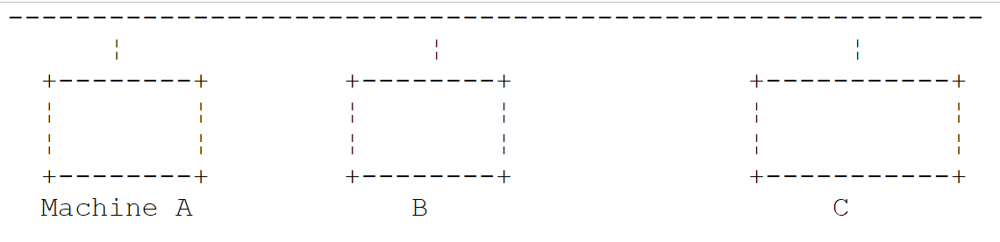
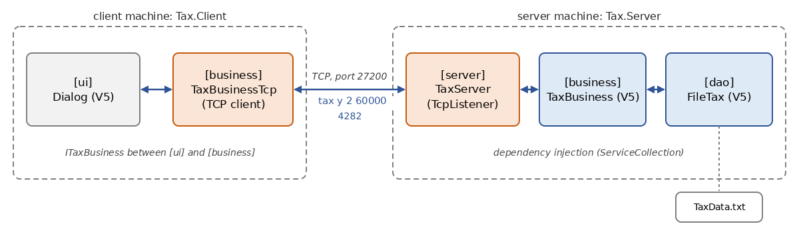

12. Webprogrammierung
12.1. Überblick
12.1.1. Internetprotokolle
Hier geben wir eine Einführung in die Kommunikationsprotokolle des Internets, auch bekannt als TCP/IP-Protokollfamilie (Transmission Control Protocol / Internet Protocol), benannt nach den beiden wichtigsten Protokollen. Es ist hilfreich, wenn der Leser ein allgemeines Verständnis davon hat, wie Netzwerke funktionieren – insbesondere die TCP/IP-Protokolle –, bevor er sich an die Entwicklung verteilter Anwendungen wagt. Der Kurs von 2008 enthielt einen übersetzten Auszug aus dem Administrationshandbuch „Lan Workplace for DOS“ von Novell (Anfang der 1990er Jahre). Wir haben seine Struktur und seinen Geist beibehalten, ihn aber aktualisiert: Das Internet von 2026 ist nicht mehr ganz dasselbe wie das von 1990.
Die allgemeine Idee, ein Netzwerk heterogener Computer zu schaffen, geht auf Forschungen der DARPA (Defense Advanced Research Projects Agency) in den Vereinigten Staaten zurück. Die DARPA entwickelte die als TCP/IP bekannte Protokollfamilie, die es heterogenen Maschinen ermöglicht, miteinander zu kommunizieren. Diese Protokolle wurden in einem Netzwerk namens ARPAnet getestet, das später zum Internet wurde (ARPAnet führte am 1. Januar 1983 TCP/IP ein). Die TCP/IP-Protokolle definieren Formate und Regeln für Senden und Empfangen, die unabhängig von der Netzwerkarchitektur und der verwendeten Hardware sind.
Das von der DARPA konzipierte und von den TCP/IP-Protokollen verwaltete Netzwerk ist ein paketvermitteltes Netzwerk. Ein solches Netzwerk überträgt Informationen in kleinen Stücken, den sogenannten Paketen. Überträgt ein Computer also eine große Datei, wird sie in kleine Stücke zerlegt, die über das Netzwerk gesendet und am Ziel wieder zusammengesetzt werden. TCP/IP definiert das Format dieser Pakete, darunter insbesondere:
- die Quelle des Pakets;
- sein Ziel;
- seine Länge;
- sein Typ.
Die Internetprotokolle werden in öffentlichen Dokumenten beschrieben, den sogenannten RFC (Request for Comments), die von der IETF (Internet Engineering Task Force) veröffentlicht werden und auf www.rfc-editor.org verfügbar sind. Wir werden in diesem Kapitel einige dieser Dokumente zitieren.
12.1.2. Das OSI-Modell
Die TCP/IP-Protokolle folgen im Allgemeinen dem offenen Netzwerkmodell namens OSI (Open Systems Interconnection Reference Model), das von der ISO (International Organization for Standardization) definiert wurde. Dieses Modell beschreibt ein ideales Netzwerk, in dem die Kommunikation zwischen Maschinen durch ein Sieben-Schichten-Modell dargestellt werden kann:

Jede Schicht erhält Dienste von der Schicht unter ihr und stellt der Schicht über ihr ihre eigenen Dienste bereit. Angenommen, zwei Anwendungen auf verschiedenen Maschinen, A und B, möchten kommunizieren: Sie tun dies auf der Anwendungsschicht. Sie müssen nicht alle Einzelheiten der Funktionsweise des Netzwerks kennen: Jede Anwendung gibt die Informationen, die sie übertragen möchte, an die Schicht unter ihr weiter, die Darstellungsschicht. Die Anwendung muss daher nur die Regeln für die Schnittstelle zur Darstellungsschicht kennen. Befinden sich die Informationen in der Darstellungsschicht, werden sie nach anderen Regeln an die Sitzungsschicht weitergereicht und so weiter, bis die Informationen das physische Medium erreichen und physisch zur Zielmaschine übertragen werden. Dort durchlaufen sie den umgekehrten Prozess zu dem, den sie auf der sendenden Maschine durchlaufen haben.
In jeder Schicht sendet der Senderprozess, der für das Senden der Informationen zuständig ist, sie an einen Empfängerprozess auf der anderen Maschine, der zur selben Schicht gehört. Er tut dies nach bestimmten Regeln, die als Protokoll der Schicht bezeichnet werden. Die tatsächliche Kommunikation läuft durch die Schichten von Maschine A nach unten, durchquert das physische Netzwerk und läuft dann durch die Schichten von Maschine B nach oben; dennoch nimmt jede Schicht an, direkt mit der entsprechenden Schicht auf der anderen Maschine zu kommunizieren.
Die Aufgaben der verschiedenen Schichten sind wie folgt:
Schicht | Aufgabe |
Bitübertragung | Stellt die Übertragung von Bits über ein physisches Medium sicher (Kupferkabel, Glasfaserkabel, Funkwellen). Wichtige Aspekte auf dieser Ebene sind die Codierung der Informationen in Signale und das Übertragungsverfahren. |
Sicherung | Abstrahiert die physischen Eigenschaften der Bitübertragungsschicht. Unterteilt Informationen in Frames, erkennt (und korrigiert teilweise) Übertragungsfehler und verwaltet den Zugriff auf das gemeinsam genutzte Medium. |
Vermittlung | Verwaltet den Weg, dem über das Netzwerk gesendete Informationen folgen müssen. Das nennt man Routing: die Bestimmung der Route, die Informationen nehmen müssen, um ihr Ziel zu erreichen. |
Transport | Ermöglicht die Kommunikation zwischen zwei Anwendungen, während die vorherigen Schichten nur die Kommunikation zwischen Maschinen erlaubten. Ein von dieser Schicht bereitgestellter Dienst ist das Multiplexing: Die Transportschicht nutzt eine einzige Netzwerkverbindung (von Maschine zu Maschine), um Daten zu übertragen, die zu mehreren Anwendungen gehören. |
Sitzung | Stellt Dienste bereit, mit denen eine Anwendung eine Arbeitssitzung auf einer entfernten Maschine öffnen und aufrechterhalten kann. |
Darstellung | Vereinheitlicht die Darstellung von Daten über verschiedene Maschinen hinweg. Daten von Maschine A werden von der Darstellungsschicht der Maschine A nach einem Standardformat „formatiert“, bevor sie über das Netzwerk gesendet werden. Sobald sie die Darstellungsschicht der Zielmaschine B erreichen – die sie anhand ihres Standardformats erkennt –, werden die Daten so umformatiert, dass die Anwendung auf Maschine B sie erkennen kann. |
Anwendung | Auf dieser Ebene befinden sich Anwendungen, die im Allgemeinen nah am Benutzer sind, etwa E-Mail, das Web oder die Dateiübertragung. |
12.1.3. Das TCP/IP-Modell
Das OSI-Modell ist ein Referenzmodell, das nie so umgesetzt wurde. Die TCP/IP-Protokollfamilie, die zum Standard geworden ist, ist in nur vier Schichten organisiert:

Die Sitzungs- und die Darstellungsschicht existieren in TCP/IP als solche nicht: Ihre Funktionen werden, wenn nötig, von den Anwendungen selbst oder von dazwischenliegenden Protokollen wie TLS (Verschlüsselung des Datenaustauschs) übernommen, das zwischen TCP und die Anwendung eingefügt wird.
Die Netzzugangsschicht
In lokalen Netzwerken ist die heute vorherrschende Technologie Ethernet für kabelgebundene Verbindungen und WLAN (IEEE-802.11-Standards) für drahtlose Verbindungen. Der Kurs von 2008 behandelte auch Token Ring, eine Technologie, die heute nicht mehr verwendet wird.
Ethernet ist der Name einer paketvermittelten Technologie für lokale Netzwerke, die Anfang der 1970er Jahre bei Xerox erfunden und 1980 von Xerox, Intel und Digital Equipment standardisiert wurde, später dann vom IEEE (Standard 802.3). Das ursprüngliche Ethernet bestand aus einem Koaxialkabel, an das alle Maschinen angeschlossen waren (Bus-Topologie), mit einer Datenrate von 10 Megabit pro Sekunde:

Dies war ein Broadcast-Netzwerk: Eine sendende Maschine schickte Informationen über das Kabel, die die Adresse der Zielmaschine enthielten; alle angeschlossenen Maschinen empfingen sie, und nur der vorgesehene Empfänger behielt sie. Da mehrere Maschinen gleichzeitig senden konnten, mussten Kollisionen erkannt werden: Dazu diente das Verfahren Carrier Sense Multiple Access/Collision Detect (CSMA/CD). Jeder Sender horchte vor dem Senden das Kabel ab (CSMA) und überprüfte während des Sendens, dass das, was auf dem Kabel lief, tatsächlich das war, was er gesendet hatte; war dies nicht der Fall, lag eine Kollision vor (CD): Jeder stellte das Senden ein und versuchte es nach einer zufälligen Wartezeit erneut.
Das moderne Ethernet hat sich erheblich weiterentwickelt: Geräte werden über Twisted-Pair-Kabel oder Glasfaserkabel mit einem Switch verbunden, der jeden Frame an den spezifischen Port des Empfängers leitet. Die Verbindungen sind vollduplex (gleichzeitiges Senden und Empfangen): Es gibt keine Kollisionen mehr, und CSMA/CD ist überflüssig geworden. Typische Datenraten liegen zwischen 1 und 10 Gigabit pro Sekunde, in Rechenzentren deutlich höher.
Was sich nicht geändert hat, ist die 48-Bit-Adressierung: Jede Netzwerkkarte hat eine Adresse, die physische Adresse oder MAC-Adresse (Media Access Control) genannt wird und im Allgemeinen als sechs hexadezimale Bytes geschrieben wird (zum Beispiel [00:1A:2B:3C:4D:5E]). Sie wird vom Hersteller in die Karte eingebettet, kann aber – entgegen der Aussage im Kurs von 2008 – per Software geändert werden: Aktuelle Betriebssysteme verwenden in WLANs sogar zufällige MAC-Adressen, um zu verhindern, dass ein Gerät von Netzwerk zu Netzwerk verfolgt wird.
Die Internetschicht (Vermittlungsschicht)
Auf dieser Schicht finden sich die folgenden Protokolle:
Protokoll | Aufgabe |
IP (Internet Protocol) | liefert Pakete zwischen zwei Netzwerkknoten, in Version 4 (IPv4) oder 6 (IPv6) |
ICMP (Internet Control Message Protocol) | erleichtert die Kommunikation zwischen dem Programm des IP-Protokolls auf einer Maschine und dem auf einer anderen Maschine. Es ist somit ein Protokoll zum Austausch von Kontrollnachrichten innerhalb des IP-Protokolls selbst |
ARP (Address Resolution Protocol) | ordnet die IP-Adresse einer Maschine der physischen Adresse der Maschine zu (in IPv6 übernimmt diese Aufgabe das Protokoll NDP, das Neighbor Discovery Protocol) |
Der Kurs von 2008 erwähnte auch RARP (Reverse Address Resolution Protocol), das die umgekehrte Zuordnung vornahm. Es ist längst zugunsten von DHCP veraltet, auf das wir später eingehen.
Die Transportschicht
Diese Schicht umfasst die folgenden Protokolle:
Protokoll | Aufgabe |
TCP (Transmission Control Protocol) | stellt eine zuverlässige und geordnete Übermittlung von Informationen zwischen zwei Anwendungen sicher |
UDP (User Datagram Protocol) | stellt eine unzuverlässige Übermittlung von Informationen zwischen zwei Anwendungen sicher |
Das Protokoll QUIC (2021), auf dem HTTP/3 basiert, ist ein zuverlässiges, verschlüsseltes Transportprotokoll, das auf UDP aufsetzt.
Die Anwendungsschicht
Hier finden sich verschiedene Protokolle, die wir etwas weiter unten genauer behandeln:
Protokoll | Aufgabe |
HTTP, HTTPS (HyperText Transfer Protocol) | Das Protokoll des Webs: Ein Client (Browser, Anwendung) fordert Ressourcen von einem Webserver an. HTTPS ist mit TLS verschlüsseltes HTTP |
DNS (Domain Name System) | wandelt einen Maschinennamen in eine IP-Adresse um |
SMTP (Simple Mail Transfer Protocol) | ermöglicht das Senden von E-Mails |
POP3, IMAP | ermöglichen das Lesen von E-Mails, die auf einem Server gespeichert sind |
SSH (Secure Shell) | ermöglicht es, sich mit einer entfernten Maschine zu verbinden und dort Befehle verschlüsselt auszuführen. Es hat TELNET abgelöst, das dieselbe Funktion ohne Verschlüsselung erfüllte |
FTP (File Transfer Protocol), SFTP | ermöglichen Dateiübertragungen |
DHCP (Dynamic Host Configuration Protocol) | ermöglicht es einer Maschine, ihre IP-Adresse und Netzwerkkonfiguration automatisch zu beziehen |
12.1.4. Funktionsweise der Internetprotokolle
Anwendungen, die in der TCP/IP-Umgebung entwickelt werden, verwenden im Allgemeinen mehrere Protokolle dieser Umgebung. Ein Anwendungsprogramm kommuniziert mit der höchsten Schicht der Protokolle. Diese Schicht reicht die Informationen an die darunterliegende Schicht weiter und so fort, bis das physische Medium erreicht ist. Dort werden die Informationen physisch zur empfangenden Maschine übertragen, wo sie dieselben Schichten erneut durchlaufen – diesmal in umgekehrter Reihenfolge –, bis sie die Anwendung erreichen, die der vorgesehene Empfänger der gesendeten Informationen ist. Das folgende Diagramm zeigt den Weg der Informationen:

Nehmen wir ein Beispiel: eine Anwendung, die mit TCP eine Datei an eine andere Maschine sendet.
- Die Anwendung übergibt der Transportschicht eine Folge von Bytes, die übertragen werden soll;
- die Transportschicht teilt diese Folge von Bytes in TCP-Segmente auf und fügt am Anfang jedes Segments einen Header hinzu, der unter anderem die Portnummern von Quelle und Ziel sowie eine Sequenznummer enthält. Die Segmente werden an die Vermittlungsschicht weitergegeben, die vom IP-Protokoll gesteuert wird;
- die IP-Schicht erzeugt ein Paket, das das erhaltene TCP-Segment kapselt. In den Header dieses Pakets setzt sie die IP-Adressen der Quell- und der Zielmaschine. Sie bestimmt außerdem die physische Adresse der Maschine, an die das Paket zugestellt werden soll (die Zielmaschine selbst oder ein Router). Das gesamte Paket wird an die Netzzugangsschicht übergeben, also an die Netzwerkkarte, die die Maschine mit dem physischen Netzwerk verbindet;
- dort wird das IP-Paket seinerseits in einen physischen Frame gekapselt und über das Medium an seinen Empfänger gesendet;
- auf der Zielmaschine führt die Netzzugangsschicht den umgekehrten Vorgang aus: Sie entkapselt das IP-Paket aus dem physischen Frame und gibt es an die IP-Schicht weiter;
- die IP-Schicht prüft, ob das Paket gültig ist: Sie berechnet eine Prüfsumme seines Headers, die sie im Header des Pakets wiederfinden muss. Ist das nicht der Fall, wird das Paket verworfen;
- gilt das Paket als gültig, entkapselt die IP-Schicht das darin enthaltene TCP-Segment und gibt es nach oben an die Transportschicht weiter;
- die TCP-Schicht prüft ebenfalls eine Prüfsumme des Segments. Ist sie korrekt, sendet sie eine Bestätigung an die Quellmaschine; andernfalls wird das Segment ignoriert (und von der Quelle erneut gesendet);
- anhand der Sequenznummern bringt die TCP-Schicht die Segmente in die richtige Reihenfolge;
- die TCP-Schicht muss nun nur noch den Datenteil der Segmente an die Zielanwendung übergeben, die anhand der Zielportnummer identifiziert wird.
12.1.5. Adressierungsprobleme im Internet
Ein Netzwerkknoten kann ein Computer, ein Drucker, ein Telefon, ein vernetztes Gerät sein – im Grunde alles, was über die TCP/IP-Protokolle kommunizieren kann. Jeder Knoten hat eine physische Adresse, deren Format vom Netzwerktyp abhängt. In einem Ethernet- oder WLAN-Netzwerk wird die physische Adresse mit 6 Bytes codiert.
Die Internetadresse (IP) eines Knotens ist eine logische Adresse: Sie ist unabhängig von der Hardware und dem verwendeten Netzwerk. In IPv4 ist sie eine 4-Byte-Adresse, die sowohl ein Netzwerk als auch einen Knoten in diesem Netzwerk identifiziert. Sie wird üblicherweise als vier Zahlen – die Werte der vier Bytes – dargestellt, die durch einen Punkt getrennt sind. Beispielsweise lautete 2008 die Adresse der Maschine namens „Lagaffe“ an der Faculté des Sciences in Angers 193.49.144.1 und die der Maschine namens „Liny“ 193.49.144.9. Daraus ließ sich ableiten, dass die Adresse des lokalen Netzwerks 193.49.144.0 war und dass es in diesem Netzwerk bis zu 254 Knoten geben konnte.
Da IP-Adressen vom physischen Netzwerk unabhängig sind, kann ein Computer in Netzwerk A mit einem Computer in Netzwerk B kommunizieren, ohne sich darum zu kümmern, an welchem Netzwerktyp Letzterer hängt: Er muss lediglich seine IP-Adresse kennen. Das IP-Protokoll jedes Netzwerks übernimmt die Umsetzung zwischen IP-Adressen und physischen Adressen, in beide Richtungen.
Alle öffentlichen IP-Adressen müssen eindeutig sein. Ihre Vergabe folgt einer hierarchischen Struktur: Die IANA (Internet Assigned Numbers Authority) verteilt Adressblöcke an fünf regionale Registrierungsstellen, darunter das RIPE NCC für Europa, die sie an Netzbetreiber und große Organisationen weiterverteilen. Diese Stellen weisen sie dann ihren Kunden zu. Der Administrator eines Netzwerks, das den Block 193.49.144.0 bis 193.49.144.255 erhalten hat, kann die Adressen 193.49.144.1 bis 193.49.144.254 nach eigenem Ermessen vergeben. Der Kurs von 2008 gab an, dass in Frankreich das INRIA für die Vergabe von Adressen zuständig war; das ist schon lange nicht mehr der Fall.
12.1.5.1. IP-Adressklassen und CIDR-Notation
Eine IPv4-Adresse ist eine Folge von 4 Bytes, geschrieben als I1.I2.I3.I4, die tatsächlich zwei Informationen enthält:
- die Netzwerkadresse (die höherwertigen Bits);
- die Adresse eines Knotens innerhalb dieses Netzwerks (die niederwertigen Bits).
Ursprünglich wurde die Größe dieser beiden Felder durch den Wert des ersten Bytes bestimmt. IP-Adressen wurden in drei Hauptklassen eingeteilt:
Klasse | Erstes Byte | Netzwerk / Knoten | Anzahl der Netzwerke und Knoten |
A | 1 bis 126 (höchstwertiges Bit 0) | R1.N1.N2.N3: 1 Byte Netzwerk (7 signifikante Bits), 3 Bytes Knoten | 126 Netzwerke mit 2²⁴ - 2 Knoten (etwa 16 Millionen) |
B | 128 bis 191 (höchstwertige Bits 10) | R1.R2.N1.N2: 2 Bytes Netzwerk (14 signifikante Bits), 2 Bytes Knoten | 2¹⁴ = 16.384 Netzwerke mit 2¹⁶ - 2 = 65.534 Knoten |
C | 192 bis 223 (höchstwertige Bits 110) | R1.R2.R3.N1: 3 Bytes Netzwerk (21 signifikante Bits), 1 Byte Knoten | 2²¹ Netzwerke (etwa 2 Millionen) mit 254 Knoten |
Da die Adresse der Maschine Lagaffe 193.49.144.1 lautet, ist das höchstwertige Byte 193, binär 11000001: Das Netzwerk war ein Netzwerk der Klasse C.
Diese Klasseneinteilung erwies sich als viel zu starr: Eine Organisation mit 300 Maschinen musste ein Netzwerk der Klasse B verwenden und verschwendete dabei mehr als 65.000 Adressen. Seit 1993 (RFC 1518 und 1519) wurden die Klassen zugunsten des klassenlosen Routings (CIDR, Classless Inter-Domain Routing) aufgegeben. Die Grenze zwischen Netzwerkanteil und Hostanteil kann an jedem beliebigen Bit liegen; sie wird durch die Länge des Netzwerkpräfixes nach einem Schrägstrich angegeben:
- 193.49.144.0/24: Die ersten 24 Bits bezeichnen das Netzwerk, die letzten 8 Bits den Knoten. Dieses Netzwerk enthält die Adressen 193.49.144.0 bis 193.49.144.255;
- 10.0.0.0/8: ein Netzwerk mit 2²⁴ Adressen;
- 192.168.1.0/26: ein Netzwerk mit 2⁶ = 64 Adressen, von 192.168.1.0 bis 192.168.1.63.
Die alte Notation der Subnetzmaske wird weiterhin verwendet und drückt dasselbe aus: Das Präfix /24 entspricht der Maske 255.255.255.0. Die Begriffe „Klasse A, B, C“ sind weiterhin gebräuchlich, entsprechen aber keinem tatsächlichen Mechanismus mehr.
12.1.5.2. Reservierte Adressen, private Adressen und NAT
Bestimmte Adressen dienen einem besonderen Zweck:
- Eine Adresse, deren Hostanteil nur aus Nullen besteht, bezeichnet das Netzwerk selbst: 193.49.144.0 ist die Adresse des Netzwerks 193.49.144.0/24;
- eine Adresse, deren Hostanteil nur aus Einsen besteht, ist eine Broadcast-Adresse: 193.49.144.255 bezeichnet alle Hosts des Netzwerks 193.49.144.0/24. Diese beiden Adressen können daher keinem Knoten zugewiesen werden: Ein /24-Netzwerk mit 256 Adressen bietet nur 254 nutzbare Adressen;
- die Adressen 127.0.0.0/8 und praktisch 127.0.0.1 sind Loopback-Adressen: Eine Maschine verwendet sie, um sich selbst anzusprechen, ohne das Netzwerk zu durchlaufen. Der Name [localhost] ist ihnen zugeordnet;
- die Blöcke 10.0.0.0/8, 172.16.0.0/12 und 192.168.0.0/16 (RFC 1918) sind für private Netzwerke reserviert: Sie können innerhalb eines Unternehmens oder eines Haushalts frei verwendet werden, werden aber im Internet nicht geroutet;
- die Blöcke 192.0.2.0/24, 198.51.100.0/24 und 203.0.113.0/24 (RFC 5737) sind für Dokumentation und Beispiele reserviert.
Die Anzahl der IPv4-Adressen (2³², also knapp über 4 Milliarden) reicht für alle vernetzten Maschinen nicht aus. Der zentrale Adresspool der IANA war 2011 erschöpft, der des RIPE NCC 2019. Der Mangel wurde durch Network Address Translation (NAT) umgangen: Geräte in einem Haushalt haben private Adressen (wie 192.168.1.x), und der Router, der sie mit dem Internet verbindet, „übersetzt“ sie in seine eigene eindeutige öffentliche Adresse. Die langfristige Lösung ist IPv6.
12.1.5.3. IPv6-Adressen
IPv6 (RFC 2460 im Jahr 1998, heute RFC 8200) codiert Adressen mit 128 Bits und bietet damit 2¹²⁸ mögliche Adressen – etwa 3,4 × 10³⁸ –, sodass man sich um einen Mangel nicht mehr sorgen muss. Eine IPv6-Adresse wird als acht Gruppen aus vier Hexadezimalziffern geschrieben, die durch Doppelpunkte getrennt sind:
Führende Nullen in jeder Gruppe dürfen weggelassen werden, und eine einzelne Folge von Nullgruppen darf durch [::] ersetzt werden. Die vorherige Adresse wird daher als [2001:db8::8a2e:0:370:7334] geschrieben. Die Loopback-Adresse, das Äquivalent zu 127.0.0.1, lautet [::1]. In einer URL wird eine IPv6-Adresse in eckige Klammern gesetzt, um zu vermeiden, dass ihre Doppelpunkte mit dem Doppelpunkt vor dem Port verwechselt werden: [http://[::1]:8080/].
IPv6 bringt weitere Vereinfachungen: Der Paket-Header hat eine feste Länge, die automatische Adresskonfiguration ist standardmäßig eingebaut, und die Adressübersetzung per NAT ist nicht mehr nötig. Die Verbreitung verlief langsam, aber ein bedeutender und wachsender Teil des Internetverkehrs läuft inzwischen über IPv6 (Google veröffentlicht zum Beispiel den Anteil seiner Nutzer, die darüber zugreifen), und die großen französischen Internetanbieter stellen es ihren Kunden bereit. Beide Versionen existieren nebeneinander: Die meisten Maschinen haben sowohl IPv4- als auch IPv6-Adressen (man spricht von „Dual Stack“), und Programme müssen mit beiden umgehen können.
12.1.5.4. Protokolle zur Umsetzung zwischen IP-Adressen und physischen Adressen
Wir haben gesehen, dass Daten, wenn sie von einer Maschine zu einer anderen übertragen werden, beim Durchlaufen der IP-Schicht in Pakete gekapselt werden. Diese Pakete haben die folgende Form:

Das IP-Paket enthält also die IP-Adressen der Quell- und der Zielmaschine. Wird dieses Paket an die Schicht übergeben, die für das Senden über das physische Netzwerk zuständig ist, werden zusätzliche Informationen hinzugefügt, die den physischen Frame bilden, der schließlich über das Netzwerk gesendet wird. Das Format eines Frames in einem Ethernet-Netzwerk ist zum Beispiel wie folgt:

Die ersten 8 Bytes (Präambel) dienen der Synchronisation; das 2-Byte-Feld vor den Daten gibt in der gebräuchlichsten Form des Ethernet-Frames den Typ des transportierten Protokolls an (IPv4, IPv6, ARP ...) und nicht die Paketlänge. Im endgültigen Frame stehen die physischen Adressen der Quell- und der Zielmaschine (im tatsächlichen Frame steht die Zieladresse vor der Quelladresse, anders als in der Reihenfolge im Diagramm). Wie werden sie ermittelt?
Die sendende Maschine, die die IP-Adresse der Maschine kennt, mit der sie kommunizieren möchte, ermittelt deren physische Adresse mit dem Protokoll ARP (Address Resolution Protocol):
- Sie sendet eine besondere Art von Paket, ein sogenanntes ARP-Paket, das die IP-Adresse der Maschine enthält, deren physische Adresse gesucht wird. Es enthält außerdem ihre eigene IP-Adresse sowie ihre physische Adresse;
- dieses Paket wird an alle Knoten des lokalen Netzwerks gesendet (Broadcast);
- diese Knoten erkennen die besondere Natur des Pakets. Der Knoten, der seine IP-Adresse im Paket erkennt, antwortet, indem er dem Absender seine physische Adresse sendet. Das kann er, weil er die IP-Adresse und die physische Adresse des Absenders im Paket gefunden hat;
- der Absender erhält somit die gesuchte physische Adresse. Er speichert sie in einem Cache, um sie später verwenden zu können, falls weitere Pakete an denselben Empfänger gesendet werden müssen.
In IPv6 wird derselbe Dienst vom Protokoll NDP (Neighbor Discovery Protocol) bereitgestellt, das auf ICMPv6-Nachrichten beruht.
Es bleibt die Frage: Woher kennt eine Maschine ihre eigene IP-Adresse? Sie kann in einer Konfigurationsdatei auf der Maschine festgelegt werden – bei Servern ist das nach wie vor gängige Praxis. Muss ein Administrator das Netzwerk jedoch umstrukturieren, ist es mühsam und fehleranfällig, die Konfigurationsdateien jeder Maschine einzeln zu ändern. Der Kurs von 2008 stellte das Protokoll RARP vor, mit dem eine Maschine ihre IP-Adresse anhand ihrer physischen Adresse bei einem Server anfragte. Es wurde durch DHCP (Dynamic Host Configuration Protocol, RFC 2131) ersetzt: Beim Start sendet die Maschine eine Anfrage per Broadcast ins Netzwerk; ein Server (etwa ein Heimrouter oder ein dedizierter Server in einem Unternehmen) weist ihr für eine begrenzte Zeit (eine Lease) eine Adresse zu, zusammen mit dem Rest ihrer Konfiguration: Netzwerkpräfix, Routeradresse und Adressen der DNS-Server. Der Administrator muss dann nur noch den DHCP-Server konfigurieren. In IPv6 kann ein Gerät seine Adresse auch selbst aus dem vom Router angekündigten Präfix bilden (Autokonfiguration per SLAAC).
12.1.6. Die Vermittlungsschicht, die sogenannte IP-Schicht, des Internets
Das IP-Protokoll definiert das Format, das Pakete haben müssen, und wie sie beim Senden und Empfangen zu behandeln sind. Diese besondere Art von Paket wird IP-Datagramm genannt. Wir haben es bereits besprochen:
Wichtig ist, dass das IP-Datagramm neben den zu übertragenden Daten die IP-Adressen der Quell- und der Zielmaschine enthält. So weiß die Zielmaschine, wer ihr eine Nachricht sendet.
Anders als ein Netzwerk-Frame, dessen Länge durch die physischen Eigenschaften des durchlaufenen Netzwerks bestimmt wird, wird die Länge des IP-Datagramms durch die Software festgelegt und ist daher in verschiedenen physischen Netzwerken dieselbe. Wir haben gesehen, dass das IP-Datagramm beim Abstieg von der Vermittlungsschicht zur Bitübertragungsschicht in einen physischen Frame gekapselt wird.
Physische Frames wandern von Knoten zu Knoten in Richtung ihres Ziels, das sich nicht im selben physischen Netzwerk wie die sendende Maschine befinden muss. Das IP-Paket kann daher an den Knoten, die zwei Netzwerke unterschiedlichen Typs verbinden, nacheinander in verschiedene physische Frames gekapselt werden. Es ist auch möglich, dass das IP-Paket zu groß ist, um in einen physischen Frame gekapselt zu werden (die Nutzlast eines Ethernet-Frames ist auf 1.500 Bytes begrenzt). In IPv4 zerlegt der Knoten, an dem dieses Problem auftritt, das IP-Paket dann in Fragmente, die erst am endgültigen Ziel wieder zusammengesetzt werden. In IPv6 fragmentieren Router Pakete nicht mehr: Der Sender muss die maximale auf dem Weg akzeptierte Größe ermitteln und die Größe seiner Pakete entsprechend anpassen.
12.1.6.1. Routing
Routing ist das Verfahren, IP-Pakete zu ihrem Ziel zu leiten. Es gibt zwei Methoden: direktes Routing und indirektes Routing.
Direktes Routing
Direktes Routing bezeichnet die Übertragung eines IP-Pakets direkt vom Sender zum Empfänger innerhalb desselben Netzwerks:
- Die Maschine, die ein IP-Datagramm sendet, kennt die IP-Adresse des Empfängers;
- sie ermittelt die physische Adresse des Empfängers über das Protokoll ARP oder aus ihrem Cache, falls diese Adresse bereits ermittelt wurde;
- sie sendet das Paket über das Netzwerk an diese physische Adresse.
Indirektes Routing
Indirektes Routing bezeichnet die Übertragung eines IP-Pakets an ein Ziel, das in einem anderen Netzwerk liegt als dem, zu dem der Sender gehört. In diesem Fall unterscheiden sich die „Netzwerk“-Anteile der IP-Adressen von Quell- und Zielmaschine; die Quellmaschine erkennt das, indem sie die Zieladresse mit ihrem eigenen Netzwerkpräfix vergleicht. Sie sendet das Paket dann an einen besonderen Knoten, den Router, der das lokale Netzwerk mit anderen Netzwerken verbindet und dessen IP-Adresse der Quellmaschine bekannt ist (man spricht vom Standardgateway, das üblicherweise per DHCP bereitgestellt wird). Ein Router ist mit mindestens zwei Netzwerken verbunden und hat in jedem von ihnen eine IP-Adresse:

In unserem obigen Beispiel:
- Netzwerk Nr. 1 hat die Adresse 193.49.144.0/24 und Netzwerk Nr. 2 die Adresse 193.49.145.0/24;
- in Netzwerk Nr. 1 hat der Router die Adresse 193.49.144.6, in Netzwerk Nr. 2 die Adresse 193.49.145.3.
Die Aufgabe des Routers besteht darin, das IP-Paket, das er in einem physischen Frame aus Netzwerk Nr. 1 erhält, in einen physischen Frame zu setzen, der durch Netzwerk Nr. 2 laufen kann. Liegt die IP-Zieladresse des Pakets in Netzwerk Nr. 2, sendet der Router das Paket direkt dorthin; andernfalls sendet er es an einen anderen Router, der Netzwerk Nr. 2 mit Netzwerk Nr. 3 verbindet, und so weiter. Internet-Router tauschen ständig Informationen über die Netzwerke aus, die sie erreichen können (Routingprotokolle wie BGP zwischen Netzbetreibern), um ihre Routingtabellen aufzubauen.
12.1.6.2. Fehler- und Kontrollnachrichten
Ebenfalls in der Vermittlungsschicht – und damit auf derselben Ebene wie das IP-Protokoll – befindet sich das Protokoll ICMP (Internet Control Message Protocol). Es dient dazu, Nachrichten über den internen Betrieb des Netzwerks zu senden: nicht erreichbarer Knoten, Paket, das zu viele Router durchlaufen hat usw. ICMP-Nachrichten werden in IP-Pakete gekapselt und über das Netzwerk gesendet. Die IP-Schichten der verschiedenen Knoten ergreifen anhand der empfangenen ICMP-Nachrichten die geeigneten Maßnahmen. Eine Anwendung selbst bekommt diese netzwerkspezifischen Probleme daher nie zu sehen. Die Befehle [ping] (der ICMP-Nachrichten „Echo Request“ sendet und auf „Echo Reply“ wartet) und [traceroute] / [tracert] (der die durchlaufenen Router anzeigt) beruhen auf ICMP.
12.1.7. Die Transportschicht: die Protokolle UDP und TCP
12.1.7.1. Das Protokoll UDP: User Datagram Protocol
Das Protokoll UDP ermöglicht einen unzuverlässigen Datenaustausch zwischen zwei Punkten; das heißt, die erfolgreiche Zustellung eines Pakets an sein Ziel ist nicht garantiert, ebenso wenig die Reihenfolge, in der Pakete eintreffen. Die Anwendung kann sich, wenn sie will, selbst darum kümmern – zum Beispiel, indem sie nach dem Senden einer Nachricht auf eine Bestätigung wartet, bevor sie die nächste sendet.
Bisher haben wir auf Netzwerkebene von den IP-Adressen der Maschinen gesprochen. Auf ein und derselben Maschine können jedoch gleichzeitig verschiedene Prozesse nebeneinander existieren, und alle können miteinander kommunizieren. Beim Senden einer Nachricht muss daher nicht nur die IP-Adresse der Zielmaschine angegeben werden, sondern auch der „Name“ des Zielprozesses. Dieser Name ist in Wirklichkeit eine 16-Bit-Zahl (von 1 bis 65.535), die Portnummer genannt wird. Bestimmte Nummern sind für Standardanwendungen reserviert: Port 53 für DNS, 80 für HTTP, 443 für HTTPS, 25 für SMTP und so weiter. Ports unterhalb von 1024 heißen „Well-known Ports“; unter Linux sind besondere Rechte erforderlich, um auf einem von ihnen einen Dienst zu öffnen. Die Beispiele in diesem Kapitel verwenden Ports aus den Bereichen 27100–27199 und 27200–27299.
Pakete, die vom Protokoll UDP behandelt werden, heißen Datagramme. Sie haben die folgende Form:

Diese Datagramme werden in IP-Pakete und anschließend in physische Frames gekapselt. UDP wird verwendet, wenn Geschwindigkeit wichtiger ist als Zuverlässigkeit oder wenn die Anwendung den Paketverlust selbst behandelt: DNS (eine Frage, eine Antwort), Live-Audio- und Videostreaming, Online-Spiele und das Protokoll QUIC von HTTP/3.
12.1.7.2. Das Protokoll TCP: Transmission Control Protocol
Für sichere Kommunikation ist das Protokoll UDP nicht ausreichend: Der Anwendungsentwickler müsste selbst ein Protokoll entwerfen, um sicherzustellen, dass die Pakete korrekt zugestellt werden. Das Protokoll TCP vermeidet diese Probleme. Seine Merkmale sind die folgenden:
- Der Prozess, der Daten übertragen möchte, baut zunächst eine Verbindung zu dem Prozess auf, der die zu übertragenden Informationen empfangen wird. Diese Verbindung wird zwischen einem Port auf der sendenden Maschine und einem Port auf der empfangenden Maschine durch den Austausch von drei Segmenten aufgebaut (SYN, SYN-ACK, ACK: der „Three-Way-Handshake“). Zwischen den beiden Ports entsteht so ein virtueller Kanal, der ausschließlich den beiden Prozessen vorbehalten ist, die die Verbindung aufgebaut haben;
- alle vom Quellprozess übertragenen Bytes kommen in der Reihenfolge, in der sie gesendet wurden, am Ziel an, was das Protokoll UDP nicht garantiert, da Pakete unterschiedliche Wege nehmen können;
- die übertragenen Informationen sind kontinuierlich: Es handelt sich um einen Bytestrom. Der sendende Prozess sendet Informationen in seinem eigenen Tempo. Diese Informationen werden nicht unbedingt sofort gesendet: Das Protokoll TCP kann warten, bis es genügend Daten zum Senden hat. Die Daten werden in eine Struktur gelegt, die TCP-Segment genannt wird. Ist dieses Segment gefüllt, wird es an die IP-Schicht übergeben und dort in ein IP-Paket gekapselt. Eine wichtige Konsequenz für den Programmierer: Eine „Zeile“, die auf einmal gesendet wurde, kann in mehreren Teilen ankommen, und mehrere Zeilen können gemeinsam ankommen. Es ist Aufgabe der Anwendung, die Grenzen ihrer Nachrichten zu erkennen (wir verwenden dafür das Zeilenende-Zeichen);
- Jedes vom TCP-Protokoll gesendete Segment wird nummeriert. Das empfangende TCP-Protokoll prüft, ob die Segmente in der richtigen Reihenfolge eintreffen. Für jedes korrekt empfangene Segment sendet es dem Absender eine Bestätigung;
- erhält das TCP-Protokoll, das ein Segment gesendet hat, nach einer gewissen Zeit keine Bestätigung, sendet es das betreffende Segment erneut und gewährleistet so die Qualität des Datenübertragungsdienstes;
- Der zwischen den beiden kommunizierenden Prozessen aufgebaute virtuelle Kanal ist vollduplex: Informationen können gleichzeitig in beide Richtungen fließen. So kann der Zielprozess Bestätigungen senden, während der Quellprozess weiter Informationen sendet. Dadurch kann das TCP-Protokoll der Quelle beispielsweise mehrere Segmente senden, ohne auf Bestätigungen zu warten. Stellt es nach einer gewissen Zeit fest, dass es für ein bestimmtes Segment Nr. n keine Bestätigung erhalten hat, setzt es die Übertragung der Segmente ab dieser Stelle fort;
- TCP regelt außerdem seine Datenrate, um eine Überlastung des Empfängers (Flusskontrolle) oder des Netzwerks (Überlastkontrolle) zu vermeiden.
12.1.8. Die Anwendungsschicht
Oberhalb der Protokolle UDP und TCP befinden sich verschiedene Standardprotokolle:
TELNET und SSH
TELNET ermöglicht es einem Benutzer auf Rechner A, sich mit Rechner B (oft als Host-Rechner bezeichnet) zu verbinden, als hätte er ein an diesen Rechner angeschlossenes Terminal. TELNET basiert auf TCP. Seine Datenaustausche, einschließlich der Passwörter, werden im Klartext übertragen: Es wurde durch SSH (Secure Shell) ersetzt, das denselben Dienst verschlüsselt bereitstellt und auch für die sichere Dateiübertragung (SFTP, SCP) und zum Aufbau von Tunneln verwendet wird. Noch 2008 blieb das Client-Programm [telnet] ein praktisches Werkzeug, um „von Hand“ mit einem TCP-Server zu kommunizieren: Wir werden sehen, wie es sich ersetzen lässt.
FTP (File Transfer Protocol)
Dieses Protokoll ermöglicht den Austausch von Dateien zwischen zwei entfernten Rechnern sowie Dateioperationen wie das Anlegen von Verzeichnissen. Es basiert auf dem TCP-Protokoll. Wie TELNET überträgt es Passwörter im Klartext; es wird zugunsten von SFTP und HTTPS zurückgedrängt.
TFTP (Trivial File Transfer Protocol)
Dieses Protokoll ist eine vereinfachte Variante von FTP. Es basiert auf dem UDP-Protokoll. Es wird weiterhin verwendet, um Rechner über das Netzwerk zu booten.
DNS (Domain Name System)
Wenn ein Benutzer Informationen mit einem entfernten Rechner austauschen möchte, muss er dessen IP-Adresse kennen. Es ist weitaus bequemer, einen Rechner über einen Namen statt über seine IP-Adresse anzusprechen. Dies wirft die Frage der Eindeutigkeit der Namen auf: Es gibt Milliarden miteinander verbundener Rechner. Man könnte sich eine zentrale Instanz vorstellen, die die Namen vergibt, doch das wäre sehr schwerfällig. Die Kontrolle über die Namen wurde auf Domänen verteilt. Jede Domäne wird von einer Organisation verwaltet, die innerhalb ihrer Domäne völlig frei bei der Namenswahl ist. So gehören Rechner in Frankreich häufig zur Domäne [fr], die von der AFNIC verwaltet wird (bis zur Gründung der AFNIC 1997 wurde sie vom INRIA verwaltet). Um die Dinge weiter zu vereinfachen, wird die Kontrolle noch weiter verteilt: Innerhalb der Domäne [fr] werden Domänen angelegt. So besitzt beispielsweise die Universität Angers die Domäne [univ-angers.fr]; die Abteilung, die sie verwaltet, ist völlig frei darin, die Rechner im Netzwerk der Universität zu benennen und Subdomänen anzulegen.
Der vollständige Name eines Rechners (FQDN, Fully Qualified Domain Name) gibt die Hierarchie der Domänen an, zu denen er gehört, vom Spezifischsten zum Allgemeinsten: [www.univ-angers.fr]. Innerhalb einer Domäne können häufig relative Namen verwendet werden, die vom System automatisch vervollständigt werden.
Eine Anwendung kann einen Rechner also über seinen Namen ansprechen. Letztlich muss jedoch weiterhin die IP-Adresse dieses Rechners ermittelt werden. Angenommen, Sie möchten von Rechner A aus mit Rechner B kommunizieren:
- Rechner A prüft zunächst eine lokale Zuordnungsdatei ([/etc/hosts] unter Linux und macOS, [C:\Windows\System32\drivers\etc\hosts] unter Windows) und danach seinen Cache;
- andernfalls fragt er den DNS-Server ab, dessen Adresse in seiner Konfiguration steht (in der Regel per DHCP bereitgestellt). Er sendet eine DNS-Anfrage, die den Namen des gesuchten Rechners enthält. Kennt der angefragte Server die Antwort oder hat er sie im Cache, liefert er die zugehörige IP-Adresse an Rechner A zurück. Andernfalls fragt er seinerseits – ausgehend von den Root-Servern – die für die Domäne [fr] zuständigen Server ab, dann die für [univ-angers.fr] und so weiter, bis er die Antwort erhält, die dann an Rechner A zurückgereicht wird.
Die DNS-Domäne ordnet einem Namen verschiedene Arten von Einträgen zu: A (IPv4-Adresse), AAAA (IPv6-Adresse), CNAME (Alias auf einen anderen Namen), MX (Mailserver der Domäne) usw.
HTTP und HTTPS (HyperText Transfer Protocol)
Dies ist das Web-Protokoll und mit Abstand das heute am häufigsten verwendete: nicht nur von Browsern, sondern auch von Anwendungen, die Daten austauschen (die Webservices, die im nächsten Kapitel behandelt werden). Wir werden es ausführlich untersuchen. HTTPS ist HTTP, übertragen über eine durch TLS (Transport Layer Security) verschlüsselte Verbindung; dies ist heute die Standardform des Webs.
SMTP, POP3 und IMAP
SMTP dient zum Senden von E-Mails, während POP3 und IMAP zum Lesen von E-Mails dienen, die auf einem Server gespeichert sind. Auch darauf werden wir eingehen.
XDR, RPC, NFS
Der Kurs von 2008 behandelte außerdem drei von Sun Microsystems definierte Protokolle: XDR (eXternal Data Representation), das eine standardisierte, maschinenunabhängige Datendarstellung festlegt; RPC (Remote Procedure Call), ein auf XDR basierendes Protokoll für entfernte Prozeduraufrufe; NFS (Network File System), das es einem Rechner erlaubt, das Dateisystem eines anderen Rechners zu „sehen“, und auf RPC basiert. NFS wird in der Unix-Welt weiterhin eingesetzt. Das Konzept entfernter Prozeduraufrufe wurde von zahlreichen Nachfolgern übernommen; heute sind dies unter anderem die Webservices REST (auf Basis von HTTP) und gRPC (auf Basis von HTTP/2).
12.1.9. Fazit
In dieser Einführung haben wir einige der wichtigsten Merkmale der Internetprotokolle vorgestellt. Um dieses Gebiet zu vertiefen, können Leser das Standardwerk von Douglas Comer, „Internetworking with TCP/IP, Volume 1“ (Pearson, 6. Auflage), heranziehen – frühere Auflagen wurden ins Französische übersetzt – sowie die in diesem Kapitel zitierten RFC . Für HTTP ist die Mozilla-Dokumentation unter developer.mozilla.org/en-US/docs/Web/HTTP eine ausgezeichnete Einführung.
12.2. Die .NET-Klassen zur Verwaltung von IP-Adressen
Ein Rechner im Internet wird durch eine IP-Adresse identifiziert, die zwei Formen annehmen kann:
- IPv4: in 32 Bit codiert und dargestellt als Zeichenkette der Form "I1.I2.I3.I4", wobei In eine Zahl zwischen 0 und 255 ist;
- IPv6: in 128 Bit codiert und dargestellt als Zeichenkette aus acht durch Doppelpunkte getrennten Gruppen hexadezimaler Ziffern, etwa "2001:db8::8a2e:370:7334". Der Kurs von 2008 kündigte an, keine IPv6-Adressen zu verwenden; das ist heute nicht mehr möglich: Unsere Programme akzeptieren sie.
Ein Rechner kann auch durch einen Namen identifiziert werden. Dieser Name ist nicht zwingend erforderlich, da Anwendungen letztlich immer die IP-Adressen der Rechner verwenden. Namen erleichtern den Benutzern das Leben: Es ist einfacher, einen Browser nach der URL [https://learn.microsoft.com] zu fragen als nach der URL, die aus einer der IP-Adressen dieser Website gebildet wird und die sich übrigens abhängig davon ändert, von wo aus die Anfrage gestellt wird.
Ein Rechner kann mehrere IP-Adressen haben: eine Loopback-Adresse, eine Adresse pro Netzwerk, mit dem er verbunden ist, sowie IPv4- und IPv6-Adressen.
Eine IP-Adresse kann in .NET auf zwei Arten dargestellt werden:
- als Zeichenkette "I1.I2.I3.I4" oder "2001:db8::1";
- als Objekt vom Typ [IPAddress] (Namespace [System.Net]).
Die Klasse IPAddress
Zu den Methoden M, Eigenschaften P und statischen Feldern F der Klasse [IPAddress] gehören die folgenden:
Member | Typ | Rolle |
AddressFamily AddressFamily | P | Familie der IP-Adresse. Der Typ [AddressFamily] (Namespace [System.Net.Sockets]) ist eine Enumeration, deren zwei aktuelle Werte [AddressFamily.InterNetwork] (IPv4) und [AddressFamily.InterNetworkV6] (IPv6) sind |
static IPAddress Any | F | die IPv4-Adresse 0.0.0.0. Ist ein Dienst an diese Adresse gebunden, akzeptiert er Clients über alle IPv4-Adressen des Rechners |
static IPAddress Loopback | F | die Loopback-Adresse 127.0.0.1. Ein an diese Adresse gebundener Dienst akzeptiert nur Clients, die sich auf demselben Rechner wie er selbst befinden |
static IPAddress Broadcast | F | die Broadcast-Adresse 255.255.255.255 ([IPAddress.None] hat denselben Wert) |
static IPAddress IPv6Any, IPv6Loopback | F | die IPv6-Entsprechungen von [Any] (::) und [Loopback] (::1) |
static IPAddress Parse(string ipString) | M | wandelt eine IPv4- oder IPv6-Zeichenkette in ein Objekt [IPAddress] um; löst eine [FormatException] aus, wenn die Zeichenkette keine IP-Adresse ist |
static bool TryParse(string ipString, out IPAddress address) | M | Wie oben, gibt aber [false] zurück, statt eine Ausnahme auszulösen |
static bool IsLoopback(IPAddress address) | M | gibt [true] zurück, wenn die Adresse eine Loopback-Adresse ist (127.x.y.z oder ::1) |
byte[] GetAddressBytes() | M | gibt die Bytes der Adresse zurück (4 bei IPv4, 16 bei IPv6) |
string ToString() | M | gibt die Adresse in ihrer standardisierten Textform zurück |
Zwei weitere Typen ergänzen [IPAddress]:
- [IPEndPoint] stellt einen Verbindungspunkt dar: eine IP-Adresse und eine Portnummer. Seine Eigenschaften [Address] und [Port] liefern diese beiden Angaben; die statische Methode [IPEndPoint.Parse] analysiert eine Zeichenkette wie "127.0.0.1:27100" oder "[::1]:27100";
- [IPNetwork] (seit .NET 8) stellt ein Netzwerk in CIDR-Notation dar, etwa 193.49.144.0/24. Seine Methode [Contains] bestimmt, ob eine Adresse zum Netzwerk gehört.
Das Programm [internet-01.cs] veranschaulicht diese drei Typen:
Ergebnisse:
Kommentare:
- Zeile 7: Ein Collection-Ausdruck initialisiert das Array der zu analysierenden Zeichenketten;
- Zeile 12: [TryParse] gibt [true] zurück, wenn die Zeichenkette eine IPv4- oder IPv6-Adresse ist, und weist das resultierende Objekt [IPAddress] der Variablen [address] zu. Der Nullable-Typ [IPAddress?] zeigt an, dass diese Variable auf [null] gesetzt wird, wenn die Analyse fehlschlägt;
- Zeile 14: Die Eigenschaft [AddressFamily] unterscheidet die beiden Versionen von IP;
- Zeile 15: [GetAddressBytes] gibt die Bytes der Adresse zurück, die [Convert.ToHexString] hexadezimal ausgibt. Wir sehen (Zeile 2 der Ergebnisse), dass 193.49.144.1 aus den vier Bytes C1, 31, 90, 01 besteht und (Zeile 5), dass ::1 aus 15 Nullbytes gefolgt von einem Byte mit dem Wert 1 besteht;
- Zeile 4 der Ergebnisse: eine Überraschung. Die Zeichenkette "192.168.1" wurde akzeptiert und in 192.168.0.1 umgewandelt. [TryParse] akzeptiert nämlich die historischen Kurzformen von IPv4-Adressen (bei denen die letzte Zahl alle verbleibenden Bytes belegt). Um zu prüfen, dass eine Eingabe eine vollständige IPv4-Adresse ist, müssen Sie daher zusätzlich kontrollieren, dass sie vier Zahlen enthält;
- Zeile 6: Die IPv6-Adresse wird in ihrer standardisierten Kurzform erneut ausgegeben. Das Präfix 2001:db8::/32 ist, wie 192.0.2.0/24 bei IPv4, für Dokumentationszwecke reserviert;
- Zeilen 27–31: [IPAddress.Parse] löst für die Zeichenkette „256.1.1.1“ eine [FormatException] aus (256 passt nicht in ein einzelnes Byte). Wie im gesamten Kurs ist die Fehlermeldung der Ausnahme auf Englisch (.NET bietet keine französische Übersetzung);
- Zeile 41: Ein Objekt [IPEndPoint] verknüpft eine Adresse und einen Port. Seine Ausgabe (Zeile 12 der Ergebnisse) hat die Form Adresse:Port; bei IPv6 (Zeile 13) steht die Adresse in eckigen Klammern;
- Zeile 47: ein Netzwerk in CIDR-Notation. Die Zeilen 14–15 der Ergebnisse zeigen, dass 193.49.144.1 zum Netzwerk 193.49.144.0/24 gehört und dass 193.49.145.3 (die Adresse des Routers in unserem Schema, in seinem zweiten Netzwerk) nicht dazugehört. Genau diesen Test führt ein Rechner durch, um zwischen direktem und indirektem Routing zu wählen.
Die Klasse Dns
Die Zuordnung zwischen der IP-Adresse und dem Hostnamen übernimmt DNS. Die statischen Methoden der Klasse [Dns] (Namespace [System.Net]) erlauben es, DNS abzufragen:
Methode | Rolle |
Task<IPHostEntry> GetHostEntryAsync(string hostNameOrAddress) | Gibt anhand eines Rechnernamens oder einer IP-Adresse in Form einer Zeichenkette ein Objekt [IPHostEntry] zurück. Löst eine [SocketException] aus, wenn der Rechner nicht gefunden werden kann |
Task<IPHostEntry> GetHostEntryAsync(IPAddress address) | Wie oben, jedoch ausgehend von einem Objekt [IPAddress] |
Task<IPAddress[]> GetHostAddressesAsync(string hostNameOrAddress) | gibt nur die IP-Adressen des Rechners zurück |
string GetHostName() | gibt den Namen des Rechners zurück, auf dem das Programm läuft |
Jede dieser asynchronen Methoden hat eine synchrone Version ([GetHostEntry], [GetHostAddresses]), die im Kurs von 2008 verwendet wurde. Eine DNS-Anfrage kann mehrere zehn Millisekunden dauern, bei einem nicht antwortenden Server sogar mehrere Sekunden: Wie wir im Kapitel über asynchrone Programmierung gesehen haben, sollte man einen Thread nicht blockieren, während man wartet.
Ein Objekt [IPHostEntry] kapselt IP-Adressen, Aliasnamen und einen Rechnernamen:
Eigenschaft | Typ | Rolle |
IPAddress[] AddressList | P | Array der IP-Adressen des Rechners |
string[] Aliases | P | weitere dem System bekannte Namen des Rechners (oft leer) |
string HostName | P | der Primärname des Rechners |
Das Programm [internet-02.cs] zeigt den Namen des Rechners an, auf dem es läuft, und listet dann interaktiv die Zuordnungen zwischen Rechnername und IP-Adressen auf:
Ergebnisse:
Kommentare:
- Zeile 9: der Name des lokalen Rechners. Unser Testrechner ist eine virtuelle Linux-Maschine namens [vm]; für Sie als Leser ist dies natürlich der Name Ihres eigenen Rechners;
- Zeile 25: die asynchrone DNS-Abfrage. Ist der Name (oder die Adresse) unbekannt, wird eine [SocketException] ausgelöst; ihre Eigenschaft [SocketErrorCode] (Zeile 39) liefert die Art des Fehlers in Form einer Enumeration, die sich leichter testen lässt als die Meldung;
- Zeile 29: Die IP-Adressen des Rechners werden von [string.Join] zu einer einzigen Zeichenkette zusammengefasst, nachdem sie von [Select] (LINQ) in Zeichenketten umgewandelt wurden.
Die Ergebnisse verdienen einige Kommentare. Sie hängen von der Konfiguration des Rechners ab: Erwarten Sie nicht, auf Ihrem eigenen System genau dieselben Ergebnisse zu erhalten.
- Zeile 4: Der Name [localhost] entspricht der Loopback-Adresse 127.0.0.1. Auf einem Rechner mit aktiviertem IPv6 erhielten Sie zusätzlich ::1;
- Zeile 8: Der Name des Rechners entspricht zwei Adressen: der Loopback-Adresse und der Adresse seiner Netzwerkschnittstelle. Auf einem Windows-Rechner mit dem Namen PC, der mit einem Router verbunden ist, erhielten Sie typischerweise eine private Adresse der Form 192.168.x.y und eine oder mehrere IPv6-Adressen;
- Zeile 9: Für eine IP-Adresse führt [GetHostEntryAsync] eine „umgekehrte“ Abfrage (Reverse Lookup) durch und gibt den der Adresse zugeordneten Namen zurück;
- Zeile 13: Die umgekehrte Abfrage für ::1 ist fehlgeschlagen, weil die Datei [/etc/hosts] auf unserem Testrechner dieser Adresse keinen Namen zuordnet und dort keine IPv6-Schnittstelle aktiv ist. Unter Windows würde der Rechnername zurückgegeben;
- Zeile 15: Der Name [xx] ist unbekannt. Die Meldung der Ausnahme stammt hier aus der Systembibliothek von Linux; unter Windows wäre sie anders, aber [SocketErrorCode] entspricht in beiden Fällen [HostNotFound] .
Auf einem mit dem Internet verbundenen Rechner können Sie auch einen öffentlichen Namen wie [learn.microsoft.com] abfragen. Im Allgemeinen liefert dies einen vom angefragten Namen verschiedenen Primärnamen (die Website wird über ein Content Delivery Network ausgeliefert, und der angefragte Name ist ein DNS-Alias) sowie Adressen, die je nach Standort und Zeitpunkt der Anfrage variieren. Wir geben dieses Ergebnis nicht wieder, da unser Testrechner keinen Internetzugang hat.
12.3. Grundlagen der Webprogrammierung
12.3.1. Allgemeiner Überblick
Betrachten wir die Kommunikation zwischen zwei entfernten Rechnern A und B:

Wenn eine Anwendung AppA auf Rechner A mit einer Anwendung AppB auf Rechner B im Internet kommunizieren möchte, muss sie mehrere Dinge wissen:
- die IP-Adresse oder den Namen von Rechner B;
- die von der Anwendung AppB verwendete Portnummer. Auf Rechner B können nämlich viele Anwendungen laufen, die im Internet arbeiten. Wenn er Informationen aus dem Netzwerk empfängt, muss er wissen, für welche Anwendung die Informationen bestimmt sind. Die Anwendungen auf Rechner B greifen über Schnittstellen, die als Kommunikationsports bezeichnet werden, auf das Netzwerk zu. Die Nummer des Zielports ist in dem von Rechner B empfangenen Segment enthalten, damit es der richtigen Anwendung zugestellt werden kann;
- die von Rechner B verstandenen Kommunikationsprotokolle. In unserer Untersuchung verwenden wir ausschließlich die TCP/IP-Protokolle;
- das von der Anwendung AppB unterstützte Kommunikationsprotokoll. Tatsächlich werden die Rechner A und B miteinander „sprechen“. Was sie sagen, wird in die TCP/IP-Protokolle eingekapselt. Wenn aber die Anwendung AppB am Ende der Kette die von der Anwendung AppA gesendeten Informationen empfängt, muss sie diese interpretieren können. Das entspricht einer Situation, in der zwei Personen A und B telefonieren: Ihr Gespräch wird über das Telefon übertragen, doch wenn A Französisch spricht und B diese Sprache nicht versteht, können A und B kein sinnvolles Gespräch führen. Die beiden kommunizierenden Anwendungen müssen sich daher auf die Art der Kommunikation einigen. So unterscheidet sich die Kommunikation mit einem Webserver von der mit einem Mailserver: Diese beiden Dienste akzeptieren nicht dieselben Befehle. Sie haben unterschiedliche Kommunikationsprotokolle.
12.3.2. Merkmale des TCP-Protokolls
Hier konzentrieren wir uns ausschließlich auf Netzwerkkommunikation über das Transportprotokoll TCP. Rufen wir uns seine für Programmierer wichtigsten Merkmale in Erinnerung:
- Zunächst wird eine Verbindung zwischen einem Port auf dem Client-Rechner und einem Port auf dem Server-Rechner aufgebaut. Sie wird durch vier Angaben identifiziert: die IP-Adresse und den Port des Clients sowie die IP-Adresse und den Port des Servers;
- die Verbindung überträgt zwei Bytestreams, einen in jede Richtung (vollduplex). Die Bytes kommen in der Reihenfolge an, in der sie gesendet wurden, ohne Verlust und ohne Duplikate;
- TCP kennt das Konzept einer Nachricht nicht: Es obliegt dem Kommunikationsprotokoll der Anwendung, Anfragen und Antworten abzugrenzen (durch einen Zeilenumbruch, eine festgelegte Länge, das Schließen der Verbindung usw.);
- Einer der beiden Partner schließt die Verbindung; der andere erkennt dies, wenn er das Ende des Lesestroms erreicht.
12.3.3. Die Client-Server-Beziehung
Die Kommunikation im Internet ist häufig asymmetrisch: Rechner A baut eine Verbindung zu Rechner B auf, um einen Dienst anzufordern. Er gibt an, dass er eine Verbindung mit dem Dienst SB1 von Rechner B herstellen möchte. Rechner B nimmt die Anfrage an oder lehnt sie ab. Nimmt er sie an, kann Rechner A seine Anfragen an den Dienst SB1 senden. Diese Anfragen müssen dem vom Dienst SB1 verstandenen Kommunikationsprotokoll entsprechen. Zwischen Rechner A, dem sogenannten Client-Rechner, und Rechner B, dem sogenannten Server-Rechner, entsteht so ein Anfrage-Antwort-Dialog. Einer der beiden Partner schließt die Verbindung.
12.3.4. Client-Architektur
Die Architektur eines Netzwerkprogramms, das die Dienste einer Server-Anwendung anfordert, sieht wie folgt aus:
12.3.5. Server-Architektur
Die Architektur eines Programms, das Dienste anbietet, sieht wie folgt aus:
Das Server-Programm behandelt die erste Verbindungsanfrage eines Clients anders als dessen spätere Dienstanfragen. Das lauschende Programm erbringt den Dienst nicht selbst: Täte es das, würde es während der Dienstleistung nicht mehr auf Verbindungsanfragen lauschen, und andere Clients würden nicht bedient. Es geht daher anders vor: Sobald auf dem lauschenden Port eine Verbindungsanfrage eingeht und angenommen wird, erzeugt der Server eine Task, die dafür zuständig ist, den vom Client angeforderten Dienst über die soeben aufgebaute Dienstverbindung zu erbringen. So können mehrere Clients gleichzeitig bedient werden:

Der Kurs von 2008 behauptete, die Dienstverbindung verwende serverseitig einen anderen, zufällig gewählten Port. Das ist falsch: Alle Dienstverbindungen verwenden den lauschenden Port des Servers; sie unterscheiden sich voneinander durch Adresse und Port des Clients, die verschieden sind. Wir werden dies in der Ausgabe unseres Echo-Servers sehen.
Eine Dienst-Task hat folgende Struktur:
12.4. Die Kommunikationsprotokolle des Internets erkunden
12.4.1. Einführung
Wenn sich ein Client mit einem Server verbindet, entsteht zwischen beiden ein Dialog. Die Art dieses Dialogs bildet das sogenannte Kommunikationsprotokoll des Servers. Zu den gebräuchlichsten Internetprotokollen gehören die folgenden:
- HTTP: HyperText Transfer Protocol, das Protokoll zur Kommunikation mit einem Webserver (HTTP-Server);
- SMTP: Simple Mail Transfer Protocol, das Protokoll zur Kommunikation mit einem E-Mail-Versandserver (SMTP-Server);
- POP: Post Office Protocol, das Protokoll zur Kommunikation mit einem E-Mail-Speicherserver (POP-Server). Es dient dazu, empfangene E-Mails abzurufen, nicht dazu, sie zu senden. IMAP erfüllt denselben Zweck;
- FTP: File Transfer Protocol, das Protokoll zur Kommunikation mit einem Dateispeicherserver (FTP-Server).
Diese Protokolle zeichnen sich in ihren historischen Versionen dadurch aus, dass sie textbasiert sind: Client und Server tauschen Textzeilen aus, die mit den beiden Zeichen \r\n (Wagenrücklauf, Zeilenvorschub) abgeschlossen werden. Wenn Sie über einen Client verfügen, der
- eine Verbindung zu einem TCP-Server aufbauen kann;
- die vom Server gesendeten Textzeilen auf der Konsole anzeigen kann;
- die Textzeilen, die ein Benutzer auf der Tastatur eingibt, an den Server senden kann,
dann können wir mit einem TCP-Server über ein textbasiertes Protokoll kommunizieren, sofern wir die Regeln dieses Protokolls kennen.
Das Programm [telnet], das früher auf Unix- und Windows-Rechnern verfügbar war, ist ein solcher Client; der Kurs von 2008 verwendete das Werkzeug PuTTY, konfiguriert im Modus „Raw“-Verbindung. Der Client [telnet] ist unter Windows nicht mehr standardmäßig installiert, und die meisten öffentlichen Server akzeptieren keine unverschlüsselte Kommunikation mehr. Wir gehen daher anders vor:
- für HTTP verwenden wir das Werkzeug [curl], das unter Windows 10 und 11 sowie unter Linux standardmäßig verfügbar ist und die Einzelheiten des Austauschs anzeigt, gefolgt von dem generischen TCP-Client, den wir später in diesem Kapitel schreiben werden. Unter Windows ist in PowerShell [curl] ein Alias für den Befehl [Invoke-WebRequest]: Sie müssen [curl.exe] eingeben;
- da wir keinen Zugriff auf echte Server haben, fragen wir einen kleinen Webserver ab, den wir selbst schreiben und der auf dem lokalen Rechner läuft;
- Für SMTP, POP und FTP stellen wir Beispieldialoge vor, die dem RFC entsprechen, der diese Protokolle definiert.
12.4.2. Ein Test-Webserver
Unser Test-Webserver ist eine ASP.NET-Core-Anwendung in einer einzigen Datei, eine sogenannte „Minimal API“. ASP.NET Core ist das Framework von .NET für die Webentwicklung; wir werden es im nächsten Kapitel untersuchen. Es ist vorerst nicht nötig, dieses Programm im Detail zu verstehen – es genügt zu wissen, was es ausgibt. Das Programm [internet-03.cs] lautet wie folgt:
Kommentare:
- Zeile 1: Diese Direktive legt fest, dass die Single-File-Anwendung die Web-Variante des SDK von ASP.NET Core ([Microsoft.NET.Sdk.Web]) statt der üblichen Konsolen-Variante des SDK verwendet. Die Namespaces von ASP.NET Core ([Microsoft.AspNetCore.Builder], [Microsoft.AspNetCore.Http] …) gehören dann zu den standardmäßigen [using]-Direktiven;
- Zeile 5: der lauschende Port, standardmäßig 27110;
- Zeilen 13–18: Jede verarbeitete Anfrage wird zusammen mit dem Statuscode der Antwort auf der Konsole ausgegeben;
- Zeile 25: Die URL [/] liefert ein kleines HTML-Dokument. Der Text des Dokuments wird mit einem Rohzeichenfolgenliteral [""" ... """] (C# 11) geschrieben, das es erspart, die Anführungszeichen zu maskieren;
- Zeile 35: Die URL [/hello?name=xx] liefert den Text [Hello xx!]. Der Parameter [name] der Lambda-Funktion wird automatisch mit dem Parameter [name] der URL befüllt;
- Zeile 38: Die URL [/old] bewirkt eine temporäre Umleitung (Statuscode 302) auf die relative Adresse [/hello?name=visitor];
- Zeile 41: Die URL [/moved] bewirkt eine dauerhafte Umleitung (Statuscode 301) auf die absolute Adresse [http://localhost:27110/];
- Zeile 44: Die URL [/loop] leitet auf sich selbst um: Ein Client, der den Umleitungen blind folgt, würde nie aufhören;
- jede andere URL erhält eine 404-Antwort (Seite nicht gefunden);
- Zeile 48: Der Server lauscht auf der Loopback-Adresse 127.0.0.1: Er ist nur vom Rechner selbst aus erreichbar.
Der Server wird in einem Befehlsfenster gestartet. Er zeigt Folgendes an:
Die Zeilen 3–4 sind bei den im folgenden Absatz beschriebenen Tests erschienen. Der Server wird mit Strg-C beendet.
12.4.3. Das HTTP-Protokoll (HyperText Transfer Protocol)
Während der Server läuft, fordern wir in einem zweiten Befehlsfenster mit dem Werkzeug [curl] die Wurzel [/] der Website [http://localhost:27110] an. Seine Option [-v] (verbose) zeigt den gesamten HTTP-Dialog an:
Kommentare:
- Zeilen, die mit [*] beginnen, enthalten Informationen von [curl]; Zeilen, die mit [>] beginnen, wurden an den Server gesendet; Zeilen, die mit [<] beginnen, wurden vom Server empfangen; die übrigen bilden das empfangene Dokument;
- Zeilen 2–6: [curl] hat die Adressen von [localhost] ermittelt (::1 für IPv6 und 127.0.0.1 für IPv4) und sich mit Port 27110 der Adresse 127.0.0.1 verbunden;
- Zeilen 7–10: die Anfrage des Clients. Sie besteht aus einer ersten Zeile mit der Syntax [method URL version] (hier wird die Methode [GET] verwendet, um das Dokument [/] anzufordern, also die Wurzel der Website, mit HTTP/1.1), gefolgt von HTTP-Headern der Form [Name: value], und endet mit einer Leerzeile;
- Zeile 8: Der Header [Host] gibt den angefragten Rechner und Port an; er ist in HTTP/1.1 obligatorisch, da ein und derselbe Server mehrere Websites hosten kann;
- Zeile 9: die Kennung der Client-Software;
- Zeile 10: die vom Client akzeptierten Dokumenttypen – hier alle;
- Zeilen 12–16: die Header der Antwort, die ebenfalls mit einer Leerzeile enden;
- Zeile 12: die Statuszeile mit der Syntax [version code message]. Der Code 200 zeigt an, dass das angeforderte Dokument gefunden wurde;
- Zeile 13: die Größe des Dokuments in Bytes. Damit weiß der Client, wo das Dokument endet;
- Zeile 14: der Typ des Dokuments (ein HTML-Dokument) und seine Codierung (UTF-8);
- Zeile 15: Datum und Uhrzeit des Servers, stets in koordinierter Weltzeit (GMT);
- Zeile 16: die Software, die den Webdienst bereitstellt, hier Kestrel, der Webserver von ASP.NET Core. Im Kurs von 2008 war es ein Apache-1.3-Server mit PHP 4;
- Zeilen 18–22: das vom Server gesendete Dokument;
- Zeile 23: In HTTP/1.1 bleibt die Verbindung nach der Antwort standardmäßig geöffnet („Keep-Alive“-Modus), damit weitere Anfragen bedient werden können; [curl] lässt sie offen und schließt sie dann beim Beenden.
Fordern wir nun ein Dokument an, das nicht existiert:
- Zeile 7: Wir haben ein nicht vorhandenes Dokument angefordert;
- Zeile 12: Der Server hat mit dem Statuscode 404 geantwortet, was bedeutet, dass das angeforderte Dokument nicht gefunden wurde;
- Zeile 13: Das gesendete Dokument ist leer. Standardmäßig hängt Kestrel an eine 404-Antwort kein Dokument an; der 2008 abgefragte Apache-Server sendete eine kurze erklärende HTML-Seite. Ein Browser, der eine 404-Antwort ohne Dokument erhält, zeigt seine eigene Fehlerseite an.
Die Statuscodes sind in fünf Kategorien unterteilt: 1xx (Information), 2xx (Erfolg, 200 OK), 3xx (Umleitung, 301 und 302, die wir später behandeln), 4xx (Client-Fehler: 404 Not Found, 401 Unauthorized, 403 Forbidden …), 5xx (Server-Fehler: 500 Internal Server Error …).
Der Browser tut dasselbe wie [curl]: Er sendet eine HTTP-Anfrage, empfängt die Header und das Dokument und zeigt das Dokument dann an. Mit den Entwicklertools des Browsers (Taste F12, Registerkarte Netzwerk) können Sie die ausgetauschten Header einsehen.
Einige Anmerkungen zum aktuellen Stand von HTTP:
- HTTPS ist heute der Standard: Browser kennzeichnen eine Website, die einfaches HTTP verwendet, als „nicht sicher“. Bei HTTPS geht dem HTTP-Dialog eine TLS-Aushandlung voraus, und alles Weitere ist verschlüsselt. Es ist daher nicht mehr möglich, mit einem einfachen TCP-Client „von Hand“ mit einem HTTPS-Server zu kommunizieren. Sie können den Dialog jedoch weiterhin mit [curl] beobachten, das den TLS-Handshake durchführt und dann die Header im Klartext anzeigt. Nur zur Veranschaulichung (wir geben das Ergebnis nicht wieder, da unser Testrechner keinen Internetzugang hat) lautete der Befehl [curl -v https://learn.microsoft.com/];
- HTTP/1.1 (heute RFC 9112) ist ein textbasiertes Protokoll, nämlich das, das wir untersuchen. HTTP/2 (2015, jetzt RFC 9113) behält dieselben Methoden, Header und Statuscodes bei, überträgt sie aber in einem komprimierten Binärformat und sendet mehrere Anfragen gleichzeitig über eine einzige TCP-Verbindung. HTTP/3 (2022, RFC 9114) tut dasselbe über QUIC und somit über UDP. Browser und Server wählen automatisch die jüngste Version, die sie gemeinsam haben; [curl] verwendet ohne besondere Optionen für eine URL [http://] HTTP/1.1.
12.4.4. Das SMTP-Protokoll (Simple Mail Transfer Protocol)
SMTP-Server tauschen E-Mails untereinander über Port 25 aus. Ein E-Mail-Client, der eine Nachricht sendet, übergibt sie nach der Authentifizierung an den SMTP-Server seines Anbieters auf Port 587 (Submission, mit Wechsel in den verschlüsselten Modus über den Befehl [STARTTLS]) oder 465 (von Beginn an verschlüsselte Verbindung). Internetanbieter sperren in der Regel ausgehende Verbindungen zu Port 25 von den Routern ihrer Kunden, um den von infizierten Rechnern versandten Spam einzudämmen: Der im Kurs von 2008 gezeigte unverschlüsselte Dialog ist von einem privaten Rechner aus nicht mehr durchführbar.
Hier ist zur Veranschaulichung ein typischer SMTP-Dialog gemäß RFC 5321. Dies ist keine tatsächliche Ausführung: Zeilen mit dem Präfix [C:] werden vom Client gesendet, solche mit dem Präfix [S:] vom Server, und die Domänen [example.org] und [example.com] sind für Beispiele reserviert:
- Zeile 1: Willkommensnachricht des Servers. Jede Antwort des Servers beginnt mit einem dreistelligen Code: 2xx steht für Erfolg, 3xx bedeutet „bitte fortfahren“, und 4xx und 5xx zeigen einen Fehler an;
- Zeile 2: Der Client stellt sich vor. Der Befehl [EHLO] hat den Befehl [HELO] aus dem Kurs von 2008 ersetzt: Er fragt den Server nach der Liste der von ihm unterstützten Erweiterungen;
- Zeilen 3–6: Die mehrzeilige Antwort des Servers. Der Bindestrich nach dem Code zeigt an, dass die Antwort fortgesetzt wird; die letzte Zeile hat stattdessen ein Leerzeichen. Hier gibt der Server an, dass er Nachrichten bis zu einer Größe von 10 MB akzeptiert, den verschlüsselten Modus unterstützt und 8-Bit-Zeichen akzeptiert;
- Zeile 7: die Adresse des Absenders;
- Zeile 9: die Adresse des Empfängers (der Befehl kann für mehrere Empfänger wiederholt werden);
- Zeile 11: Der Client kündigt die Nachricht an;
- Zeile 12: Der Server fordert den Client auf, die Nachricht zu senden, und erinnert ihn daran, wie sie abzuschließen ist;
- Zeilen 13–19: die Nachricht, bestehend aus Headern ([From], [To], [Subject] …), einer Leerzeile und dem Text, die mit einer Zeile endet, die nur einen Punkt enthält;
- Zeile 20: Der Server hat die Nachricht akzeptiert und in seine Warteschlange eingereiht;
- Zeilen 21–22: Der Client signalisiert, dass er fertig ist; der Server schließt die Verbindung.
12.4.5. Das POP-Protokoll (Post Office Protocol)
POP3-Server arbeiten auf Port 110 oder auf Port 995 für eine per TLS verschlüsselte Verbindung – die derzeit von den meisten Anbietern einzig angebotene Möglichkeit, da das Passwort während des Dialogs übertragen wird. Hier ist ein typischer POP3-Dialog gemäß RFC 1939, dargestellt nach denselben Konventionen wie der vorherige:
- Zeile 1: Willkommensnachricht des Servers. Die Antworten von POP3 beginnen mit [+OK] (Erfolg) oder [-ERR] (Fehler);
- Zeile 2: Der Client übermittelt seinen Benutzernamen, also den Namen, unter dem er seine E-Mails liest;
- Zeile 4: das Passwort des Clients (hier verborgen);
- Zeile 6: Der Client fordert die Liste seiner E-Mails an;
- Zeilen 7–10: die Liste der Nachrichten im Postfach des Clients im Format [message number, size in bytes], die mit einer Zeile endet, die nur einen Punkt enthält;
- Zeile 11: Nachricht Nr. 2 wird angefordert;
- Zeilen 12–23: Nachricht Nr. 2 mit ihren Headern, einer Leerzeile und ihrem Text, die ebenfalls mit einem Punkt endet;
- Zeilen 24–25: Der Client zeigt an, dass er fertig ist; der Server schließt die Verbindung.
POP3 ist dafür ausgelegt, E-Mails auf den Rechner des Benutzers herunterzuladen. Es steht heute in starker Konkurrenz zu IMAP (Port 143 oder 993 mit TLS; RFC 9051), das die Nachrichten auf dem Server belässt und es erlaubt, sie von mehreren Geräten aus sowie über webbasierte E-Mail-Clients einzusehen und zu organisieren.
12.4.6. Das FTP-Protokoll (File Transfer Protocol)
Das FTP-Protokoll (RFC 959) ist komplexer als die zuvor beschriebenen: Der Dialog (Befehle und ihre Antworten) läuft über eine Steuerverbindung zu Port 21 des Servers, und jede Übertragung einer Datei oder einer Dateiliste nutzt eine zweite, eigens dafür geöffnete Verbindung. Hier ist ein typischer Dialog über die Steuerverbindung:
- Zeile 2: anonyme Verbindung, wie sie öffentliche Download-Server anbieten;
- Zeile 8: Der Client bittet den Server, einen Port für die Datenverbindung zu öffnen. Der Server antwortet (Zeile 9), dass er auf Port 40312 auf diese Verbindung wartet;
- Zeile 10: Der Client fordert die Datei [readme.txt] an. Die Datei kommt über die Datenverbindung an, und die Steuerverbindung erhält die Antworten 150 (Beginn der Übertragung) und 226 (Ende der Übertragung).
Der Kurs von 2008 empfahl, diese Befehle im Protokoll des Clients FileZilla zu verfolgen, was weiterhin möglich ist. FTP wird jedoch obsolet: Es überträgt Passwörter im Klartext, kommt wegen seiner zweiten Verbindung schlecht mit Firewalls zurecht, und Browser unterstützen es seit 2021 nicht mehr (Chrome 88, Firefox 90). Vorzuziehen sind SFTP, die Dateiübertragung über SSH, und das einfache Herunterladen über HTTPS.
12.5. Die .NET-Klassen in der Webprogrammierung
12.5.1. Die richtige Klasse wählen
.NET bietet verschiedene Klassen für die Arbeit mit dem Netzwerk:

- Die Klasse [Socket] arbeitet am nächsten am Netzwerk. Sie erlaubt eine feingranulare Verwaltung der Netzwerkverbindung. Der englische Begriff „socket“ bezeichnet eine Steckdose; seine Bedeutung wurde auf den Software-Netzwerk-Socket ausgeweitet. Bei einer TCP/IP-Kommunikation zwischen zwei Rechnern A und B kommunizieren zwei Sockets miteinander. Eine Anwendung kann direkt mit den Sockets arbeiten: Dies ist bei der obigen Anwendung A der Fall. Ein Socket kann ein Client- oder ein Server-Socket sein;
- wenn Sie auf einer höheren Ebene als der der Klasse [Socket] arbeiten möchten, können Sie die Klasse [TcpClient] zum Erstellen eines Clients (TCP) und die Klasse [TcpListener] zum Erstellen eines Servers (TCP) (obige Anwendung B) verwenden. Diese beiden Klassen bieten der Anwendung eine einfachere Sicht auf die Netzwerkkommunikation, indem sie die technischen Details der Sockets für sie übernehmen. Die Klasse [UdpClient] spielt dieselbe Rolle für UDP;
- .NET bietet auch Klassen, die auf ein bestimmtes Protokoll spezialisiert sind. Die heute wichtigste ist [HttpClient] (obige Anwendung C), die das HTTP-Protokoll in den Versionen 1.1, 2 und 3 einschließlich der TLS-Verschlüsselung von HTTPS verwaltet. Der Kurs von 2008 behandelte die Klassen [WebClient] und [WebRequest], die inzwischen veraltet sind und durch [HttpClient] ersetzt wurden (wir kommen im zweiten Teil dieses Kapitels darauf zurück), sowie die Klasse [SmtpClient] zum Versenden von E-Mails, die nicht als veraltet markiert wurde, von Microsoft für Neuentwicklungen aber nicht mehr empfohlen wird.
Es sei darauf hingewiesen, dass die Klasse [Socket] allein ausreicht, um die gesamte TCP/IP-Kommunikation abzuwickeln, wir aber vorrangig die Klassen auf höherer Ebene verwenden werden, um die Anwendungsentwicklung zu vereinfachen.
12.5.2. Die Klasse TcpClient
Die Klasse [TcpClient] (Namespace [System.Net.Sockets]) ist in den meisten Fällen die geeignete Klasse, um einen Client für einen TCP-Dienst zu erstellen. Zu ihren Konstruktoren C, Methoden M und Eigenschaften P gehören die folgenden:
Member | Typ | Rolle |
TcpClient() | C | erstellt einen noch nicht verbundenen Client |
Task ConnectAsync(string machine, int port), ValueTask ConnectAsync(string machine, int port, CancellationToken token) | M | stellt (asynchron) eine TCP-Verbindung zu dem Dienst her, der auf Port [port] des Rechners [machine] läuft. Zum Beispiel [await client.ConnectAsync("localhost", 27110)]. Es gibt Überladungen, die eine [IPAddress] oder einen [IPEndPoint] akzeptieren. Löst eine [SocketException] aus, wenn die Verbindung fehlschlägt |
NetworkStream GetStream() | M | liefert einen Lese-/Schreib-Stream zum Server. Über diesen Stream läuft die Client-Server-Kommunikation |
Socket Client | P | Der Socket, den der Client zur Kommunikation mit dem Server verwendet. Seine Eigenschaften [LocalEndPoint] und [RemoteEndPoint] stellen die beiden Enden der Verbindung dar |
bool Connected | P | true, wenn die Verbindung aufgebaut wurde (und nicht vom Client geschlossen wurde) |
void Close(), void Dispose() | M | Schließt die Verbindung. Der Socket und der Stream [NetworkStream]werden ebenfalls geschlossen |
Der Kurs von 2008 verwendete den Konstruktor [TcpClient(string machine, int port)], der blockierend eine Verbindung aufbaut: Der ausführende Thread ist während des gesamten Verbindungsaufbaus blockiert, der mehrere zehn Sekunden dauern kann, wenn der entfernte Rechner nicht antwortet. Wir verwenden [ConnectAsync].
Die Klasse [NetworkStream] stellt den Netzwerkdatenstrom zwischen Client und Server dar. Sie ist von der Klasse [Stream] abgeleitet und bietet daher die Methoden [ReadAsync] und [WriteAsync], die Bytes lesen und schreiben. Viele Client-Server-Anwendungen tauschen Textzeilen aus. Daher bietet es sich an, die im Kapitel über Dateien eingeführten Objekte [StreamReader] und [StreamWriter] zu verwenden, um diese Zeilen im Netzwerkstream zu lesen und zu schreiben:
Die Eigenschaft [AutoFlush = true] bedeutet, dass jeder Schreibvorgang auf [writer] sofort über das Netzwerk übertragen wird, ohne abzuwarten, bis sich der interne Puffer von [StreamWriter] füllt. Das ist ein wichtiger Punkt. In der Regel erwartet ein Client, der eine Textzeile an seinen Partner sendet, eine Antwort. Diese Antwort trifft nie ein, wenn die Zeile im Puffer des sendenden Rechners verbleibt, ohne gesendet zu werden. Ohne [AutoFlush]müssen Sie nach dem Schreiben einer vollständigen Anfrage ausdrücklich [FlushAsync] aufrufen.
Um eine Textzeile an den Server zu senden, schreiben Sie:
und um die Antwort des Servers zu lesen:
[ReadLineAsync] gibt [null] zurück, wenn der Partner die Verbindung geschlossen hat und alles, was er gesendet hat, gelesen wurde: Dies markiert das Ende des Streams.
Ein Punkt verdient Beachtung: das Zeilenendezeichen. [WriteLineAsync] beendet die Zeile mit dem Wert der Eigenschaft [NewLine] von [StreamWriter], der standardmäßig [Environment.NewLine] ist, also \r\n unter Windows, aber nur \n unter Linux und macOS. Internetprotokolle (HTTP, SMTP, POP, FTP) verlangen \r\n. Manche Server wie Kestrel tolerieren ein einzelnes \n, andere nicht; ein portables Programm, das eines dieser Protokolle verwendet, muss daher [NewLine = "\r\n"]setzen. Beim Lesen akzeptiert [ReadLineAsync] sowohl \r\n als auch \n.
Wir haben nun die Elemente, um die Grundarchitektur eines TCP-Clients mit dem folgenden einfachen Kommunikationsprotokoll mit dem Server zu schreiben:
- Der Client sendet eine Anfrage, die in einer einzigen Zeile enthalten ist;
- der Server sendet eine Antwort, die in einer einzigen Zeile enthalten ist.
- Zeile 4: Erstellung des Clients. Die [using]-Deklaration (C# 8) stellt sicher, dass die Verbindung beim Verlassen des Blocks, der sie enthält, in jedem Fall geschlossen wird. Der Kurs von 2008 verschachtelte vier Anweisungen [using (...) { ... }]; die Deklarationen [using] vermeiden diese Verschachtelung;
- Zeile 5: asynchroner Verbindungsaufbau zum Dienst;
- Zeile 7: Abruf des Netzwerkstreams. [await using] (C# 8) gibt das Objekt frei, indem es seine Methode [DisposeAsync] aufruft, die asynchrone Version von [Dispose]: Die Freigabe eines [StreamWriter] kann nämlich einen letzten Schreibvorgang ins Netzwerk auslösen;
- Zeilen 8–9: Erstellung der Lese- und Schreibstreams auf dem Netzwerkstream;
- Zeilen 11–19: der Zyklus aus Anfrage des Clients und Antwort des Servers;
- Zeile 16: Der Client sendet seine Anfrage an den Server;
- Zeile 18: Der Client wartet auf die Antwort des Servers. Dieses Warten endet, wenn eine mit \n endende Zeile eintrifft oder wenn der Stream endet, weil der Server die Verbindung schließt. Während des Wartens ist kein Thread blockiert;
- Zeilen 23–28: Eine [SocketException] zeigt eine fehlgeschlagene Verbindung an (unbekannter Rechner, kein Dienst auf dem angefragten Port usw.), während eine [IOException] einen Fehler während der Kommunikation anzeigt (Verbindung verloren usw.).
12.5.3. Die Klasse TcpListener
Die Klasse [TcpListener] ist in den meisten Fällen die geeignete Klasse, um einen TCP-Dienst zu erstellen. Zu ihren Konstruktoren C, Methoden M und Eigenschaften P gehören die folgenden:
Member | Typ | Rolle |
TcpListener(IPAddress address, int port) | C | erstellt einen TCP-Dienst, der auf Client-Anfragen auf dem Port [port] – dem sogenannten lauschenden Port – unter der Adresse [address] lauscht. Mit [IPAddress.Any] lauscht der Dienst auf allen IPv4-Adressen des Rechners; mit [IPAddress.Loopback] lauscht er nur auf der Loopback-Adresse |
static TcpListener Create(int port) | M | erstellt einen Dienst, der auf allen Adressen des Rechners sowohl über IPv4 als auch über IPv6 lauscht |
void Start() | M | beginnt, auf Client-Anfragen zu lauschen |
Task<TcpClient> AcceptTcpClientAsync(), ValueTask<TcpClient> AcceptTcpClientAsync(CancellationToken token) | M | wartet (asynchron) auf eine Client-Anfrage und akzeptiert sie. Gibt das Objekt [TcpClient] zurück, das serverseitig der geöffneten Dienstverbindung zu diesem Client zugeordnet ist |
void Stop() | M | beendet das Lauschen auf Client-Anfragen |
EndPoint LocalEndpoint | P | lauschende Adresse und lauschender Port |
Socket Server | P | der lauschende Socket des Servers |
Der im Kurs von 2008 verwendete Konstruktor [TcpListener(int port)] wurde als veraltet markiert: Sie müssen die lauschende Adresse angeben oder [TcpListener.Create] verwenden.
Die Grundstruktur eines TCP-Servers, der mit seinen Clients über das Protokoll „eine Zeile Anfrage, eine Zeile Antwort“ kommuniziert, kann wie folgt aussehen:
- Zeile 2: Der lauschende Dienst wird für einen bestimmten Port und eine bestimmte IP-Adresse erstellt. Ein Rechner hat mindestens zwei IP-Adressen: die Loopback-Adresse 127.0.0.1 und die Adresse, die er in dem Netzwerk hat, mit dem er verbunden ist. Er kann weitere haben, wenn er mit mehreren Netzwerken verbunden ist. [IPAddress.Any] bezeichnet alle IPv4-Adressen des Rechners;
- Zeile 3: Der lauschende Dienst wird gestartet. Er war zuvor erstellt worden, lauschte aber noch nicht. Lauschen bedeutet, auf Verbindungsanfragen von Clients zu warten;
- Zeilen 5–11: Die Schleife, die auf einen Client wartet und dessen Dienst startet und für jeden neuen Client wiederholt wird;
- Zeile 8: Die Anfrage eines Clients wird akzeptiert. [AcceptTcpClientAsync] gibt eine Dienstinstanz namens [TcpClient] zurück:
- Der Client hat seine Anfrage über seine eigene Instanz [TcpClient] gestellt, die wir [TcpClientRequest] nennen;
- der Server akzeptiert diese Anfrage mit [AcceptTcpClientAsync], was eine serverseitige Instanz [TcpClient] erzeugt, die wir [TcpClientService] nennen. Wir haben dann eine offene TCP-Verbindung, an deren beiden Enden die Instanzen [TcpClientRequest] ↔ [TcpClientService] stehen;
- die anschließend stattfindende Client-Server-Kommunikation läuft über diese Verbindung. Der lauschende Dienst ist daran nicht mehr beteiligt;
- Zeile 10: Damit der Server mehrere Clients gleichzeitig bedienen kann, wird der Dienst von einer asynchronen Task erbracht. Der Server wartet nicht darauf (kein [await]); er kehrt sofort zurück, um auf den nächsten Client zu warten. Die von [ServeAsync] zurückgegebene Task wird der Discard-Variablen [_] zugewiesen, die dem Leser (und dem Compiler) anzeigt, dass ihr Ergebnis absichtlich ignoriert wird;
- Zeile 15: die Methode, die einen Client bedient. Sie erhält als Parameter die Instanz [TcpClient], die bereits mit dem zu bedienenden Client verbunden ist;
- Zeile 25: Hier sehen wir Code, der dem des zuvor besprochenen einfachen TCP-Clients ähnelt. Die Schleife endet, wenn [ReadLineAsync] den Wert [null] zurückgibt, also wenn der Client die Verbindung geschlossen hat. Das Muster [is string request] prüft, dass der gelesene Wert nicht [null] ist, und weist ihn der Variablen [request] zu;
- Zeile 34: Ausnahmen müssen in [ServeAsync] abgefangen werden: Da niemand auf die Task wartet, bliebe eine nicht abgefangene Ausnahme unbemerkt.
12.5.4. Ein Thread pro Client oder eine Task pro Client?
Der Server des Kurses von 2008 wies jeden Client einem Thread aus dem Pool zu ([ThreadPool.QueueUserWorkItem]), der blockierend las und schrieb: Solange der Client nachdachte, blieb sein Thread in [ReadLine]blockiert. Jeder Thread verbraucht Speicher (ein reservierter Stack von etwa 1 MB) und Prozessorzeit, da das System zwischen ihnen wechseln muss. Bei einigen Dutzend Clients ist das kein Problem; bei Tausenden gleichzeitiger Verbindungen – einem für einen realen Server üblichen Szenario – bricht der Server zusammen. Tatsächlich begrenzte der Kurs den Pool auf 10 Threads: Der elfte Client musste warten, bis sich einer der ersten zehn abmeldete.
Bei asynchronen Methoden ([AcceptTcpClientAsync], [ReadLineAsync], [WriteLineAsync]) verbraucht ein Client, der nichts sendet, keinen Thread: Seine Task ist suspendiert, und erst wenn Daten eintreffen, wird der Rest seiner Task von einem der Threads im Pool ausgeführt. Wenige Threads genügen daher, um Tausende von Clients zu bedienen. So funktionieren moderne Server, insbesondere Kestrel, der Webserver von ASP.NET Core. Die im Kapitel über asynchrone Programmierung behandelten Prinzipien gelten hier uneingeschränkt: [async] / [await] von Anfang bis Ende und ein [CancellationToken] , um laufende Operationen sauber zu beenden.
12.6. Beispiele für TCP-Clients und -Server
Die Programme in diesem Abschnitt sind Single-File-Anwendungen aus dem Ordner [12-internet]. Die Server und Clients werden in getrennten Befehlsfenstern auf demselben Rechner gestartet; die verwendeten Ports haben die Form 271xx.
12.6.1. Ein Echo-Server
Wir schreiben einen Echo-Server, der in einem Befehlsfenster wie folgt gestartet wird:
Der Server läuft auf dem als Argument übergebenen Port. Er sendet einfach jede Zeile, die der Client ihm schickt, in eckige Klammern eingeschlossen an den Client zurück. Das Programm [internet-04.cs] lautet wie folgt:
Die Struktur des Echo-Servers entspricht der zuvor beschriebenen Grundarchitektur von TCP-Servern, mit einigen Ergänzungen:
- Zeile 9: Der Port muss eine ganze Zahl zwischen 1 und 65.535 sein. Das kombinierte relationale Muster [is < 1 or > 65535] (C# 9) drückt diese Bedingung knapp aus;
- Zeilen 16–21: Herunterfahren des Servers. Der Server von 2008 wurde durch Strg-C abrupt beendet: Der Prozess endete, ohne die Verbindungen zu schließen. Hier wird das Ereignis [Console.CancelKeyPress] durch Strg-C ausgelöst. Sein Handler verhindert, dass der Prozess sofort beendet wird (Zeile 20), und bricht das Token [cancellation] ab (Zeile 21);
- Zeile 38: Das Warten auf einen Client erhält das Abbruch-Token. Wird das Token abgebrochen, endet das Warten mit einer [OperationCanceledException], die in Zeile 45 abgefangen wird;
- Zeilen 40–42: Jeder Client wird von einer Task bedient, auf die die Schleife nicht wartet. Diese Tasks werden in einer Liste gehalten, aus der abgeschlossene Tasks entfernt werden, sobald sie enden;
- Zeile 56: Ende des Lauschens, in jedem Fall über [finally] ausgeführt;
- Zeile 59: Vor dem Beenden warten wir, bis die laufenden Dienste abgeschlossen sind. Da sie dasselbe Abbruch-Token erhalten haben, enden sie schnell.
Der Abschnitt „Client-Dienst“:
- Zeile 65: Adresse und Port des Clients;
- Zeile 76: Die Anfrage des Clients wird gelesen. Das Abbruch-Token unterbricht das Warten, wenn der Server heruntergefahren wird. [ReadLineAsync] gibt [null] zurück, wenn der Client die Verbindung schließt: Die Schleife und der Dienst enden dann;
- Zeile 80: Die Anfrage wird in eckige Klammern eingeschlossen an den Client zurückgesendet;
- Zeilen 85–89: Das Herunterfahren des Servers und eine vom Client beendete Verbindung werden behandelt;
- Zeile 95: [finally] signalisiert das Ende des Dienstes, unabhängig von der Ursache.
Um den Server in Aktion zu sehen, benötigen wir einen Client. Der Kurs von 2008 verwendete PuTTY; wir schreiben im nächsten Abschnitt unseren eigenen Client und stellen die Ergebnisse anschließend vor.
12.6.2. Ein Client für den Echo-Server
Wir schreiben nun einen Client für den vorherigen Server. Er wird wie folgt aufgerufen:
Er verbindet sich mit dem Rechner [machine] auf dem Port [port] und sendet dann den über die Tastatur eingegebenen Text an den Server, der ihn zurückschickt. Das Programm [internet-05.cs] lautet wie folgt:
Die Struktur dieses Clients entspricht der für TCP-Clients vorgeschlagenen Grundarchitektur:
- Zeile 19: asynchrone Verbindung zum Server;
- Zeile 20: Die beiden Enden der Verbindung werden angezeigt: [RemoteEndPoint] (der Server) und [LocalEndPoint] (der Client). Der Port des Clients wurde vom System gewählt;
- Zeile 25: Jede geschriebene Zeile wird sofort gesendet;
- Zeile 31: Die Anfrage wird über die Tastatur eingegeben. [Console.ReadLine] gibt [null] zurück, wenn die Standardeingabe geschlossen ist (Strg-D unter Linux, Strg-Z gefolgt von Eingabetaste unter Windows);
- Zeile 33: Der Vergleich mit [bye] unterscheidet nicht zwischen Groß- und Kleinschreibung;
- Zeile 38: Die Anfrage wird an den Server gesendet;
- Zeilen 40–43: Auf die Antwort wird gewartet; [null] zeigt an, dass der Server die Verbindung geschlossen hat;
- Zeilen 49–53: Verbindungs- und Austauschfehler.
Hier sind die Ergebnisse bei folgender Konfiguration:
- Der Server läuft in einem Befehlsfenster auf Port 27100;
- auf demselben Rechner laufen in zwei weiteren Fenstern zwei Clients, A und B; Client B wurde gestartet, während Client A noch mit dem Server kommunizierte.
Im Fenster von Client A:
Client A hat drei Zeilen gesendet, die zurückgeschickt wurden, und dann [bye] eingegeben: Er hat die Verbindung geschlossen, ohne etwas an den Server zu senden.
Im Fenster von Client B:
Client B hat zwei Zeilen gesendet, und dann, bevor die dritte eingegeben wurde, wurde der Server mit Strg-C beendet. Die Zeile [line3B] wurde über eine Verbindung gesendet, die der Server bereits geschlossen hatte: Das Lesen der Antwort (Zeile 8) lieferte [null].
Im Fenster des Servers:
- Zeile 2: Der Server lauscht auf Port 27100 auf allen IPv4-Adressen des Rechners (0.0.0.0);
- Zeilen 3–6: Beide Clients kamen vom selben Rechner (127.0.0.1) über verschiedene, vom System gewählte Ports. Diese Ports unterscheiden die beiden Verbindungen, die beide auf dem Port 27100 des Servers enden;
- Zeile 6: Client 1 (B) wird bedient, während Client 0 (A) noch bedient wird: Der Server bedient tatsächlich mehrere Clients gleichzeitig;
- Zeile 11: Der Server hat erkannt, dass Client A die Verbindung geschlossen hat;
- Zeilen 16–18: Im Fenster des Servers wurde Strg-C gedrückt. Das Warten auf einen neuen Client wurde abgebrochen, und anschließend wurde der Dienst für Client 1 – der auf eine Zeile wartete – durch dasselbe Abbruch-Token unterbrochen. Der Server wurde ordnungsgemäß heruntergefahren.
Sehen wir uns schließlich an, was geschieht, wenn man versucht, sich mit einem Port zu verbinden, auf dem kein Dienst lauscht:
[ConnectAsync] hat eine [SocketException] mit dem Code [ConnectionRefused] ausgelöst: Der Rechner hat geantwortet, aber auf Port 27199 lauscht kein Programm. Die Meldung stammt vom Betriebssystem; unter Windows lautet sie anders.
12.6.3. Ein generischer TCP-Client
Wir schreiben einen generischen TCP-Client, der wie folgt gestartet wird:
Er funktioniert ähnlich wie die Clients [telnet] und PuTTY: Er erlaubt die Kommunikation mit jedem textbasierten TCP-Server.
In der vorherigen Anwendung war das Kommunikationsprotokoll bekannt: Der Client sendete eine einzelne Zeile, und der Server antwortete mit einer einzelnen Zeile. Jeder Dienst hat sein eigenes Protokoll, und es können auch folgende Situationen auftreten:
- Der Client muss mehrere Textzeilen senden, bevor er eine Antwort erhält (eine HTTP-Anfrage);
- die Antwort eines Servers kann aus mehreren Textzeilen bestehen (die Antwort [EHLO] eines SMTP-Servers, ein HTML-Dokument);
- der Server kann als Erster sprechen (die Willkommensnachricht von SMTP- und POP-Servern).
Der Zyklus „eine einzelne Zeile an den Server senden / eine einzelne vom Server gesendete Zeile empfangen“ ist daher nicht immer geeignet. Um Protokolle zu handhaben, die komplexer sind als das Echo-Protokoll, führt der generische TCP-Client zwei Aufgaben parallel aus:
- das Hauptprogramm liest die auf der Tastatur eingegebenen Textzeilen und sendet sie an den Server;
- eine eigene Task ist dem Lesen der vom Server gesendeten Textzeilen gewidmet. Sobald sie eine empfängt, zeigt sie diese auf der Konsole an. Sie hört erst auf, wenn die Verbindung geschlossen wird.
Der Kurs von 2008 übertrug die Aufgabe, die Antworten des Servers zu lesen, einem Thread aus dem Pool. Das Programm [internet-06.cs] lautet wie folgt:
- Zeile 21: Der Client verbindet sich mit dem Server;
- Zeile 31: Die gesendeten Zeilen enden mit \r\n, wie es die Protokolle, die wir erkunden wollen, verlangen;
- Zeile 34: Das Lesen der vom Server gesendeten Zeilen wird an die asynchrone Methode [ReceiveAsync] delegiert. Wir warten nicht sofort darauf: Die Task [reception] läuft parallel zum Hauptprogramm;
- Zeilen 40–58: die Schleife für die Tastatureingabe und das Senden von Daten an den Server;
- Zeile 43: Es gibt keine wirklich asynchrone Tastatureingabe. Daher wird [Console.ReadLine], das blockierend ist, in einer Task aus dem Pool ausgeführt;
- Zeile 45: [Task.WhenAny] gibt die erste der beiden Tasks zurück, die abgeschlossen wird: entweder die Eingabe einer Zeile über die Tastatur oder der Empfang, der endet, wenn der Server die Verbindung schließt. Im letzteren Fall muss nicht darauf gewartet werden, dass der Benutzer etwas eingibt: Die Schleife wird verlassen. Der Client von 2008 wartete dagegen darauf, dass der Benutzer [bye] eingab;
- Zeile 51: die auf der Tastatur eingegebene Zeile;
- Zeile 58: Sie wird an den Server gesendet;
- Zeilen 66–67: Die Verbindung wird geschlossen, dann wartet das Programm auf das Ende der Empfangs-Task, die ihrerseits endet, falls sie noch las. Wenn das Programm endet, wird eine gerade laufende Tastatureingabe verworfen;
- Zeilen 71–82: die von der Empfangs-Task ausgeführte Methode. Sie zeigt jede empfangene Zeile an, der [<--] vorangestellt ist, bis zum Ende des Streams. Schließt der Client die Verbindung, während ein Lesevorgang läuft, endet der aktuelle Lesevorgang mit einer Ausnahme, die abgefangen wird: Der Filter [when] (C# 6) fängt nur die beiden erwarteten Ausnahmetypen ab.
Wir können nun manuell eine HTTP-Anfrage an unseren Test-Webserver senden, der in einem anderen Fenster läuft. Die Zeilen, denen [<--] vorangestellt ist, wurden vom Server gesendet; die anderen wurden von Hand eingegeben:
- Zeilen 3–5: die über die Tastatur eingegebene Anfrage: Wir fordern das Dokument [/hello?name=Serge] an. Der Header [Connection: close] weist den Server an, die Verbindung zu schließen, sobald seine Antwort gesendet wurde;
- die darauf folgende Leerzeile beendet die Anfrage. Sie löst die Antwort des Servers aus;
- Zeile 7: Das Dokument wurde gefunden;
- Zeile 8: Der Server kündigt an, dass er die Verbindung nach dem Senden seiner Antwort schließen wird;
- Zeile 9: Diesmal ist das Dokument reiner Text;
- Zeile 12: Der Server hat die Größe des Dokuments ([Content-Length]) nicht angegeben; er sendet es in Blöcken (Chunks), denen jeweils ihre Größe in hexadezimaler Schreibweise vorangestellt ist;
- Zeilen 14–16: ein einzelner Block von 0x0c = 12 Bytes, der Text [Hello Serge!], gefolgt von einem Block der Größe null, der das Ende des Dokuments markiert;
- Zeile 18: Wie verlangt, hat der Server die Verbindung geschlossen. Der Client hat dies erkannt und sich von selbst beendet.
Versuchen wir es noch einmal ohne den Header [Connection: close] und fordern die Wurzel der Website an:
- Zeile 7: Das Dokument wird zusammen mit seiner Größe von 169 Bytes angekündigt. Der Client weiß somit, wo es endet;
- Zeile 16: Das Dokument wurde vollständig empfangen, aber der Server hat die Verbindung nicht geschlossen: In HTTP/1.1 bleibt sie standardmäßig für weitere Anfragen offen. Der Server wartet auf eine neue Anfrage; der Benutzer gibt dann [bye] ein, um die Verbindung zu schließen.
Ist der Server nicht verfügbar, schlägt die Verbindung fehl:
Der Leser kann diesen generischen TCP-Client mit dem Echo-Server verwenden oder, wenn er über einen SMTP- oder POP3-Server verfügt, der unverschlüsselte Verbindungen akzeptiert (etwa einen lokal installierten Testserver), die oben gezeigten Beispieldialoge nachvollziehen.
12.6.4. Ein generischer TCP-Server
Wir befassen uns nun mit einem Server,
- der auf dem Bildschirm die von seinen Clients gesendeten Zeilen anzeigt;
- der als Antworten die Textzeilen zurücksendet, die ein Benutzer auf der Tastatur eingibt. Der Benutzer fungiert also als Server.
Das Programm wird in einem Befehlsfenster über [dotnet run internet-07.cs -- port] gestartet, wobei [port] der Port ist, mit dem sich die Clients verbinden müssen. Der Dienst für einen Client wird von zwei Prozessen erbracht:
- das Hauptprogramm:
- bearbeitet die Clients nacheinander, nicht parallel. Da die Konsole nicht von zwei Clients gleichzeitig verwendet werden kann, bearbeitet unser Server jeweils nur einen Client. Clients, die sich in dieser Zeit verbinden, haben ihre Verbindung vom System aufgebaut, müssen aber warten, bis das Programm sie akzeptiert;
- liest die vom Benutzer auf der Tastatur eingegebenen Zeilen und sendet sie an den Client. Der Benutzer signalisiert mit dem Befehl [bye] , dass er die Verbindung zum Client schließt;
- Eine eigene Task ist ausschließlich dem Lesen der vom Client gesendeten Textzeilen gewidmet.
Der Server hört nie auf, es sei denn, der Benutzer drückt Strg-C auf der Tastatur.
Das Programm [internet-07.cs] lautet wie folgt:
- Zeilen 18–19: Der lauschende Dienst wird erstellt und gestartet. Er lauscht auf allen Netzwerkschnittstellen des Rechners;
- Zeile 23: die aktuelle Tastatureingabe. Sie wird aus einem weiter unten erläuterten Grund außerhalb der Client-Schleife deklariert;
- Zeile 25: Endlosschleife, die auf Clients wartet. Der Benutzer beendet den Server durch Drücken von Strg-C;
- Zeile 29: Warten auf einen Client. Wenn ein Client eintrifft, stellt die Instanz [TcpClient], die von [AcceptTcpClientAsync] zurückgegeben wird, die Serverseite der offenen Verbindung mit diesem Client dar. Die Deklaration [using] gibt sie am Ende jedes Schleifendurchlaufs frei;
- Zeile 34: Das Lesen der vom Client gesendeten Zeilen übernimmt wie beim generischen Client eine eigene Task;
- Zeilen 39–65: die Schleife für die Eingabe der Antworten über die Tastatur, die an den Client gesendet werden;
- Zeile 42: Der Operator [??=] (C# 8) startet nur dann eine neue Eingabe, wenn gerade keine läuft. Wenn nämlich ein Client die Verbindung schließt (Zeile 44), geht das Programm zum nächsten Client über, ohne auf eine Eingabe zu warten, und der für den vorherigen Client gestartete Tastatureingabevorgang läuft noch: Er wird vom nächsten Client verwendet. Das Starten eines zweiten Vorgangs würde dazu führen, dass zwei Eingabevorgänge um dieselben Tastenanschläge konkurrieren;
- Zeile 53: Wenn die Standardeingabe geschlossen ist, hält der Server an;
- Zeile 59: Der Befehl [bye] schließt die Verbindung zum aktuellen Client;
- Zeile 65: Die eingegebene Zeile wird an den Client gesendet;
- Zeilen 73–74: Die Verbindung wird geschlossen, und es wird auf das Ende des Lesevorgangs gewartet;
- Zeilen 79–90: die Methode, die fortlaufend die vom Client gesendeten Textzeilen auf der Konsole anzeigt. Sie ähnelt dem, was wir beim generischen TCP-Client gesehen haben.
Der Kurs von 2008 verwendete diesen Server, um einen von einem Browser abgefragten Webserver zu simulieren. Wir tun dasselbe und ersetzen den Browser durch [curl]. Der generische Server läuft auf Port 27101. In einem anderen Fenster fordern wir mit [curl] die URL [http://localhost:27101/example.html] an. [curl] verbindet sich dann mit Port 27101 des Rechners [localhost] und fordert das Dokument [/example.html] an. Hier ist das Fenster des Servers:
- Zeile 4: Ein Client ist eingetroffen;
- Zeilen 5–8: Wir sehen die von [curl] gesendete HTTP-Anfrage, die mit einer Leerzeile endet. Ein Browser würde deutlich mehr Header senden (unterstützte Sprachen und Formate, Komprimierung, Cookies usw.): Der Leser kann dies testen, indem er dieselbe URL in seinem Browser aufruft;
- Zeilen 10–17: Der Benutzer an der Tastatur ist hier der eigentliche Server und verfasst die Antwort von Hand. Er beschränkt sich auf das absolute Minimum: eine Statuszeile, drei Header, eine Leerzeile und das HTML-Dokument. Er gibt die Größe des Dokuments nicht an ([Content-Length]), kündigt aber an, dass er die Verbindung nach dem Senden schließen wird ([Connection: close]). Das genügt: Wenn der Client sieht, dass die Verbindung geschlossen wird, weiß er, dass die Antwort vollständig ist;
- Zeile 19: Der Benutzer hat [bye] eingegeben: Der Server schließt die Verbindung zum Client;
- Zeile 20: Der Server wartet auf einen neuen Client. Wir beenden ihn mit Strg-C.
Und das hat [curl] angezeigt:
[curl] hat genau das empfangen, was im Fenster des Servers eingegeben wurde (Zeilen 12–18), und erkannt, dass die Verbindung geschlossen wurde (Zeile 19). Ein Browser hätte die empfangene HTML-Seite angezeigt, mit dem Titel [Generic server] im Tab.
12.6.5. Ein Web-Client
Im vorherigen Beispiel haben wir die von [curl] gesendeten HTTP-Header gesehen. Wir schreiben nun einen Web-Client, der eine URL als Parameter übernimmt und alles, was der Server ihm sendet, auf dem Bildschirm anzeigt. Wir nehmen an, dass der Server das Protokoll HTTP/1.1 unterstützt. Unser Client sendet die folgende Anfrage:
- Die erste Zeile gibt das gewünschte Dokument an;
- der Header [Host] identifiziert den abgefragten Server;
- der Header [User-Agent] identifiziert unseren Client;
- der Header [Connection] zeigt an, dass der Server die Verbindung schließen soll, nachdem er uns geantwortet hat: Wir lesen seine Antwort bis zum Ende des Streams;
- die Leerzeile beendet die Anfrage.
Wenn wir in der ersten Zeile [GET] durch [HEAD] ersetzen, sendet uns der Server nur die HTTP-Header seiner Antwort und nicht das Dokument.
Unser Webclient wird wie folgt aufgerufen: [dotnet run internet-08.cs -- URL command], wobei [URL] die gewünschte URL ist und [command] eines der beiden Schlüsselwörter [GET] oder [HEAD] ist. Das Programm [internet-08.cs] lautet wie folgt:
Neu an diesem Programm ist die Verwendung der Klasse [Uri] (Namespace [System]). Das Programm erhält eine URL (Uniform Resource Locator), eine besondere Form des URI (Uniform Resource Identifier), in der Form [http://server:port/path?param1=val1¶m2=val2]. Die Klasse [Uri] zerlegt diese Zeichenkette in ihre einzelnen Bestandteile:
- Zeile 15: [Uri.TryCreate] erzeugt ein Objekt [Uri] aus der Zeichenkette [args[0]] und liefert [false] zurück, wenn die Zeichenkette keine gültige absolute URI ist (fehlendes Schema, fehlender Server usw.). Der Kurs von 2008 verwendete den Konstruktor [new Uri(...)] innerhalb eines [try/catch]; [TryCreate] vermeidet die Ausnahme. Außerdem prüfen wir, ob das Schema [http] ist: Unser Client kann die TLS-Aushandlung für [https] nicht durchführen. Sobald das Objekt [Uri] erzeugt ist, haben wir Zugriff auf die einzelnen Elemente der URI. Wurde also das Objekt [uri] aus der Zeichenkette [http://localhost:27110/hello?name=Serge] erzeugt, erhalten wir:
- [uri.Scheme]: http;
- [uri.Host]: localhost;
- [uri.Port]: 27110 (80, wenn der Port in der URL nicht angegeben ist, 443 bei HTTPS);
- [uri.Authority]: localhost:27110 (der Port entfällt, wenn es der Standardport des Schemas ist);
- [uri.AbsolutePath]: /hello;
- [uri.Query]: ?name=Serge;
- [uri.PathAndQuery]: /hello?name=Serge;
- Zeile 22: Das Muster [not (... or ...)] (C# 9) prüft, ob der Befehl [GET] oder [HEAD] ist;
- Zeile 32: verbindet sich mit dem durch die URL angegebenen Server;
- Zeile 36: HTTP erfordert Zeilenenden vom Typ \r\n;
- Zeilen 38–42: die HTTP-Anfrage;
- Zeile 44: [AutoFlush] wurde nicht verwendet: Die Anfrage wird in einem Zug gesendet, nachdem sie vollständig geschrieben wurde;
- Zeilen 46–48: Die Antwort wird angezeigt, bis der Server die Verbindung schließt.
Fordern wir nur die Header der Wurzel unseres Testservers an:
Wir erhalten die Statuszeile und die Header, gefolgt von einer Leerzeile, aber nicht das Dokument. Der Header [Content-Length] gibt die Größe an, die das Dokument beim Befehl [GET] gehabt hätte. Mit dem Befehl [GET] und einem in Blöcken (Chunks) gesendeten Dokument:
Beachten Sie die Anführungszeichen um die URL im Befehl: Ohne sie würden manche Befehlsinterpreter dem Zeichen [?] eine besondere Bedeutung zuweisen. Das Dokument ([Hello Serge!]) wird, wie wir bereits gesehen haben, von den Größenangaben seiner Chunks eingerahmt. Unser Client zeigt die rohe Antwort an; ein echter HTTP-Client muss dagegen das Dokument aus den Chunks wieder zusammensetzen.
Ein nicht vorhandenes Dokument:
Eine URL, die umgeleitet wird:
- Zeile 2: Der Code 302 kennzeichnet eine Umleitung; das angeforderte Dokument befindet sich vorübergehend unter einer anderen Adresse;
- Zeile 7: Diese Adresse wird vom Header [Location] geliefert. Sie ist hier relativ: Die vollständige Adresse lautet [http://localhost:27110/hello?name=visitor].
Unser Client hat hier aufgehört. Ein Browser hätte dagegen automatisch die neue Adresse angefordert. Genau das wird unser nächster Client tun.
Schließlich wird die Anfrage einer [https]-URL abgelehnt:
12.6.6. Ein Webclient, der Umleitungen verarbeitet
Der vorherige Webclient behandelt eine mögliche Umleitung der angeforderten URL nicht. Die Statuscodes für Umleitungen lauten wie folgt:
Code | Bedeutung |
301 Moved Permanently | Das Dokument ist dauerhaft unter eine neue Adresse umgezogen; ein Browser kann die neue Adresse speichern |
302 Found | Das Dokument befindet sich vorübergehend unter einer anderen Adresse |
303 See Other | Die Antwort muss unter einer anderen Adresse mit der Methode [GET] angefordert werden (wird nach dem Absenden eines Formulars verwendet) |
307 Temporary Redirect, 308 Permanent Redirect | Wie 302 und 301, aber der Client muss die Anfrage mit derselben Methode erneut senden ([POST] bleibt [POST]) |
In jedem Fall wird die neue Adresse vom Header [Location] geliefert, entweder als absolute oder als relative URL. Der Client von 2008 erkannte eine Umleitung am Vorkommen des Wortes [moved] in der Statuszeile. Das ist unzuverlässig: Die Meldung hinter dem Code ist beliebig, und Kestrel antwortet mit [302 Found], ohne das Wort [moved]. Wir stützen uns auf den Statuscode selbst.
Das Programm [internet-09.cs] lautet wie folgt:
1 2 3 4 5 6 7 8 9 10 11 12 13 14 15 16 17 18 19 20 21 22 23 24 25 26 27 28 29 30 31 32 33 34 35 36 37 38 39 40 41 42 43 44 45 46 47 48 49 50 51 52 53 54 55 56 57 58 59 60 61 62 63 64 65 66 67 68 69 70 71 72 73 74 75 76 77 78 79 80 81 82 83 84 85 86 87 88 89 90 91 92 93 94 95 96 97 98 99 100 101 102 103 104 | |
Gegenüber der vorherigen Version ergeben sich folgende Änderungen:
- Zeile 25: Statuscodes, die eine Umleitung anzeigen;
- Zeile 27: die maximale Anzahl aufeinanderfolgender Umleitungen. Ohne Begrenzung könnte ein falsch konfigurierter Server unseren Client in einer Endlosschleife gefangen halten (Browser geben nach etwa zwanzig Umleitungen auf);
- Zeile 32: Der Code, der zuvor für eine einzelne URL ausgeführt wurde, kann nun nacheinander für mehrere URLs ausgeführt werden;
- Zeile 35: Die Methode [RequestAsync] fordert die aktuelle URL an, zeigt die Antwort an und liefert die Ziel-URL der Umleitung zurück – oder [null] , wenn es keine Umleitung gibt;
- Zeilen 42–44: Der Vorgang wird abgebrochen, wenn die maximale Anzahl von Umleitungen erreicht ist;
- Zeile 48: Der Konstruktor [Uri(Uri base, string relative)] berechnet die neue URL. Ist [location] eine absolute Adresse, wird sie unverändert verwendet; ist sie relativ, wird sie anhand der aktuellen URL [uri] vervollständigt. Der Kurs von 2008 unterschied die beiden Fälle durch einen Test: Der Compiler übernimmt das;
- Zeilen 64–103: die Anforderung einer URL:
- Zeile 80: die Statuszeile lesen, zum Beispiel [HTTP/1.1 302 Found];
- Zeilen 82–84: den Code (das zweite Feld der Zeile) extrahieren und prüfen, ob er einer der Umleitungscodes ist;
- Zeilen 88–94: die Header bis zur leeren Zeile lesen. Bei einer Umleitung wird der Header [Location] gesucht, wobei die Groß-/Kleinschreibung ignoriert wird, da Header-Namen in HTTP nicht zwischen Groß- und Kleinschreibung unterscheiden. Der Ausdruck [header["Location:".Length..]] verwendet einen Bereich (C# 8), um den Teil nach dem Header-Namen zu extrahieren;
- Zeilen 98–103: Der Rest der Antwort wird angezeigt, dann wird die gefundene Umleitungs-URL zurückgegeben.
Fordern wir erneut die URL [/old] an:
- Zeilen 2–7: die vorübergehende Umleitung auf eine relative Adresse;
- Zeile 9: die neue URL, vervollständigt durch [new Uri(uri, location)];
- Zeilen 11–19: die Antwort auf die neue URL. Das Dokument mit einer Größe von 0x0e = 14 Bytes wurde in Chunks gesendet.
Die URL [/moved] wird dauerhaft auf eine absolute Adresse umgeleitet:
Die URL [/loop] leitet auf sich selbst um:
Unser Client folgte drei Umleitungen und gab dann auf (Zeile 32). Beim Befehl [HEAD] wurde kein Dokument gesendet.
Das Protokoll des Webservers hat alle Anfragen für die Einträge [A web client] und [A web client that handles redirects] aufgezeichnet:
Zu jeder Umleitung zeigt es die Anfrage, die sie ausgelöst hat, gefolgt von der Anfrage an die neue Adresse (Zeilen 7–8) sowie die vier Anfragen der abgebrochenen Schleife (Zeilen 11–14).
Einen HTTP-Client auf Basis von TCP zu schreiben, hilft beim Verständnis des Protokolls, aber ein echter Client muss noch viele weitere Dinge bewältigen: TLS-Verschlüsselung, Chunked Transfer, Komprimierung, persistente Verbindungen, HTTP/2 und HTTP/3 … Der zweite Teil dieses Kapitels stellt die Klasse [HttpClient] von .NET vor, die uns all das abnimmt.
12.7. Die auf ein Protokoll spezialisierten .NET-Klassen
In den vorherigen Beispielen wurde das HTTP-Protokoll mit einem TCP-Client behandelt: Wir mussten die Anfragen selbst aufbauen, die Statuszeilen und Header auswerten und Umleitungen verfolgen. Auf die gleiche Weise hätten wir einen SMTP- oder POP-Client schreiben können. .NET stellt Klassen bereit, die auf die Protokolle HTTP und SMTP spezialisiert sind. Diese Klassen kennen das Kommunikationsprotokoll zwischen Client und Server und ersparen dem Entwickler dessen Verwaltung. Wir stellen sie nun vor.
Die Programme dieses zweiten Teils sind, wie die des ersten, Einzeldatei-Anwendungen im Ordner [12-internet], fortlaufend nummeriert ([internet-10.cs] bis [internet-19.cs]). Die Beispielanwendung am Ende des Kapitels bildet eine eigene Projektmappe, [TaxV8]. Die verwendeten Ports haben die Form 272xx.
12.7.1. Die Klassen WebClient und WebRequest, inzwischen veraltet
Der Kurs von 2008 stellte zwei Klassenfamilien vor:
- die Klasse [WebClient], die ein Dokument mit einer einzigen Anweisung anforderte (Methoden [DownloadString], [DownloadData], [DownloadFile], [OpenRead]) oder eines sendete (Methoden [UploadString], [UploadValues] für ein Formular …);
- die Klassen [WebRequest] / [WebResponse] und ihre Ableitungen [HttpWebRequest] / [HttpWebResponse], die flexibler waren: Sie erlaubten die Wahl der HTTP-Methode ([GET], [HEAD], [POST]), das Hinzufügen von Headern und das Lesen der Antwort, während sie eintrifft.
Diese Klassen gibt es in .NET 10 aus Kompatibilitätsgründen weiterhin, sie sind aber seit .NET 6 als veraltet markiert. Das folgende kleine Programm verwendet sie:
Beim Kompilieren entstehen die folgenden zwei Warnungen (wir geben nur diese beiden Zeilen der Ausgabe von [dotnet build] wieder):
Die Meldung ist eindeutig: Sie müssen die Klasse [HttpClient] verwenden. Diese Klasse wurde mit .NET 4.5 (2012) eingeführt; sie wurde von Anfang an für die asynchrone Programmierung konzipiert (alle ihre Netzwerkmethoden sind asynchron), unterstützt HTTP/1.1, HTTP/2 und HTTP/3, verwendet ihre Verbindungen wieder und kann von mehreren Tasks gleichzeitig genutzt werden. Im aktuellen .NET sind [WebClient], und [WebRequest] tatsächlich nur noch Fassaden über [HttpClient]. Wir gehen nicht weiter auf sie ein und setzen stattdessen mit [HttpClient] fort, anhand der Beispiele, die der Kurs von 2008 mit ihnen behandelte.
12.7.2. Die Klasse HttpClient
12.7.2.1. Ein Test-Webserver
Um die Möglichkeiten von [HttpClient] zu veranschaulichen, benötigen wir einen funktionsreicheren Webserver als den aus Teil 1 ([internet-03.cs]): Er muss Formulare annehmen, JSON austauschen und Verzögerungen bewältigen können. Wir schreiben daher einen zweiten Testserver, [internet-10.cs], eine ASP.NET-Core-Anwendung namens „Minimal API“, genau wie die erste. Auch hier müssen Sie dieses Programm vorerst nicht im Einzelnen verstehen (ASP.NET Core wird im nächsten Kapitel behandelt): Sie müssen nur wissen, womit jede URL antwortet.
1 2 3 4 5 6 7 8 9 10 11 12 13 14 15 16 17 18 19 20 21 22 23 24 25 26 27 28 29 30 31 32 33 34 35 36 37 38 39 40 41 42 43 44 45 46 47 48 49 50 51 52 53 54 55 56 57 58 59 60 61 62 63 64 65 66 67 68 69 70 71 72 73 74 75 76 77 78 79 80 81 82 83 84 85 86 87 88 89 90 91 92 93 94 95 96 97 98 99 100 101 102 103 104 105 106 107 108 109 110 111 112 113 114 115 116 117 118 119 120 121 122 123 | |
Erläuterungen:
- Zeile 2: Einzeldatei-Anwendungen sind standardmäßig für die native Kompilierung (AOT) konfiguriert, die die reflexionsbasierte Serialisierung (JSON) deaktiviert. Wie in Kapitel 5 aktivieren wir sie wieder: Der Server kann seine Objekte dann automatisch in JSON umwandeln;
- Zeilen 14–27: Jede Anfrage wird zusammen mit dem Port des Clients und dem Statuscode der Antwort in der Konsole protokolliert. Anhand des Client-Ports können wir feststellen, ob zwei Anfragen dieselbe TCP-Verbindung verwendet haben. Bricht der Client eine Anfrage ab, bevor er eine Antwort erhalten hat, widerruft Kestrel das Token [RequestAborted], und die laufende Operation endet mit einer [OperationCanceledException]: Auch das geben wir aus;
- Zeile 35: Die URL [/] liefert ein kleines HTML-Dokument;
- Zeile 45: Die URL [/hello?name=xx] erzeugt den Text [Hello xx!];
- Zeile 48: Die URL [/headers] liefert die HTTP-Header der Anfrage des Clients als Text an den Client zurück. So sehen wir, was [HttpClient] sendet. Der Kurs von 2008 verwendete dafür den generischen TCP-Server, den der Benutzer an der Tastatur dann antworten lassen musste;
- Zeilen 52–55: eine vorübergehende Umleitung auf [/hello?name=visitor] und eine Umleitung, die auf sich selbst zurückführt, wie beim Server aus Teil 1;
- Zeile 58: eine 500-Antwort (interner Serverfehler);
- Zeile 61: Die URL [/slow?seconds=n] antwortet erst, wenn n Sekunden vergangen sind. Das [token]-Token wird abgebrochen, wenn der Client die Anfrage abbricht: Das Warten wird dann unterbrochen;
- Zeile 68: Die URL [/form] empfängt ein mit der Methode [POST] gesendetes Formular und beschreibt, was sie empfangen hat;
- Zeile 76: Die URL [/text] empfängt beliebigen Text per [POST] und gibt ihn in Großbuchstaben zurück;
- Zeilen 84–114: ein kleiner „Datensatz“ von Personen, der im JSON-Format ausgetauscht wird. [GET /api/persons] liefert die Liste der Personen; [GET /api/persons/n] liefert die Person Nr. n (oder eine 404-Antwort); [POST /api/persons] fügt die vom Client gesendete Person hinzu, vergibt eine Nummer und antwortet mit dem Statuscode 201 (Created). Da mehrere Anfragen gleichzeitig von verschiedenen Threads verarbeitet werden können, ist die Liste durch eine Sperre [Lock] geschützt (Kapitel 8);
- Zeile 123: der Typ [Person], ein Record ([record]);
- Zeile 120: Der Server lauscht auf Port 27210 an der Loopback-Adresse.
Der Server wird in einem Befehlsfenster gestartet und bleibt dort während aller Tests dieses Abschnitts aktiv. Die Anfragen, die er erhalten hat, werden am Ende des Abschnitts vorgestellt.
12.7.2.2. Ein Dokument herunterladen: GetStringAsync
Der einfachste Weg, ein Dokument mit [HttpClient] abzurufen, ist eine der folgenden Methoden:
Methode | Aufgabe |
Task<string> GetStringAsync(string url) | fordert die URL [url] mit der Methode [GET] an und liefert das empfangene Dokument als Zeichenkette zurück |
Task<byte[]> GetByteArrayAsync(string url) | Wie oben, wobei das Dokument als Bytearray zurückgegeben wird (zum Beispiel ein Bild) |
Task<Stream> GetStreamAsync(string url) | Wie oben, wobei das Dokument als Stream zurückgegeben wird, der beim Eintreffen gelesen werden kann (zum Beispiel eine große Datei) |
Jede dieser Methoden gibt es auch mit einem Parameter vom Typ [Uri] und mit einem zusätzlichen Parameter vom Typ [CancellationToken]. Diese Methoden lösen eine [HttpRequestException] aus, wenn der Server mit einem Fehlercode antwortet.
Das Programm [internet-11.cs] lautet wie folgt:
Ergebnisse (wobei der Server [internet-10.cs] in einem anderen Fenster gestartet wurde):
Erläuterungen:
- Zeile 5: Erzeugung des Clients. Die Eigenschaft [BaseAddress] legt die Adresse fest, auf die sich die anschließend verwendeten relativen URL-Werte beziehen: [hello?name=Serge] verweist somit auf [http://localhost:27210/hello?name=Serge]. Der abschließende Schrägstrich in der Basisadresse ist wichtig: Ohne ihn würde das letzte Segment des Pfades durch die relative URL ersetzt;
- Zeile 8: Eine einzige Anweisung genügt, um das Dokument abzurufen. [HttpClient] hat die Anfrage aufgebaut, die Verbindung hergestellt, die Antwort ausgewertet und das in Chunks gesendete Dokument ([Transfer-Encoding: chunked]) wieder zusammengesetzt, das unser TCP-Client aus dem ersten Teil unverändert angezeigt hat;
- Zeile 13: In Zeile 3 der Ergebnisse sehen wir, dass [HttpClient] standardmäßig nur den erforderlichen Header [Host] sendet. Die Version von [WebClient] aus dem Jahr 2008 fügte [Connection: Keep-Alive] hinzu; das ist in HTTP/1.1 überflüssig, wo die Verbindung standardmäßig aufrechterhalten wird. Es gibt außerdem keinen [User-Agent]-Header: Manche öffentlichen Server weisen Anfragen ab, denen er fehlt;
- Zeilen 16–17: Die Auflistung [DefaultRequestHeaders] enthält die Header, die zu allen Anfragen dieses Clients hinzugefügt werden. Gängige Header haben eine typisierte Eigenschaft, etwa [UserAgent]; andere werden über den Namen hinzugefügt, etwa mit [Add]. Die Zeilen 7–8 der Ergebnisse zeigen, dass der Server sie tatsächlich erhalten hat;
- Zeile 22: Das Dokument wird als Bytes empfangen. Beachten Sie die URL [/]: Eine relative URL, die mit einem Schrägstrich beginnt, bezeichnet ausgehend von der Basisadresse die Wurzel der Website;
- Zeilen 26–33: ein nicht vorhandenes Dokument. [GetStringAsync] löst eine [HttpRequestException] aus, deren Eigenschaft [StatusCode] (vom Typ [HttpStatusCode?], .NET 5) den empfangenen Statuscode liefert. Der Kurs von 2008 erhielt in diesem Fall eine [WebException].
12.7.2.3. Anfrage und Antwort: HttpRequestMessage und HttpResponseMessage
Die Methoden [GetXxxAsync] liefern nur das Dokument. Um die Anfrage zu steuern (Methode, Header) oder die Antwort zu untersuchen (Status, Header), verwenden Sie die Klassen [HttpRequestMessage] und [HttpResponseMessage]:
Member | Aufgabe |
new HttpRequestMessage(HttpMethod method, Uri url) | Eine Anfrage. [HttpMethod] hat statische Eigenschaften für die folgenden Methoden: [HttpMethod.Get], [HttpMethod.Head], [HttpMethod.Post] … |
HttpRequestMessage.Headers, Content | die Header der Anfrage und ein eventuell gesendetes Dokument (Methode [POST]) |
Task<HttpResponseMessage> SendAsync(HttpRequestMessage request) | Die Methode von [HttpClient] sendet die Anfrage und liefert die Antwort zurück. [GetAsync(url)] ist eine Kurzform für eine [GET]-Anfrage |
HttpResponseMessage.StatusCode, ReasonPhrase, Version | Statuszeile: Code (Enumeration [HttpStatusCode]), Meldung und HTTP-Version |
HttpResponseMessage.IsSuccessStatusCode | true, wenn der Statuscode zwischen 200 und 299 liegt |
HttpResponseMessage.EnsureSuccessStatusCode() | löst eine [HttpRequestException] aus, wenn der Statuscode nicht zwischen 200 und 299 liegt |
HttpResponseMessage.Headers | die Header der Antwort selbst ([Date], [Server], [Location] …) |
HttpResponseMessage.Content | das empfangene Dokument ([HttpContent]): seine eigenen Header ([Content.Headers]: [Content-Type], [Content-Length] …) und die Methoden [ReadAsStringAsync], [ReadAsByteArrayAsync], [ReadAsStreamAsync] zum Lesen |
HttpResponseMessage.RequestMessage | die Anfrage, zu der die Antwort gehört: Bei einer Umleitung ist dies die zuletzt gesendete Anfrage |
Mit diesen Klassen setzen wir den Webclient aus Teil 1 ([internet-08.cs], [internet-09.cs]) um, der mit einer URL und der Methode [GET] oder [HEAD] aufgerufen wurde. Der Kurs von 2008 tat dasselbe mit den Klassen [HttpWebRequest] / [HttpWebResponse]. Das Programm [internet-12.cs] lautet wie folgt:
Erläuterungen:
- Zeile 13: Wie in [internet-08.cs] wird geprüft, ob die URL gültig ist. Das Schema [https] wird diesmal akzeptiert: [HttpClient] kann die TLS-Aushandlung durchführen;
- Zeile 27: Ein [HttpClient] delegiert die Netzwerkverarbeitung an einen Handler – standardmäßig ein für ihn erzeugtes Objekt vom Typ [SocketsHttpHandler]. Wir erzeugen es selbst, um eine seiner Eigenschaften zu setzen: [MaxAutomaticRedirections] begrenzt die Anzahl der verfolgten Umleitungen auf 3 (standardmäßig 50). Der Handler verwaltet außerdem den Verbindungspool, Cookies ([UseCookies]), die Dekomprimierung ([AutomaticDecompression]) und den Proxy ([Proxy]);
- Zeile 29: Die Eigenschaft [Timeout] legt die maximale Zeit für den Empfang einer Antwort fest (standardmäßig 100 Sekunden);
- Zeilen 33–34: die Anfrage mit der gewünschten Methode und einem [User-Agent]-Header, der nur für diese Anfrage gilt. Der Kurs von 2008 wusste nicht, wie man mit [WebClient] eine [HEAD]-Anfrage stellt: Mit [HttpRequestMessage] genügt es, die Methode zu wählen;
- Zeile 36: Die Anfrage wird gesendet; die Antwort steht zur Verfügung, sobald ihre Header und standardmäßig auch ihr Dokument empfangen wurden. [HttpResponseMessage] ist [IDisposable]: Die [using]-Deklaration gibt ihre Ressourcen frei;
- Zeilen 38–39: die Statuszeile. [response.RequestMessage.RequestUri] ist die URL der letzten Anfrage: Bei einer Umleitung unterscheidet sie sich von der angeforderten URL;
- Zeilen 42–43: [HttpClient] ordnet die Header in zwei Auflistungen: die der Antwort und die, die das Dokument beschreiben;
- Zeile 45: Zeigt der Statuscode keinen Erfolg an, wird eine [HttpRequestException] ausgelöst;
- Zeile 48: Das Dokument wird als Zeichenkette gelesen. Der durch den Header [Content-Type] ([charset=utf-8]) angegebene Zeichensatz wird zum Dekodieren der empfangenen Bytes verwendet;
- Zeile 50: Ab .NET 8 gibt die Eigenschaft [HttpRequestError] der Ausnahme die Art des Fehlers in Form einer Enumeration an: [ConnectionError], [NameResolutionError], [SecureConnectionError] … Bei einem Fehlerstatuscode steht sie auf [Unknown];
- Zeile 54: Aus historischen Gründen führt ein Timeout zu einer [TaskCanceledException], deren innere Ausnahme eine [TimeoutException] ist; der [when]-Filter prüft dies;
- Zeilen 60–64: Ein Header-Name kann mehrere Werte haben; jedes Element der Auflistung [HttpHeaders] ist ein Paar (Name, Werte), das in der Schleife [foreach] ausgewertet wird.
Fordern wir die Wurzel der Website an:
Wir finden die Informationen wieder, die wir erhalten haben, als wir die Antwort mit dem TCP-Client selbst ausgewertet haben: die Statuszeile, die Antwort-Header [Date] und [Server] sowie anschließend die Dokument-Header [Content-Length] und [Content-Type].
Eine URL, die umgeleitet wird:
Die Umleitung wurde automatisch verarbeitet: Die empfangene Antwort ist die der URL [/hello?name=visitor] (Zeile 2). Vergleichen wir dies mit dem ersten Teil: Der Client [internet-09.cs] musste die Statuszeile lesen, den Code extrahieren, den Header [Location] suchen, die neue URL berechnen und von vorn beginnen, in einer Schleife, die auf drei Umleitungen begrenzt war. Hier erledigt der Handler [SocketsHttpHandler] all das. Das in Chunks gesendete Dokument (Zeile 6) wurde wieder zusammengesetzt. Um die Umleitungen selbst zu verarbeiten, setzen Sie einfach [AllowAutoRedirect = false] am Handler: Die 302-Antwort wird dann unverändert zurückgegeben.
Ein nicht vorhandenes Dokument:
Der Code 404 ist in der Antwort samt ihren Headern enthalten. Es war [EnsureSuccessStatusCode] , das die Ausnahme ausgelöst hat. Im Kurs von 2008 erhielt man mit [HttpWebRequest] direkt eine [WebException], und die Antwort musste aus der Ausnahme geholt werden; mit [HttpClient] lösen nur die Methoden [GetStringAsync], [GetByteArrayAsync], und [GetStreamAsync] bei einem Fehlercode eine Ausnahme aus; [SendAsync] und [GetAsync] liefern die Antwort zurück, und das Programm muss entscheiden.
Die URL [/loop], die auf sich selbst umleitet:
Nach drei Umleitungen gibt der Handler auf und liefert die zuletzt empfangene Antwort zurück, eine 302-Antwort. Da sie nicht im Bereich 200–299 liegt, löst [EnsureSuccessStatusCode] eine Ausnahme aus.
Ein Serverfehler:
Ein Port, auf dem kein Server lauscht:
Die Eigenschaft [HttpRequestError] ist gleich [ConnectionError]: Der Server konnte nicht erreicht werden. Schließlich eine [https]-URL, die an unseren Server gesendet wird, der nur HTTP im Klartext spricht:
Die TLS-Aushandlung ist fehlgeschlagen ([SecureConnectionError]). Auf einem mit dem Internet verbundenen Rechner würde eine URL-Anfrage wie [https://learn.microsoft.com/] normalerweise je nach den Fähigkeiten des Servers über HTTP/2 oder HTTP/3 bedient.
Noch eine letzte Anmerkung zu Proxys. Der Kurs von 2008 widmete HTTP-Proxys einen Absatz – den Rechnern, über die Arbeitsplätze in einem Firmennetz auf das Web zugreifen müssen. Standardmäßig verwendet [HttpClient] den für das System konfigurierten Proxy (Windows-Einstellungen, Umgebungsvariablen [HTTP_PROXY] und [HTTPS_PROXY] unter Linux und macOS). Mit der Eigenschaft [Proxy] des Handlers können Sie einen anderen angeben, [new SocketsHttpHandler { Proxy = new WebProxy("proxy.example.org:3128") }], oder mit [UseProxy = false] ganz darauf verzichten.
12.7.2.4. Daten an den Server senden: GET und POST
Ein Client kann Informationen auf zwei Arten an den Server senden:
- mit der Methode [GET], wobei die Informationen Teil der URL sind: [/document?param1=value1¶m2=value2];
- mit der Methode [POST], wobei die Informationen das der Anfrage beigefügte Dokument bilden, das auf die Leerzeile folgt, die die Header beendet. Der Header [Content-Type] gibt sein Format an. Bei einem HTML-Formular hat das Dokument dasselbe Format wie der Parameterteil einer URL: [param1=value1¶m2=value2], mit dem Typ [application/x-www-form-urlencoded].
In beiden Fällen müssen die Werte kodiert werden: Bestimmte Zeichen (Leerzeichen, [&], [=], [?], Buchstaben mit Akzenten usw.) dürfen nicht unverändert in einer URL oder in einem Formular vorkommen. Der Kurs von 2008 verwendete dafür die Methode [HttpUtility.UrlEncode]; heute verwenden wir [Uri.EscapeDataString] für einen Wert, der in eine URL eingefügt werden soll, und die Klasse [FormUrlEncodedContent] kodiert ein Formular selbst.
Die [HttpClient]-Methoden zum Senden von Daten sind [PostAsync], [PutAsync] und [PatchAsync]. Sie erhalten eine URL und das zu sendende Dokument, ein von [HttpContent] abgeleitetes Objekt:
Klasse | Gesendetes Dokument |
FormUrlEncodedContent | ein Formular, aufgebaut aus einer Auflistung von (Name, Wert)-Paaren |
StringContent | Text mit seiner Kodierung und seinem Typ ([text/plain], [application/json] …) |
ByteArrayContent, StreamContent | beliebige Bytes, ein Stream (zum Beispiel eine Datei) |
MultipartFormDataContent | ein Formular mit Dateien ([multipart/form-data]) |
JsonContent | ein in JSON umgewandeltes Objekt (Namespace [System.Net.Http.Json]) |
Das Programm [internet-13.cs] lautet wie folgt:
Ergebnisse:
Erläuterungen:
- Zeilen 9–10: Der Wert [Jean & Marie] wird in die URL eingefügt. Ohne Kodierung würde das Zeichen [&] als Trennzeichen zwischen zwei Parametern interpretiert, und der Server würde den Parameter [name] mit dem Wert [Jean] erhalten. In Zeile 2 der Ergebnisse sehen wir, dass das Leerzeichen zu [%20] und das Zeichen [&] zu [%26] geworden ist: Dies ist der hexadezimale Code des Zeichens, dem [%] vorangestellt ist;
- Zeilen 15–19: Das Formular wird aus einer Auflistung von Paaren, [KeyValuePair<string, string>], aufgebaut; da der Typ jedes Elements bekannt ist, genügt [new(...)];
- Zeile 22: Zur Überprüfung lesen wir das Dokument, das gesendet wird: In Zeile 4 der Ergebnisse finden wir das Format [name=value&name=value]. In einem Formular wird ein Leerzeichen als [+] kodiert;
- Zeile 23: Das Formular wird mit der Methode [POST] an die URL [/form] gesendet. Der Server zeigt an (Zeilen 5–6), dass er ein Dokument vom Typ [application/x-www-form-urlencoded] empfangen und die drei Felder daraus extrahiert und dekodiert hat;
- Zeile 30: Text, als UTF-8 kodiert, vom Typ [text/plain]. Der Server gibt ihn in Großbuchstaben zurück (Zeile 9).
Beachten Sie die Blöcke [using (...) { ... }]: Eine [using]-Deklaration konnten wir hier nicht verwenden, da im selben Codeblock zwei Variablen [response] existieren. Der im Kurs von 2008 festgehaltene Unterschied zwischen [GET] und [POST] gilt weiterhin: Ein Browser zeigt die Parameter einer [GET]-Anfrage in seiner Adressleiste an, nicht aber die einer [POST]-Anfrage; außerdem sollte eine [GET]-Anfrage nur zum Abrufen von Informationen verwendet werden, während eine [POST]-Anfrage dazu dient, Informationen zu senden oder den Zustand des Servers zu ändern.
12.7.2.5. Objekte im JSON-Format austauschen
Anwendungen tauschen ihre Daten heute überwiegend im JSON-Format aus, das in Kapitel 5 beschrieben wurde. Der Namespace [System.Net.Http.Json] fügt [HttpClient] und [HttpContent] Erweiterungsmethoden hinzu, die in einer einzigen Anweisung die HTTP-Anfrage und die Umwandlung zwischen Objekten und JSON mithilfe von [System.Text.Json] durchführen:
Methode | Aufgabe |
Task<T?> GetFromJsonAsync<T>(string url) | ruft die URL per [GET] ab und wandelt das empfangene JSON-Dokument in ein Objekt vom Typ [T] um |
Task<HttpResponseMessage> PostAsJsonAsync<T>(string url, T object) | sendet das in JSON umgewandelte Objekt per [POST] (Typ [application/json]) und liefert die Antwort zurück. [PutAsJsonAsync] macht dasselbe mit der [PUT]-Methode |
Task<T?> ReadFromJsonAsync<T>() | Methode von [HttpContent]: wandelt das JSON-Dokument einer Antwort in ein Objekt vom Typ [T] um |
Das Programm [internet-14.cs] lautet wie folgt:
Ergebnisse:
Erläuterungen:
- Zeile 1: Wie beim Server aktivieren wir die JSON-Serialisierung per Reflexion wieder. Die andere Lösung, die in Kapitel 6 für die Schicht [dao] der Version 5 besprochen wurde, ist ein zur Kompilierzeit erzeugter Serialisierungskontext ([JsonSerializerContext]): Jede der obigen Methoden hat eine Überladung, die ihn akzeptiert;
- Zeile 10: die Liste der Personen. Das vom Server gesendete JSON-Dokument [[{"id":1,"name":"Dupont","age":42},...]] wird direkt in eine Liste von [Person]-Objekten umgewandelt. Das Ergebnis hat den Typ [List<Person>?]: Das JSON-Dokument könnte [null] sein;
- Zeile 12: In diesem Fall wird eine leere Liste durchlaufen;
- Zeile 18: eine einzelne Person;
- Zeile 23: Das Objekt [martin] wird in JSON umgewandelt und an den Server gesendet. Der Server antwortet mit dem Statuscode 201 (Created) und dem Header [Location], der die URL der neuen Ressource angibt (Zeile 7 der Ergebnisse);
- Zeile 28: das empfangene JSON-Dokument: Die Eigenschaftsnamen stehen im Format „camelCase“ ([id], [name], [age]), entsprechend den Konventionen im Web. Die Methoden von [System.Net.Http.Json] verwenden die Optionen [JsonSerializerDefaults.Web], die die Umwandlung anhand der C#-Eigenschaften [Id], [Name] und [Age] vornehmen;
- Zeile 29: dasselbe Dokument, in ein Objekt umgewandelt. Beachten Sie, dass das Dokument möglicherweise zweimal gelesen wurde: [HttpClient] hat es im Speicher behalten, da die Anfrage ohne die Option [HttpCompletionOption.ResponseHeadersRead] gestellt wurde, auf die wir später eingehen;
- Zeilen 34–40: Wie [GetStringAsync], [GetFromJsonAsync] löst eine [HttpRequestException] aus, wenn der Statuscode einen Fehler anzeigt.
Wir kommen im nächsten Kapitel auf diese Methoden zurück, in dem der Steuerberechnungsserver zu einem JSON-Webservice wird.
12.7.2.6. Timeout, Abbruch und Wiederverwendung des Clients
Das Programm [internet-15.cs] veranschaulicht drei wichtige Punkte für die Verwendung von [HttpClient] in einer realen Anwendung:
Ergebnisse:
Erläuterungen:
- Zeile 8: Das gesamte Programm verwendet eine einzige Instanz von [HttpClient] . Das ist die Regel: Ein [HttpClient]-Objekt verwaltet einen Pool von Verbindungen und verwendet sie von einer Anfrage zur nächsten wieder; es ist für eine lange Lebensdauer ausgelegt und kann von mehreren Tasks gleichzeitig verwendet werden. Für jede [HttpClient]-Anfrage ein neues Objekt innerhalb eines [using] zu erzeugen, ist ein klassischer Fehler: Jede Instanz öffnet eigene Verbindungen, die das System nach ihrem Schließen noch eine Zeit lang in Reserve hält (TIME_WAIT-Status von TCP); ein Programm, das viele Anfragen stellt, erschöpft so irgendwann die verfügbaren Ports. In den vorherigen Programmen haben wir [using] verwendet, weil sie vor ihrer Beendigung nur wenige Anfragen stellten;
- Zeile 11: Jede Anfrage muss spätestens nach 2 Sekunden eine Antwort erhalten;
- Zeilen 16–18: drei aufeinanderfolgende Anfragen. Im Serverprotokoll werden wir sehen, dass sie dieselbe (TCP-)Verbindung verwendet haben;
- Zeilen 22–29: eine Antwort, die nach 1 Sekunde eintrifft, gefolgt von einer Antwort, die 3 Sekunden dauern würde: Nach 2 Sekunden wird die Anfrage aufgegeben, und eine [TaskCanceledException] wird ausgelöst (Zeile 9 der Ergebnisse). Der Ausdruck [(int[])[1, 3]] weist dem Collection-Ausdruck, der für sich genommen keinen hat, einen Typ zu;
- Zeilen 37–45: ein vom Programm ausgelöster Abbruch. Alle Methoden von [HttpClient] akzeptieren ein Abbruchtoken, genau wie die in Kapitel 9 besprochenen asynchronen Methoden. Hier wird das Token nach einer halben Sekunde automatisch abgebrochen (Konstruktor [CancellationTokenSource(TimeSpan)]); in einer interaktiven Anwendung würde es durch eine Schaltfläche [Cancel] oder durch Strg-C abgebrochen. Die Ausnahme ist wiederum eine [TaskCanceledException]; der Filter [when (cancellation.IsCancellationRequested)] unterscheidet zwischen Abbruch und Timeout;
- Zeilen 51–58: Vier Anfragen, die gleichzeitig auf demselben Client gestartet und dann gemeinsam von [Task.WhenAll] (Kapitel 9) verarbeitet werden. Jede Anfrage benötigte eine Sekunde; die Gesamtdauer betrug eine Sekunde (Zeile 17): Die Anfragen wurden parallel verarbeitet.
Das Protokoll des Servers [internet-10.cs] zeigt alle seit Beginn dieses Abschnitts empfangenen Anfragen:
- Zeilen 3–7: Die fünf Anfragen von [internet-11.cs] trafen über dieselbe Verbindung ein (derselbe Client-Port): Der Client hat sie zwischen den Anfragen offen gehalten;
- Zeilen 9–10: die umgeleitete Anfrage von [internet-12.cs] und die Anfrage an die neue Adresse, die automatisch über dieselbe Verbindung erfolgte;
- Zeilen 12–15: die ursprüngliche Anfrage und die drei darauf folgenden Umleitungen, bevor die Verbindung geschlossen wurde;
- Zeilen 24–28: Die aufeinanderfolgenden Anfragen von [internet-15.cs] verwendeten alle dieselbe Verbindung. Die Anfrage, die zu lange dauerte, wurde vom Client aufgegeben (Zeile 28): [HttpClient] schloss die Verbindung, und der Server sah, wie sein Token [RequestAborted] widerrufen wurde;
- Zeile 29: Die vom Programm abgebrochene Anfrage musste eine neue Verbindung öffnen, da die vorherige geschlossen worden war;
- die letzten vier Zeilen: Die vier gleichzeitigen Anfragen verwendeten vier verschiedene Verbindungen, die eigens dafür geöffnet wurden. In HTTP/1.1 transportiert eine Verbindung jeweils nur eine Anfrage; HTTP/2 würde erlauben, alle über eine einzige Verbindung zu senden.
Ein Programm, das lange aktiv bleibt (ein Server, ein Systemdienst), muss einen letzten Punkt berücksichtigen: Ein einziger [HttpClient] behält seine Verbindungen unbegrenzt bei und erkennt daher keine Änderungen der IP-Adressen der abgefragten Server, die das DNS offenbaren würde. Um dem abzuhelfen, legt man mit der Eigenschaft [PooledConnectionLifetime] des Handlers [SocketsHttpHandler] eine maximale Lebensdauer der Verbindungen fest (zum Beispiel zwei Minuten). In Anwendungen auf Basis des .NET Generic Host ([Microsoft.Extensions.Hosting]) und in ASP.NET Core werden die [HttpClient]-Objekte stattdessen über die Schnittstelle [IHttpClientFactory] bezogen: Diese Factory wird mit [services.AddHttpClient()] (Paket [Microsoft.Extensions.Http]) deklariert, stellt konfigurierte Clients bereit (Basisadresse, Header, Timeout) und verwaltet deren Handler und Lebensdauer selbst. Details finden Sie in der ASP.NET-Core-Dokumentation.
12.7.3. Anwendung: Ein Proxy-Client für einen Web-Übersetzungsdienst
Wir zeigen nun, wie [HttpClient] die Nutzung von Webressourcen ermöglicht, selbst wenn diese Ressourcen nicht für die Nutzung durch ein Programm vorgesehen waren.
12.7.3.1. Die Anwendung
Der Kurs von 2008 verwendete die Übersetzungswebsite [trans.voila.fr]. Benutzer gaben einen Text ein, wählten in einer Dropdown-Liste eine Übersetzungsrichtung („Französisch nach Englisch“ usw.) aus, klickten auf eine Schaltfläche und erhielten eine HTML-Seite mit der Übersetzung. Der Kurs erstellte eine Klasse [TranslationService], die dieselbe Aufgabe programmgesteuert erledigte: Sie baute die URL der Anfrage auf, sendete sie an die Website und extrahierte die Übersetzung mithilfe eines regulären Ausdrucks aus der empfangenen HTML-Seite. Eine grafische Windows-Forms-Oberfläche stützte sich auf diese Klasse; man spricht hier von einem „Proxy“-Client: Die Klasse [TranslationService] fungiert als Stellvertreter der Website und verbirgt sie vor dem Benutzer.
Diese Website existiert nicht mehr, und unser Testrechner hat keinen Internetzugang. Wir behalten das Konzept bei, indem wir die Website durch eine kleine lokale Website ersetzen, die sie nachahmt: Sie hat dasselbe Formular (ein Textfeld, eine Dropdown-Liste mit Übersetzungsrichtungen, geschrieben wie auf der Website von 2008) und zeigt die Übersetzung an derselben Stelle ihrer Seite an. Ihre „Übersetzungen“ erfolgen Wort für Wort mithilfe kleiner Wörterbücher: Uns interessiert die Technik des Clients, nicht die Qualität der Übersetzung. Die grafische Oberfläche wird, wie im Kurs von 2008, durch ein Konsolen-Testprogramm ersetzt. Die Architektur sieht wie folgt aus:

12.7.3.2. Die Übersetzungswebsite
Das Programm [internet-16.cs] lautet wie folgt:
Erläuterungen:
- Zeilen 11–26: die drei angebotenen Übersetzungsrichtungen mit ihren Codes ([fe] für Französisch → Englisch, wie auf der Website von 2008), ihren Bezeichnungen und ihren Wörterbüchern. Die Bezeichnungen enthalten HTML-Entitäten ([→] für [→]), genau wie die der ursprünglichen Website;
- Zeile 43: Die einzige Seite der Website, [/translation], kann zwei Parameter erhalten: die Übersetzungsrichtung [direction] und den Text [text];
- Zeilen 58–60: die Dropdown-Liste. Wie auf der Website von 2008 sind die [<option>]-Tags nicht geschlossen: Das HTML echter Websites ist nicht immer sehr sauber, und unser Client muss damit zurechtkommen;
- Zeilen 74–75: die Wort-für-Wort-Übersetzung. Der reguläre Ausdruck [\w+'?] erfasst ein Wort, möglicherweise gefolgt von einem Apostroph ([l'], [d']); jedes Wort wird durch seine Übersetzung ersetzt oder unverändert belassen, wenn es unbekannt ist;
- Zeile 76: Die Übersetzung wird in ein [<div class="txtTrans">]-Tag eingefügt, wie auf der Website von 2008. Sie wird mit [WebUtility.HtmlEncode] kodiert: Zeichen, die in HTML eine Bedeutung haben ([<], [&] …), und, bei dieser Methode, Buchstaben mit Akzenten werden durch Entitäten ersetzt;
- Zeile 80: Eine unbekannte Übersetzungsrichtung führt zu einer Seite ohne Übersetzung.
Hier ist die mit [curl] erzeugte Seite für die Übersetzung von [l'été sera chaud] ins Spanische; beachten Sie die Kodierung des Textes in der URL:
Um den Client zu schreiben, müssen wir, genau wie 2008:
- wissen, was die Website erwartet: eine Anfrage [GET /translation?direction=code&text=encoded text]. Bei einer echten Website finden Sie dies heraus, indem Sie die vom Browser nach einer Übersetzung angezeigte URL oder das Attribut [action] des Formulars betrachten;
- wissen, wo sich in den empfangenen Seiten die für uns interessanten Informationen befinden: Die Übersetzungsrichtungen stehen in den Tags [<option value='code'>label] der Dropdown-Liste (Zeile 10 der obigen Seite), und die Übersetzung steht im Tag [<div class="txtTrans">] (Zeile 16). Dies finden Sie heraus, indem Sie sich den Quelltext der Seite im Browser ansehen.
Zwei reguläre Ausdrücke (Kapitel 5) ermöglichen es, diese Informationen zu extrahieren:
- [<option[^>]*value='(\w+)'>([^<\r\n]+)]: ein [<option]-Tag, gefolgt von anderen Zeichen als [>], [value='], dem Code (erste Gruppe), [>] und dann der Bezeichnung – das heißt den Zeichen, die bis zum nächsten [<] oder bis zum Zeilenende folgen (zweite Gruppe);
- [<div class="txtTrans">(.*?)</div>]: Die Übersetzung ist der Text (erste Gruppe) zwischen dem öffnenden Tag und dem ersten darauf folgenden Tag [</div>]. Der Quantifizierer [*?] ist „lazy“: Er nimmt so wenige Zeichen wie möglich.
12.7.3.3. Der Client TranslationService
Der Kurs von 2008 teilte den Client in zwei Projekte auf: eine Bibliothek für die Klasse [TranslationService] und ihre Schnittstelle sowie eine Windows-Forms-Anwendung für die grafische Benutzeroberfläche, die mit Spring.NET konfiguriert wurde. Um uns kurz zu fassen, fassen wir die Schnittstelle [ITranslationService], ihre Implementierung [TranslationService], die Ausnahme [TranslationException], und das Testprogramm in einer einzigen Anwendungsdatei zusammen. Das Programm [internet-17.cs] lautet wie folgt:
1 2 3 4 5 6 7 8 9 10 11 12 13 14 15 16 17 18 19 20 21 22 23 24 25 26 27 28 29 30 31 32 33 34 35 36 37 38 39 40 41 42 43 44 45 46 47 48 49 50 51 52 53 54 55 56 57 58 59 60 61 62 63 64 65 66 67 68 69 70 71 72 73 74 75 76 77 78 79 80 81 82 83 84 85 86 87 88 89 90 91 92 93 94 95 96 97 98 99 100 101 102 103 104 105 106 107 108 109 110 111 112 113 114 115 116 117 118 119 120 121 122 123 124 125 126 127 128 129 130 131 132 133 134 135 136 137 138 139 140 141 142 143 144 145 146 147 148 149 | |
Beginnen wir mit der Schnittstelle und der Ausnahme:
- Zeilen 53–58: die dem Programm angebotene Schnittstelle. Die Eigenschaft [TranslatedLanguages] ist das Dictionary der von der Website akzeptierten Übersetzungsrichtungen, bestehend aus Einträgen der Form [fe] → [French → English]; die Methode [TranslateAsync] übersetzt den Text [text] in die Richtung mit dem Code [direction]. Im Jahr 2008 war die Methode synchron; jetzt ist sie asynchron, wie die Methoden von [HttpClient] , die sie verwendet;
- Zeilen 62–66: die dienstspezifische Ausnahme mit einem Fehlercode, nach dem Vorbild von [TaxException] (Kapitel 6).
Die Klasse [TranslationService]:
- Zeile 70: Die Klasse ist partiell ([partial]), weil der Code ihrer regulären Ausdrücke zur Kompilierzeit erzeugt wird (Attribut [GeneratedRegex], Kapitel 5);
- Zeile 73: Der Dienst erzeugt seinen [HttpClient] nicht selbst, sondern erhält ihn vom Programm, das seine Konfiguration (Basisadresse, Timeout) und seine Lebensdauer bestimmt;
- Zeile 77: Der Konstruktor ist privat. Der Dienst kann erst nach der Abfrage der Website erzeugt werden, die eine asynchrone Operation ist; ein Konstruktor kann jedoch nicht asynchron sein. Deshalb wird eine statische Erzeugungsmethode, [CreateAsync], verwendet;
- Zeilen 84–89: die beiden oben vorgestellten regulären Ausdrücke. Der erste ist ein wörtliches Zeichenkettenliteral [@"..."] (ohne Escape-Sequenzen), der zweite ein Rohzeichenkettenliteral [""" ... """] (C# 11), mit dem die Anführungszeichen in [class="txtTrans"] ohne Verdoppelung geschrieben werden können;
- Zeilen 92–113: die Erzeugung des Dienstes. Der Kurs von 2008 speicherte die Liste der Übersetzungsschlüssel in der Spring-Konfigurationsdatei. Wir lesen sie von der Website selbst, was sicherstellt, dass sie aktuell ist:
- Zeile 97: Wir fordern die Formularseite ohne Parameter an;
- Zeile 99: Ein Kommunikationsfehler wird in eine [TranslationException] mit dem Code 11 gekapselt;
- Zeilen 104–107: Jedes vom regulären Ausdruck gefundene [<option>]-Tag liefert einen Code (Gruppe 1) und eine Bezeichnung (Gruppe 2). [WebUtility.HtmlDecode] ersetzt die HTML-Entitäten durch die Zeichen, die sie darstellen: [French → English] wird zu [French → English];
- Zeilen 117–147: die Übersetzung:
- Zeilen 120–122: Es wird geprüft, ob die angeforderte Übersetzungsrichtung existiert. Der Code von 2008 enthielt hier einen Fehler: [String.Format] wurde ohne den in die Meldung einzufügenden Wert aufgerufen; die Zeichenketteninterpolation macht diese Art von Fehler unmöglich;
- Zeile 125: die URL der Anfrage, in der der Text kodiert ist;
- Zeile 129: [GetAsync] liefert die Antwort zurück, sobald ihre Header eintreffen, ohne auf das Dokument zu warten. Der Kurs von 2008 bevorzugte [HttpWebRequest] gegenüber [WebClient] , damit die Seite zeilenweise gelesen und abgebrochen werden konnte, sobald die Übersetzung gefunden war; die Option [ResponseHeadersRead] erlaubt dasselbe mit [HttpClient];
- Zeilen 131–138: Das Dokument wird beim Eintreffen zeilenweise gelesen, und in jeder Zeile wird nach der Übersetzung gesucht. Sobald sie gefunden ist, wird sie dekodiert zurückgegeben; die [using]-Anweisungen schließen den Stream und geben die Antwort frei, und der Rest der Seite wird nie gelesen;
- Zeile 142: Ein Kommunikationsfehler löst eine Ausnahme mit dem Code 11 aus;
- Zeile 147: Wurde die Seite vollständig gelesen, ohne eine Übersetzung zu finden, wird eine Ausnahme mit dem Code 12 ausgelöst.
Das Testprogramm:
- Zeile 8: Die Adresse der Website kann als Argument übergeben werden;
- Zeile 9: der HTTP-Client der Anwendung;
- Zeile 13: Erzeugung des Dienstes. Das Programm interagiert danach nur noch über seine Schnittstelle [ITranslationService] mit dem Dienst;
- Zeilen 20–27: die Testfälle aus dem Kurs von 2008 sowie zwei Fehlerfälle: ein leerer Text und eine unbekannte Übersetzungsrichtung. Das Array ist ein Array benannter Tupel (C# 7);
- Zeile 29: Jedes Tupel wird in zwei Variablen dekonstruiert.
Ergebnisse, wobei die Website [internet-16.cs] in einem anderen Fenster gestartet wurde:
- Zeilen 3–5: Die Übersetzungsrichtungen wurden aus dem Formular der Website gelesen, und die HTML-Entitäten wurden dekodiert;
- Zeile 9: Ein unbekanntes Wort wird unverändert wiedergegeben, genau wie es die Website von 2008 tat;
- Zeile 10: Bei einem leeren Text lieferte die Website ihr Formular ohne Übersetzung zurück;
- Zeile 11: Die Übersetzung [fx] wurde vom Dienst abgelehnt, ohne die Website abzufragen.
Wenn die Website nicht verfügbar ist:
Auf Seiten der Website sehen wir die oben gezeigte Anfrage von [curl], gefolgt von denen des Clients: die erste für das Formular, die folgenden für die Übersetzungen (die Anfrage [fx], die vom Dienst abgelehnt wurde, hat keine Anfrage ausgelöst):
12.7.3.4. Fazit
Diese Anwendung hat gezeigt, dass [HttpClient] es uns erlaubt, Webressourcen zu nutzen. Die Technik ist jedes Mal dieselbe:
- bestimmen, welche URL abzufragen ist. Sie ist meist vorkonfiguriert;
- sie abfragen;
- mithilfe regulärer Ausdrücke in der Antwort des Servers finden, wonach wir suchen.
Diese Technik, heute als „Web Scraping“ bekannt, ist anfällig: Mit der Zeit können sich die abgefragte URL oder die Struktur der Seite ändern, und der reguläre Ausdruck, der das Ergebnis früher fand, funktioniert möglicherweise nicht mehr. Es empfiehlt sich, diese Informationen in einer Konfigurationsdatei zu speichern, aber das reicht nicht immer aus; außerdem untersagen die Nutzungsbedingungen vieler Websites dieses Vorgehen. Eine robuste Analyse einer HTML-Seite würde tatsächlich besser mit einer spezialisierten Bibliothek (AngleSharp, HtmlAgilityPack) statt mit regulären Ausdrücken erfolgen. Im nächsten Kapitel werden wir sehen, dass es im Web stabilere Ressourcen gibt, die für die Nutzung durch Programme gedacht sind: Webservices. Aktuelle Übersetzungsdienste bieten zum Beispiel alle eine Schnittstelle dieser Art an, die JSON annimmt und zurückgibt.
12.7.4. Ein SMTP-Client mit der Klasse SmtpClient
Ein SMTP-Client ist ein Client eines SMTP-Servers – eines Servers zum Versenden von E-Mails –, dessen Protokoll wir in Teil 1 beschrieben haben. Die Klasse [SmtpClient] im Namespace [System.Net.Mail] kapselt die Anforderungen eines solchen Clients: Der Entwickler muss weder die Einzelheiten des SMTP-Protokolls noch die des MIME-Nachrichtenformats kennen. Sie wird von den Klassen [MailMessage] (eine Nachricht), [MailAddress] (eine E-Mail-Adresse) und [Attachment] (ein Anhang) begleitet.
Die Klasse [SmtpClient] gibt es in .NET 10 weiterhin, und sie wurde nicht als veraltet deklariert, aber ihre Dokumentation weist darauf hin, dass Microsoft sie für Neuentwicklungen nicht empfiehlt: Sie unterstützt keine modernen Authentifizierungsprotokolle (OAuth 2.0, das große E-Mail-Anbieter zunehmend verlangen) und wird nicht mehr weiterentwickelt. Die Dokumentation empfiehlt die Open-Source-Bibliothek MailKit (das NuGet-Paket [MailKit]), die außerdem das Lesen von E-Mails per POP3 und IMAP unterstützt. Da dieses Paket in der Kursumgebung nicht verfügbar ist, stellen wir [SmtpClient] vor, dessen Grundprinzipien (eine Nachricht, Adressen, Anhänge und ein Client, der sie sendet) mit denen von MailKit identisch sind.
Der Kurs von 2008 stellte [SmtpClient] in einer Windows-Forms-Anwendung vor, die die E-Mail an Port 25 eines echten SMTP-Servers sendete, nachdem der Benutzer aufgefordert worden war, seinen Virenschutz zu deaktivieren. Wir halten es einfacher und sicherer: Die E-Mail wird an einen kleinen, in C# geschriebenen SMTP-Testserver gesendet, der auf dem lokalen Rechner läuft, alles anzeigt, was er empfängt, und nichts weiterleitet. Für den realen Einsatz gibt es voll ausgestattete Testserver wie Mailpit oder smtp4dev, die zusätzlich eine Weboberfläche zum Anzeigen der empfangenen Nachrichten bieten.
12.7.4.1. Ein SMTP-Testserver
Unser SMTP-Server folgt der Struktur des Echo-Servers aus Teil 1: eine asynchrone Schleife, die auf Clients wartet, ein Task pro Client und ein durch Strg-C ausgelöstes Abbruchtoken. Der jedem Client angebotene Dienst ist der in Teil 1 vorgestellte minimale SMTP-Dialog. Das Programm [internet-18.cs] lautet wie folgt:
1 2 3 4 5 6 7 8 9 10 11 12 13 14 15 16 17 18 19 20 21 22 23 24 25 26 27 28 29 30 31 32 33 34 35 36 37 38 39 40 41 42 43 44 45 46 47 48 49 50 51 52 53 54 55 56 57 58 59 60 61 62 63 64 65 66 67 68 69 70 71 72 73 74 75 76 77 78 79 80 81 82 83 84 85 86 87 88 89 90 91 92 93 94 95 96 97 98 99 100 101 102 103 104 105 106 107 108 109 110 111 112 113 114 115 116 117 118 119 120 121 122 123 124 125 126 127 128 129 130 131 132 133 134 135 136 137 138 139 140 141 142 143 144 | |
Wir erläutern nur, was gegenüber dem Echo-Server neu ist:
- Zeile 19: Der Server lauscht nur an der Loopback-Adresse: Nur Programme auf demselben Rechner können sich mit ihm verbinden;
- Zeile 55: SMTP erfordert unabhängig vom System Zeilenenden vom Typ \r\n;
- Zeilen 58–61: eine lokale Funktion (C# 7), die eine Antwortzeile an den Client sendet und sie in der Konsole anzeigt, mit vorangestelltem [S:]. Vom Client empfangene Zeilen werden mit vorangestelltem [C:] angezeigt, wie in den Beispieldialogen aus Teil 1;
- Zeilen 65–66: der Kopf der aktuellen Nachricht: der durch [MAIL FROM] angegebene Absender und die durch [RCPT TO] angegebenen Empfänger;
- Zeile 68: die Begrüßungsnachricht: In SMTP spricht der Server zuerst;
- Zeile 73: Das Befehlsverb besteht aus den ersten vier Zeichen des Befehls ([EHLO], [MAIL], [RCPT] …), deren Groß-/Kleinschreibung unbekannt ist;
- Zeilen 76–80: Die Antwort auf [EHLO] besteht aus mehreren Zeilen. In diesen Zeilen gibt der Server seine Fähigkeiten an: die maximale Nachrichtengröße ([SIZE]) und die Unterstützung von 8-Bit-kodierten Zeichen ([8BITMIME]);
- Zeile 96: Eine [case]-Klausel kann um eine [when]-Bedingung ergänzt werden: Der Befehl [DATA] wird abgelehnt, wenn Absender oder Empfänger nicht angegeben wurden;
- Zeilen 99–110: die Nachricht selbst. Der Server fordert den Client zum Senden auf (Code 354), liest und zeigt dann alle Zeilen bis zu einer Zeile an, die nur aus einem einzelnen Punkt besteht, und bestätigt den Empfang (Code 250);
- Zeilen 122–124: Der Client ist fertig; der Server antwortet und schließt die Verbindung, indem er die Methode verlässt;
- Zeile 126: Jeder andere Befehl wird abgelehnt.
Dieser Server führt nur wenige Prüfungen durch und unterstützt die Erweiterungen [STARTTLS] und [AUTH] nicht: Er genügt, um zu beobachten, was [SmtpClient] sendet.
12.7.4.2. Der SMTP-Client
Das Programm [internet-19.cs] fragt den Benutzer über die Tastatur nach den E-Mail-Elementen, die der Benutzer in der grafischen Anwendung von 2008 in ein Formular eingab, und sendet sie dann an den als Argument angegebenen SMTP-Server:
Erläuterungen:
- Zeilen 18–23: Eingabe der E-Mail-Elemente mit der lokalen Funktion [Input];
- Zeilen 26–29: der mehrzeilige Nachrichtentext, der mit einer Leerzeile endet;
- Zeilen 35–42: die mit einem Objektinitialisierer erzeugte Nachricht:
- [From]: der Absender, ein Objekt vom Typ [MailAddress]. Der Konstruktor von [MailAddress] prüft das Adressformat und löst eine [FormatException] aus, wenn es falsch ist;
- [Subject], [Body]: der Betreff und der Textkörper der Nachricht;
- [BodyEncoding], [BodyTransferEncoding]: Der Text wird in UTF-8 kodiert und unverändert mit 8 Bit übertragen (der Server hat angegeben, dass er dieses Format akzeptiert). Ohne diese beiden Eigenschaften würde [SmtpClient] eine eigene Kodierung wählen (Base64 oder Quoted-Printable), wodurch der Text bei der Anzeige durch den Server schwer lesbar wäre;
- Zeilen 45–52: die Empfänger, die im Feld „Cc“ (Carbon Copy, Kopie) und die im Feld „Bcc“ (Blind Carbon Copy, Blindkopie). Empfänger im Feld „Bcc“ erhalten die Nachricht, aber die anderen Empfänger wissen nichts davon. Die Methode [Add] der Auflistungen [To], [CC] und [Bcc] akzeptiert eine durch Kommas getrennte Liste von Adressen; die Version von 2008 wertete die Liste selbst mit einem regulären Ausdruck aus;
- Zeilen 55–57: Anhänge, die durch ihren Dateipfad angegeben werden. Ein relativer Pfad bezieht sich auf das aktuelle Verzeichnis; bei unseren Tests befindet sich die Datei [attachment.txt] im Verzeichnis [12-internet], aus dem das Programm gestartet wird;
- Zeile 61: der SMTP-Client mit Servername und Port. Bei einem echten Server würden wir zusätzlich [EnableSsl = true] (Verschlüsselung per [STARTTLS]) und die Anmeldedaten angeben, [Credentials = new NetworkCredential("username", "password")];
- Zeile 62: asynchrones Senden der Nachricht. Der Kurs von 2008 verwendete die synchrone Methode [Send];
- Zeilen 65–70: eine Zusammenfassung der Übertragung;
- Zeile 72: Eine ungültige Adresse führt zu einem [FormatException]-Fehler; ein Problem beim Senden führt zu einem [SmtpException]-Fehler; ein nicht gefundener Anhang führt zu einem [FileNotFoundException]-Fehler, abgeleitet von [IOException].
Der SMTP-Testserver wird in einem Befehlsfenster auf Port 27225 gestartet. In einem anderen Fenster wird eine Nachricht an zwei Empfänger gesendet, mit einem Empfänger in Kopie, einem in Blindkopie und einem Anhang:
Die Datei [attachment.txt] enthält zwei Textzeilen. Der Server hat Folgendes angezeigt:
Erläuterungen:
- Zeile 5: [SmtpClient] erscheint mit dem Rechnernamen;
- Zeilen 9–17: der Umschlag der Nachricht (Envelope): der Absender, gefolgt von allen Empfängern, einschließlich des Empfängers in Blindkopie (BCC) ([eve@example.com]). Der Umschlag bestimmt, an wen die Nachricht zugestellt wird;
- Zeilen 21–28: die Header der Nachricht, die das bilden, was die Empfänger sehen werden. Sie enthalten die Empfänger [To] und [Cc], aber nicht den Empfänger in Blindkopie: So bleibt die Blindkopie verborgen. Der Betreff enthält ein Zeichen mit Akzent; da Header nur ASCII-Zeichen enthalten können, wurde er nach dem Standard RFC 2047 kodiert: [=?utf-8?B?...?=] bedeutet „UTF-8-Text, Base64-kodiert“;
- Zeile 27: Die Nachricht liegt im MIME-Format vor (Multipurpose Internet Mail Extensions, RFC 2045 ff.): Sie besteht aus mehreren Teilen, die durch eine von [boundary] zufällig gewählte Trennzeile getrennt sind, die [SmtpClient] festlegt;
- Zeilen 32–38: der erste Teil, der Nachrichtentext, in 8-Bit-UTF-8: Er ist unverändert lesbar;
- Zeilen 41–46: der zweite Teil, der Anhang, Base64-kodiert. Base64 kodiert beliebige Bytes mit 64 Zeichen des ASCII-Zeichensatzes; der Mailserver des Empfängers muss die Art des Anhangs nicht kennen;
- Zeile 50: das Ende der Nachricht;
- Zeile 51: Unser Server hat eine Nachricht für vier Empfänger erhalten;
- Zeilen 53–54: [SmtpClient] beendet den Austausch;
- Zeile 56: Der Server wurde nach den Tests mit Strg-C beendet.
Eine ungültige Adresse wird abgelehnt, bevor eine Nachricht gesendet wird:
Ist der SMTP-Server nicht verfügbar, wird eine [SmtpException] ausgelöst; ihre innere Ausnahme gibt die Ursache an:
12.8. Ein generischer asynchroner TCP-Client
Der Kurs von 2008 widmete hier einen ganzen Abschnitt einem generischen asynchronen TCP-Client mit einer grafischen Windows-Forms-Oberfläche: ein Feld für Servername und Port, eine Schaltfläche [Connect] / [Disconnect] , ein Textfeld zur Eingabe der zu sendenden Zeilen und zwei Listen, die die Verbindungsereignisse und die Kommunikation mit dem Server anzeigten. Grafische Benutzeroberflächen sind nicht mehr Teil dieses Kurses, und dieses Beispiel hat den größten Teil seiner Relevanz verloren: Sein Zweck war es, die asynchrone Programmierung zu demonstrieren, die sich seit 2008 völlig gewandelt hat.
Der Client von 2008 arbeitete direkt mit einem [Socket]-Objekt und verwendete das damalige asynchrone Modell, genannt APM (Asynchronous Programming Model): Jede Operation wurde in eine Methode [BeginXxx] aufgeteilt, die die Operation startete und die Kontrolle sofort zurückgab, und eine Methode [EndXxx], die am Ende der Operation innerhalb einer Callback-Methode aufgerufen wurde, die von einem Thread des Pools ausgeführt wurde. Der Verbindungsaufbau wurde wie folgt geschrieben:
Die Callback-Methode [read] für den Empfang musste ihrerseits [BeginReceive] aufrufen, um den Rest der Daten zu lesen, die Zeilen aus den empfangenen Byteblöcken wieder zusammensetzen (da eine Zeile auf zwei Blöcke aufgeteilt sein konnte) und, da sie auf einem Thread des Pools lief, die Methode [Invoke] des Formulars aufrufen, um die grafische Oberfläche zu aktualisieren. Der Code war umfangreich, und die Dialoglogik war auf mehrere Methoden verteilt.
Das APM-Modell wurde durch das Task-basierte Modell (TAP, Task-based Asynchronous Pattern, 2010 mit .NET 4 eingeführt) und durch die Schlüsselwörter [async] / [await] (C# 5, 2012) ersetzt, die in Kapitel 9 vorgestellt wurden. Der generische TCP-Client aus dem ersten Teil ([internet-06.cs]) ist bereits ein asynchroner Client: [ConnectAsync] ersetzt das Paar [BeginConnect] / [EndConnect]; ein Empfangs-Task, der in einer Schleife [ReadLineAsync] aufruft, ersetzt die Callback-Kette von [BeginReceive]; und [StreamReader] übernimmt das Zusammensetzen der Zeilen. Der Code liest sich in der Reihenfolge, in der er ausgeführt wird, wie synchroner Code. In einer aktuellen grafischen Anwendung (WPF, WinUI, .NET MAUI) setzt [await] die Ausführung außerdem im Thread der Oberfläche fort, sodass Aufrufe von [Invoke] entfallen.
Das Fazit des Kurses von 2008 gilt weiterhin: Asynchronität bringt einem Client mit nur einer Verbindung wenig Nutzen, abgesehen von einer Oberfläche, die reaktionsfähig bleibt; für einen Server ist sie dagegen unverzichtbar. Ein Server, der seine Clients mit blockierenden Operationen bedient, bindet einen Thread pro Client; mit asynchronen Operationen genügen wenige Threads, um eine große Zahl von Clients zu bedienen. Genau das tut der Server in der folgenden Beispielanwendung.
12.9. Beispielanwendung, Version 8: Steuerberechnungsserver
12.9.1. Die Architektur der neuen Version
Wir greifen die Anwendung zur Steuerberechnung wieder auf. In Version 5 (Kapitel 6) bestand sie aus drei Schichten, jeweils in einer eigenen Bibliothek: [dao] (Steuerstufen), [business] (die Berechnung) und [ui] (der Konsolendialog), zusammengesetzt per Dependency Injection; die Versionen 6 und 7 ersetzten die Schicht [dao] durch einen Datenbankzugriff. Der Kurs von 2008 begann mit Version 7 (Daten in einer Datenbank, grafische Oberfläche); wir beginnen mit Version 5, die einfacher auszuführen ist: Die neue Version würde mit der Schicht [dao] der Versionen 6 und 7 genauso funktionieren.
Wir verteilen diese Architektur auf zwei Rechner:

- Ein Rechner [server] hostet die Schichten [business] und [dao] aus Version 5. Eine Schicht [server] wird gebaut, damit Clients im Netzwerk den Steuerberechnungsdienst über ein textbasiertes TCP-Protokoll abfragen können;
- ein Rechner [client] hostet die Schicht [ui] der Version 5. Eine neue Schicht [business], die als Client des Servers (per TCP) fungiert, ermöglicht es dem Client, den Steuerberechnungsdienst abzufragen.
Die Architektur ändert sich erheblich: Version 5 war eine Einzelbenutzeranwendung; Version 8 wird zu einer Client-Server-Anwendung, und der Server kann mehrere Clients gleichzeitig bedienen. Wir schreiben jedoch nur zwei neue Klassen, [TaxServer] und [TaxBusinessTcp], und zwei Hauptprogramme: Alles Übrige wird unverändert wiederverwendet.
Die Projektmappe [TaxV8] besteht aus zwei Konsolenprojekten, die auf die Projekte der Version 5 verweisen:
12.9.2. Das Kommunikationsprotokoll
Wir behalten das Serverprotokoll von 2008 bei. Sobald der Client verbunden ist, sendet der Server ihm eine Begrüßungsnachricht und akzeptiert dann die folgenden Befehle, einen pro Zeile, ohne Beachtung der Groß-/Kleinschreibung:
Befehl | Antwort des Servers |
help | eine Liste der akzeptierten Befehle, in vier Zeilen |
tax married nbChildren annualSalary | die Steuer für eine verheiratete Person (married ist [y]) oder eine unverheiratete Person ([n]) mit [nbChildren] Kindern und einem Jahresgehalt von [annualSalary] Euro, zum Beispiel [4282] als Antwort auf [tax y 2 60000]; oder eine Fehlermeldung in einer Zeile |
goodbye | die Nachricht [Goodbye...]; der Server schließt anschließend die Verbindung |
Jeder andere Befehl erhält die Antwort [Command not recognized. Use the help command.]
12.9.3. Der Steuerberechnungsserver
12.9.3.1. Das Projekt
Die Datei [Tax.Server.csproj] lautet wie folgt:
- Zeilen 12–13: Die Schichten [dao] und [business] aus Version 5 werden über ihre Projekte referenziert. Die Datendateien [TaxData.txt] und [TaxData.json] aus dem Projekt [Tax.Dao] werden in den Ausgabeordner des Servers kopiert;
- Zeilen 18–19: der Container für die Dependency Injection und das Lesen einer JSON-Konfigurationsdatei, wie in Version 5;
- Zeile 24: Die Konfigurationsdatei wird neben die ausführbare Datei kopiert.
Die Konfigurationsdatei [appsettings.json]:
- Zeilen 2–4: Die Konfiguration der Schicht [dao], identisch mit der in Version 5: Die Steuerstufen werden aus der Textdatei [TaxData.txt] gelesen;
- Zeilen 6–8: der Lauschport des Servers und das Mitprotokollieren des Dialogs mit den Clients im Serverprotokoll. Der Server von 2008 hatte eine Administrationskonsole (Befehle [start port], [stop], [echo start], [echo stop], [status], [quit]); wir haben uns für eine Konfigurationsdatei und das Beenden per Strg-C entschieden, was einfacher ist und eher der Funktionsweise moderner Server entspricht.
12.9.3.2. Das Hauptprogramm
Die Datei [Program.cs] des Servers lautet wie folgt:
Dies ist offensichtlich das Hauptprogramm aus Version 5:
- Zeilen 13–20: das Lesen der Konfiguration. Die Werte sind Zeichenketten: Port und Echo werden mit [TryParse] konvertiert, wobei Standardwerte vorgegeben sind;
- Zeilen 25–33: Die Schichten [dao] und [business] werden im Container genau wie in Version 5 abgelegt;
- Zeilen 35–36: die neue Funktion. Die Server-Optionen (Port, Echo) werden als vorgefertigtes Objekt abgelegt, gefolgt von der Schicht [server] selbst. Der Konstruktor von [TaxServer] erwartet ein [ITaxBusiness] und ein [ServerOptions]: Der Container stellt sie bereit;
- Zeile 40: Das Erstellen des Servers löst die Erstellung der Schicht [business] aus, die ihrerseits die Erstellung der Schicht [dao] auslöst; dabei wird die Datei [TaxData.txt] gelesen. Ein Fehler (Datei fehlt, fehlerhafter Inhalt) wird angezeigt, und das Programm wird beendet (Zeilen 42–50);
- Zeilen 54–58: Strg+C bricht das Token [cancellation] ab, wie beim Echo-Server;
- Zeile 61: Der Server läuft, bis das Token abgebrochen wird.
12.9.3.3. Die [server]-Schicht
Die Klasse [TaxServer] sieht wie folgt aus:
1 2 3 4 5 6 7 8 9 10 11 12 13 14 15 16 17 18 19 20 21 22 23 24 25 26 27 28 29 30 31 32 33 34 35 36 37 38 39 40 41 42 43 44 45 46 47 48 49 50 51 52 53 54 55 56 57 58 59 60 61 62 63 64 65 66 67 68 69 70 71 72 73 74 75 76 77 78 79 80 81 82 83 84 85 86 87 88 89 90 91 92 93 94 95 96 97 98 99 100 101 102 103 104 105 106 107 108 109 110 111 112 113 114 115 116 117 118 119 120 121 122 123 124 125 126 127 128 129 130 131 132 133 134 135 136 137 138 139 140 141 142 143 144 | |
- Zeile 8: die Server-Optionen, ein positionaler Record (C# 9);
- Zeile 11: Die Klasse erhält die Schicht [business] und ihre Optionen über ihren primären Konstruktor (C# 12). Sie kennt von der Schicht [business] nur die Schnittstelle [ITaxBusiness] und weiß nichts von der Schicht [dao];
- Zeilen 14–18: die festen Antworten des Protokolls. Die Antwort auf den Befehl [help] enthält \n: Der Client empfängt sie als vier Zeilen, wie schon 2008;
- Zeilen 21–54: die Warteschleife auf Clients. Sie entspricht der des Echo-Servers aus dem ersten Teil: Jeder Client wird von einer asynchronen Aufgabe bedient, die nicht blockiert wird (Zeile 36); der Abbruch des Tokens beendet das Warten auf einen Client (Zeile 40), und der Server wartet vor dem Herunterfahren, bis die laufenden Dienste abgeschlossen sind (Zeile 53). Der Server von 2008 wies jeden Client einem Thread aus einem auf 10 Threads begrenzten Pool zu, der für die Dauer des Dienstes blockiert blieb; hier hält kein Client, der sich Zeit lässt, einen Thread auf;
- Zeilen 58–116: der für einen Client erbrachte Dienst:
- Zeilen 70–76: eine lokale Funktion, die eine Antwort an den Client sendet und sie zusätzlich ins Protokoll schreibt, wenn die Protokollierung aktiviert ist;
- Zeile 80: Sobald der Client verbunden ist, sendet ihm der Server eine Willkommensnachricht;
- Zeile 82: die Schleife zum Lesen der Befehle, die endet, wenn der Client die Verbindung schließt oder der Server heruntergefahren wird;
- Zeile 89: Der in Kleinbuchstaben umgewandelte Befehl wird in Felder zerlegt. Der Kurs von 2008 verwendete [Regex.Split] mit dem Muster [\s+]; die Option [RemoveEmptyEntries] von [Split] entfernt auf ähnliche Weise leere Felder, die durch mehrere aufeinanderfolgende Leerzeichen entstehen;
- Zeile 90: ein Listenmuster (C# 11): Der Befehl besteht ausschließlich aus dem Wort [goodbye]. Der Server antwortet und verlässt die Schleife: Die Verbindung wird beim Verlassen des Blocks [using (client)] geschlossen;
- Zeilen 96–100: Ein [switch]-Ausdruck mit Listenmustern wählt die Antwort aus: [["help"]] erkennt den Befehl [help] allein, während [["tax", ..]] einen Befehl erkennt, der mit [tax] beginnt, gefolgt von beliebig vielen Feldern (Slice-Muster [..]). Der Server von 2008 hätte beim Empfang einer leeren Zeile die Verbindung geschlossen; jetzt erhält der Client die Antwort [Command not recognized];
- Zeilen 121–138: Berechnung der Steuer:
- Zeilen 124–128: Ein einziges Listenmuster prüft, dass der Befehl vier Felder hat und dass das zweite Feld entweder [y] oder [n] ist, und weist die letzten beiden Felder den Variablen [children] und [salary] zu; anschließend wird geprüft, ob es sich um ganze Zahlen handelt. Der Code von 2008 führte diese Prüfungen in vier aufeinanderfolgenden Tests durch;
- Zeile 133: Die Berechnung wird bei der Schicht [business] angefordert. Eine einzige Instanz von [TaxBusiness] bedient alle Clients, möglicherweise gleichzeitig aus verschiedenen Threads: Das ist möglich, weil diese Klasse nach ihrer Konstruktion keine Daten mehr verändert (ihr Array der Steuerstufen ist schreibgeschützt);
- Zeile 138: Wenn die Schicht [business] eine Ausnahme auslöst (zum Beispiel wegen einer negativen Kinderzahl), wird ihre Meldung an den Client zurückgegeben. Diese Meldung kann Zeilenumbrüche enthalten: Sie werden durch Leerzeichen ersetzt, da das Protokoll eine einzeilige Antwort verlangt;
- Zeile 143: das Server-Protokoll, das auf der Konsole ausgegeben wird: Jeder Zeile ist die Uhrzeit vorangestellt, wodurch sich die Abfolge der nebenläufigen Dienste nachvollziehen lässt. [Console.WriteLine] kann ohne besondere Vorkehrungen aus mehreren Threads aufgerufen werden: Die Schreibvorgänge stören sich nicht gegenseitig.
12.9.4. Der Client des Steuerberechnungsservers
Der Kurs von 2008 verwendete die grafische Oberfläche aus Version 7; wir verwenden die Konsolenoberfläche aus Version 5 – die Klasse [Ui.Dialog] –, ohne sie zu verändern.
12.9.4.1. Die Schicht [business] des Clients
Die Schicht [ui] kommuniziert mit einer Schicht [business], von der sie nur die Schnittstelle [ITaxBusiness] kennt:
Es genügt daher, ihr eine andere Implementierung dieser Schnittstelle zur Verfügung zu stellen, die die Steuer nicht berechnet, sondern beim Server anfordert. Das ist die Klasse [TaxBusinessTcp]:
- Zeile 8: Die Klasse implementiert [ITaxBusiness]. Sie implementiert außerdem [IDisposable]: Sie hält eine Netzwerkverbindung offen, die geschlossen werden muss;
- Zeilen 11–13: die Verbindung zum Server und ihre Lese- und Schreibstreams. Die Klasse von 2008 öffnete für jede Berechnung eine neue Verbindung; wir öffnen eine einzige Verbindung, die für alle Berechnungen einer Sitzung verwendet wird: Das ist effizienter, und der Server sieht einen Client pro Benutzersitzung;
- Zeilen 16–29: Der Konstruktor verbindet sich mit dem Server und liest dessen Willkommensnachricht (Zeile 25). Ein Verbindungsfehler wird in eine [TaxException] eingekapselt, die Anwendungsausnahme;
- Zeilen 34–49: die Steuerberechnung. Der Befehl [tax y 2 60000] wird an den Server gesendet (Zeile 39) und seine Antwort gelesen. Ist die Antwort eine ganze Zahl, ist das der Steuerbetrag; andernfalls handelt es sich um eine Fehlermeldung des Servers, die in einer [TaxException] zurückgegeben wird (Zeile 49). Der Code von 2008 wandelte die Antwort direkt in eine ganze Zahl um und forderte den Leser auf, ihn zu verbessern: Eine Fehlermeldung des Servers führte zu einer Konvertierungsausnahme, die die wahre Fehlerursache verdeckte;
- Zeile 53: [ReadLine] liefert [null] , wenn der Server die Verbindung geschlossen hat; dann wird eine [TaxException] ausgelöst;
- Zeilen 57–68: Ende der Verbindung. Der Client meldet sich mit dem Befehl [goodbye] beim Server ab und schließt dann die Verbindung. Hat der Server die Verbindung bereits beendet, wird die dadurch entstehende [IOException] ignoriert.
Dabei stellt sich eine Frage: Warum verwendet diese Klasse die synchronen Methoden [TcpClient(machine, port)], [ReadLine], und [WriteLine], obwohl der Rest dieses Kapitels deren asynchrone Versionen verwendet? Weil die Schnittstelle [ITaxBusiness] in Version 5 synchron ist: [CalculateTax] liefert ein [int], nicht ein [Task<int>], und die Schicht [ui] ruft sie ohne [await] auf. Um [ReadLineAsync] zu verwenden, müsste man entweder blockierend auf dessen Ergebnis warten ([ReadLineAsync().Result]) – wovon Kapitel 9 abgeraten hat – oder die Schnittstelle asynchron machen und damit die Schichten [business] und [ui] aus Version 5 ändern. Für ein Konsolenprogramm, das nur einen Benutzer bedient, sind synchrone Methoden bestens geeignet: Der Hauptthread hat nichts anderes zu tun, als auf die Antwort zu warten. Asynchronität ist auf der Serverseite unverzichtbar, die viele Clients bedienen muss, nicht auf der Clientseite. Wenn wir im nächsten Kapitel neue Schichten schreiben, werden wir sie mit asynchronen Schnittstellen ausstatten.
12.9.4.2. Das Hauptprogramm des Clients
Das Projekt [Tax.Client.csproj] verweist auf die Schichten [business] und [ui] aus Version 5:
Das Projekt [Tax.Ui] ist eine Konsolenanwendung: Ein Projekt kann auf ein anderes ausführbares Projekt verweisen, um dessen öffentliche Klassen zu verwenden – in diesem Fall [Ui.Dialog]. Die Datei [Program.cs] sieht wie folgt aus:
- Zeilen 9–10: der Rechner und der Port des Servers, als Argumente übergeben, mit Standardwerten;
- Zeile 14: Die im Container registrierte Schicht [business] ist jetzt [TaxBusinessTcp]. Da ihr Konstruktor zwei Parameter erwartet, die der Container nicht kennt, wird dafür eine Erstellungsfunktion bereitgestellt;
- Zeile 16: Der Container wird mit [using] deklariert. Wenn er am Programmende freigegeben wird, gibt er seinerseits die von ihm erstellten [IDisposable]-Objekte frei: Die Methode [Dispose] von [TaxBusinessTcp] wird aufgerufen, und die Verbindung wird ordnungsgemäß geschlossen;
- Zeile 19: Erstellung der Schicht [business], d. h. der Verbindung zum Server;
- Zeile 22: der unveränderte Dialog aus Version 5. Die Schicht [ui] weiß nicht, dass die Steuer von einem entfernten Server berechnet wird;
- Zeilen 24–27: Ein Verbindungs- oder Kommunikationsfehler wird von der Methode [DisplayError] aus Version 5 angezeigt.
12.9.5. Ausführungen
Der Server wird in einem Befehlsfenster aus dem Ordner [Tax.Server] gestartet. In einem anderen Fenster wird der Client aus dem Ordner [Tax.Client] gestartet:
Der Dialog ist genau derselbe wie in Version 5: Er enthält die Kontrollwerte (4282 und 2959 für eine verheiratete Person mit 2 bzw. 3 Kindern und einem Gehalt von 60.000 Euro, 11519 für eine unverheiratete Person ohne Kinder) und dieselben Fehlermeldungen bei fehlerhaften Eingaben. Diese Meldungen werden von der Schicht [ui] des Clients erzeugt, die die Eingaben vor der Berechnungsanforderung prüft: Fehlerhafte Eingaben erreichen den Server nie.
Starten wir nun zwei Clients, A und B, in zwei Fenstern, wobei B startet, während A noch verbunden ist. Jeder führt zwei Berechnungen durch. Im Fenster von Client A:
Im Fenster von Client B:
Um die Antworten des Servers auf fehlerhafte Befehle zu sehen, benötigen Sie einen Client, der die Befehle genau so sendet, wie sie eingegeben werden: Der generische TCP-Client aus dem ersten Teil eignet sich bestens. Der Server spricht zuerst, womit dieser Client umgehen kann:
- Zeile 2: die Willkommensnachricht, die noch vor der Eingabeaufforderung des Clients eintraf;
- Zeilen 5–8: die Antwort auf den Befehl [help], die sich über vier Zeilen erstreckt;
- Zeile 11: Die Groß-/Kleinschreibung des Befehls wird ignoriert;
- Zeilen 13–15: zwei fehlerhafte Berechnungsbefehle;
- Zeile 18: Der Befehl ist wohlgeformt, aber die Schicht [business] lehnt eine negative Kinderzahl ab; die Ausnahmemeldung (auf Englisch: Sie stammt von .NET) wurde in einer einzigen Zeile zurückgegeben;
- Zeile 20: ein unbekannter Befehl;
- Zeilen 21–23: Nach dem Befehl [goodbye] hat der Server die Verbindung geschlossen.
Anschließend wird der Server mit Strg+C beendet, während noch ein letzter Client verbunden ist. Dieser Client führte vor dem Beenden eine erste Berechnung durch und sendete seine zweite Anforderung danach:
Das Lesen der Antwort ergab [null]: Die Schicht [business] löste eine [TaxException] aus, die vom Hauptprogramm angezeigt wurde. Sobald der Server gestoppt ist, kann sich kein neuer Client mehr verbinden:
Hier schließlich das Server-Protokoll aller dieser Tests:
- Zeilen 3–13: der Client des ersten Durchlaufs. Mit der Echo-Ausgabe sehen wir alle empfangenen Befehle und alle gesendeten Antworten. Beachten Sie den Befehl [goodbye] (Zeile 11), der von der Methode [Dispose] von [TaxBusinessTcp] gesendet wurde, als der Benutzer fertig war: Die Sitzung wurde ordnungsgemäß geschlossen;
- Zeilen 14–31: die Clients A (Client 1) und B (Client 2). Client 2 traf ein (Zeile 16), während Client 1 noch bedient wurde, und ihre Anforderungen wurden abwechselnd in der Reihenfolge ihres Eintreffens verarbeitet: Der Server bedient tatsächlich mehrere Clients gleichzeitig;
- Zeilen 32–53: die Sitzung des generischen TCP-Clients;
- Zeilen 54–61: der letzte Client, der zum Zeitpunkt des Herunterfahrens bedient wurde. Strg+C brach das Token ab; die beiden Operationen, die darauf warteten – das Lesen eines Befehls von Client 4 und das Warten auf einen neuen Client – endeten mit einer [OperationCanceledException], in einer Reihenfolge, die vom Thread-Scheduling abhängt. Der Server wartete, bis der laufende Dienst abgeschlossen war, bevor er heruntergefahren wurde.
12.9.6. Fazit
Wieder einmal konnten wir bestehenden Code ohne Änderung wiederverwenden: die Schichten [dao] und [business] der serverseitigen Version 5 sowie die Schicht [ui] auf der Clientseite. Möglich wurde das durch die konsequente Verwendung von Schnittstellen und Dependency Injection: Um die Anwendung auf zwei Rechner zu verteilen, genügte es, über der Schicht [server] eine Schicht [business] hinzuzufügen und der Schicht [ui] eine andere Implementierung von [ITaxBusiness] zu geben. Hätte Version 1 die Steuerberechnung und die Benutzerinteraktion im selben Programm vereint, wäre nichts davon wiederverwendbar gewesen. Beachten Sie, dass die Schicht [ui] nicht weiß, dass ein entfernter Server den Steuerbetrag berechnet.
Unser hauseigenes Protokoll hat allerdings seine Grenzen: Wir müssen den Server schreiben, Verbindungen verwalten, Befehle auswerten und Antworten konvertieren, und ein in einer anderen Sprache geschriebener Client müsste dieses spezielle Protokoll kennen. Version 9 im nächsten Kapitel wird den TCP-Server durch einen Webservice ersetzen: Das Protokoll wird HTTP sein, die Daten werden mit JSON ausgetauscht, und der Client verwendet [HttpClient].
12.10. Fazit
Dieses Kapitel hat in die Internetprogrammierung mit .NET eingeführt, ausgehend von den Grundlagen bis hin zu Klassen auf hoher Abstraktionsebene:
- Der erste Teil behandelte die Funktionsweise der Internetprotokolle (IP, TCP, UDP, DNS) und der textbasierten Anwendungsprotokolle (HTTP, SMTP, POP, FTP) und stellte dann die Klassen [IPAddress] und [Dns] sowie die Klassen [TcpClient] und [TcpListener], die asynchron verwendet werden, vor. Mit ihnen schrieben wir Server, die mehrere Clients gleichzeitig bedienen, generische TCP-Clients und einen Webclient, der „manuell“ per HTTP kommunizierte;
- Der zweite Teil stellte auf ein Protokoll spezialisierte Klassen vor. Für HTTP ersetzt die Klasse [HttpClient] die veralteten Klassen [WebClient] und [WebRequest]: Sie erledigt in einer einzigen Anweisung, was unser TCP-Client früher in fünfzig Zeilen tat; sie behandelt Weiterleitungen, Formulare, JSON, Timeouts und Abbruch und ist dafür gedacht, über mehrere Anforderungen hinweg wiederverwendet zu werden. Für SMTP bleibt die Klasse [SmtpClient] verwendbar, auch wenn für Neuentwicklungen die Bibliothek MailKit bevorzugt wird;
- Die Beispielanwendung ist zu einer Client-Server-Anwendung geworden, ohne dass ihre bestehenden Schichten geändert wurden.
Die in Kapitel 9 behandelten Prinzipien der asynchronen Programmierung haben hier ihre wichtigste Anwendung gefunden: Ein asynchroner Server bedient mit wenigen Threads eine große Zahl von Clients, und ein asynchroner Client wartet auf Antworten aus dem Netzwerk, ohne einen Thread zu blockieren. Das Schreiben eines TCP-Servers und die Erfindung eines eigenen Protokolls bleiben jedoch die Ausnahme: Die meisten verteilten Anwendungen kommunizieren heute über HTTP, mit Webservices, die JSON-Daten austauschen. Das ist das Thema des nächsten Kapitels.